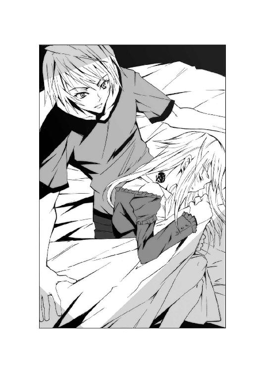

| TATTOO BLADE (富士見ファンタジア文庫) | |
| 市川 丈夫 | |
| (2015) | |

TATTOO BLADE
市川丈夫

富士見ファンタジア文庫
本作品の全部または一部を無断で複製、転載、配信、送信したり、ホームページ上に転載することを禁止します。また、本作品の内容を無断で改変、改ざん等を行うことも禁止します。
本作品購入時にご承諾いただいた規約により、有償・無償にかかわらず本作品を第三者に譲渡することはできません。
本作品を示すサムネイルなどのイメージ画像は、再ダウンロード時に予告なく変更される場合があります。
本作品は縦書きでレイアウトされています。
また、ご覧になるリーディングシステムにより、表示の差が認められることがあります。
口絵・本文イラスト 上田夢人
【序章】
衝撃は、海底から襲いかかった。
わななく波動は大西洋を揺るがし、屠られた魚群が深海を鮮血に染める。
その真っ只中を潜航する鋼鉄の船体も、転覆寸前の恐怖を味わっていた。
「なんだ、今の衝撃は！」
赤色非常灯が瞬く中、発令所で副艦長が叫ぶ。
ドイツ海軍二一式Ｕボート五八八は、竣工間もない新鋭潜水艦だ。
その強靭な船殻が、赤ん坊のような悲鳴を上げて潰れかけている。
レシーバーを耳に当てていた聴音員は、真っ青な顔で振り返った。
「分かりません！ 爆雷攻撃にしては深度が深すぎます！」
みしみしと船体が軋む中、発令所には各部署から悲鳴のような報告が届く。
「機関室です！ 推進機の出力六○％に低下！ 手動で復旧作業中！」
「居住区画に浸水！ 排水のため二区と四区を閉鎖します！」
副長は元より、乗組員たちは長年、海中での戦いに慣れた猛者たちだ。
船体が潰れかけても、冷静に任務をこなし、生き残るだけの力はある。
それでも彼らの胸には、いつもならば感じない不安が渦巻いていた。
「敵艦はどこにいる？ 航走音を聞き逃したのか？」
副長の問いに、聴音員はレシーバーをわずかに外して首を横に振った。
「いえ、海面上に艦船は一隻もいません。もしかしたら対潜哨戒機かも......」
「馬鹿な。敵航空基地のあるアゾレス諸島はまだ遠い。この海域は我らの海だぞ」
爆雷とも機雷の接触とも違う。それどころか、敵の気配すら感じられない。
その恐怖を嘲笑うかのように、より強い衝撃がＵ五八八を襲った。
轟音をまともに耳にした聴音員が、悲鳴を上げて椅子から転落する。
「ぎゃああああっっ！」
聴音員が鼓膜から血を噴き出すと、副長はもがく彼を抱き起こした。
「しっかりしろ、俺が分かるか！」
「医務室には自分が運びます！」
まだ子供じみた水兵が、倒れた聴音員を運び出そうとした。
だが水兵の襟首はわしづかみにされ、強引に引き倒される。
呆気にとられた水兵と副長の前には、黒い制服を着た細面の男が立っていた。
「勝手に持ち場を離れてはならん！ その聴音員もだ！」
甲高い声の若い士官は、居丈高に副長を見下ろした。
「さっさと今の衝撃の正体を探るのだ。敵の攻撃かどうか確かめろ！」
「あ、あなたは正気でそう言っておられるのか！」
副長はなぜか、年若いはずの士官に慇懃な怒りを示した。
「彼は任務を果たしたのです。これ以上の責務を強いるのは無理だ！」
「ならばこの艦内に、彼の吸う空気はない。無論、治療の必要もだ」
Ｕ五八八の発令所に、不穏な空気が走った。
若い士官の着る黒い制服は、乗組員たちとは異なる組織のものだ。
武装親衛隊。しかもナチスの教条を徹底的に叩き込まれた愚物。
親衛隊士官は、乗組員たちの冷たい視線も気にせず副長に詰め寄った。
「さっさと楽にしてやれ。そうすれば残り僅かな食料の分け前が増える」
「ずっと一緒に戦ってきた仲間です、家族以上の存在を殺せるものか」
「この艦は我々武装親衛隊の......いや閣下の管轄下にある。私が閣下の副官である以上、私の命令も絶対なのだ」
「......戦争がとっくに終わっているのにですか！」
副長は、カレンダーの日付を睨んだ。一九四五年六月六日。
忌まわしい連合軍のノルマンディ上陸から、ちょうど一年だ。
すでに彼らの故国ドイツは、一か月前に敗北し焦土と化している。
東からソ連軍に、西から米英連合軍に挟撃され、総統すら死んだ。
だが未だ任務の途上にあるＵ五八八の艦内で、親衛隊士官は拳銃に手をかけた。
「任務が終わるまで命令は絶対だ......ぐっ！」
言葉の途中で、親衛隊士官はだしぬけに苦悶の声を上げた。
拳銃を抜こうとした手首は、誰かの屈強な腕にひねられている。
振り向いた彼の前には、艦長......カルル・ロスバッハ海軍中佐の精悍な顔があった。
「確かに我々は、閣下の命で戦っている。だが閣下も君も船乗りではない。ましてここは深海の戦場だ。黙って潜水艦乗りの言う事を聞いてもらおうか」
「は、放せ！ この無礼を閣下に御報告申し上げるぞ！」
「なら勝手に行きたまえ。閣下ももうお目覚めのはずだ」
ロスバッハ艦長はぞんざいに手を放し、親衛隊士官を放り出す。
そして踵を返し、百戦錬磨のベテラン乗組員たちに振り返った。
「水兵、彼を医務室へ。副長、聴音員に代われ。戦闘警戒、速力上げ」
俄然、乗組員たちが任務に立ち向かい、発令所が息を吹き返す。
ロスバッハはおもむろに艦長の椅子に座し、軍帽を目深にした。
この艦は彼の手足であり、乗組員は彼の子供たちであった。
たとえ親衛隊であろうと、よそ者の自由にさせてたまるか。
そんな視線から親衛隊士官が逃げるように去ると、副長がレシーバーを握った。
「艦長、連合軍の攻撃でしょうか？」
「いや......攻撃というより、海底火山の噴火に思えたな」
もっともそんな音、一度も聞いた事はないが。ロスバッハはそう続ける。
これから通過するアゾレス諸島こそ、大西洋唯一の火山島群なのだが......
「方位と深度、出ました。近いです」
ようやく副長の報告を手にして、ロスバッハは眉根を寄せた。
「近いどころではないぞ。それに......馬鹿な！ 浮上しているだと？」
ソナーが察知した衝撃波の発信源は、刻一刻と位置を変えていた。
深海の奥底から、Ｕ五八八の深度へ。そして海面へ。
ロスバッハは、自ら聴音レシーバーに耳をすませた。未だ多くの水中雑音。
しかしその雑音をかき分け、禍々しい咆哮めいた何かが蠢動している。
「副長、潜望鏡深度まで上昇する」
「今、浮上するのでありますか？」
怪訝そうな顔の副長は、懐中時計を見やって顔を寄せた。
「もう夜が明けております。たとえ今の衝撃波が連合軍の攻撃でなくとも、どこかの国の艦船か航空機に目視で発見される恐れは十分にありますが」
「浸水はないが、今の衝撃波で船体に亀裂が生じたかもしれん。確認したい」
「それに我々は機密任務の途上にあります」
断固とした艦長に、やや声をひそめて副長は警告した。
「閣下を目的地に送り届けるまで、いかなる相手に発見されてもならないのでは？」
閣下か......ロスバッハは、苦々しげに無精髭を撫でた。
たった一人を護送する。それがＵ五八八最後の任務であった。
その男を敗亡したドイツから逃すために、Ｕ五八八の戦争はまだ続いているのだ。
そしてその男は、未だＵ五八八に目的地を教えてはくれないでいた。
「副長、目的地とはどこだ？ すでに一週間も、この海域を延々と周回させられている。閣下の御命令でな。しかしここは大西洋の只中だ。上陸できる土地など絶無だ」
正気の者が発する命令なら、ロスバッハとて従うのに躊躇はない。
しかし、閣下が正気だと誰が断言できるだろうか。
閣下は、ただ一言命じたのだ。約束の地へ行くと。
「船体の損傷を調べず航行を続ける事は危険である。潜望鏡深度だ、副長」
ロスバッハは軍帽の位置を直し、複雑な顔の副長の肩を叩いた。
「心配そうな顔をするな。この艦が沈んでは、閣下も目的地まで行けはしない」
そう言った瞬間、ロスバッハの真後ろで固い靴音が響いた。
「もちろんだよ、艦長。私は君の意見に同意する」
振り返ったロスバッハの前で、軍服姿の男が芝居じみた声で両手を広げた。
「おはよう、諸君。先ほどの衝撃に比べたら、ソ連軍多連装ロケット発射器など子供の目覚ましに思えるね。早速、状況を確認したまえ」
四○代半ばの肉体にまとっているのは、ごく普通の国防軍歩兵佐官の制服だ。
だがもちろん、彼自身の本当の身分を示す服装ではない。
燃え盛るベルリンから脱出する際、正体を隠すため死体から引き剝がしたものだろう。
彼にはそうするだけの理由があり、また脱出を成功させるだけの才能があった。
その賓客の才能を思う度、ロスバッハ艦長は背筋に言いしれぬ悪寒を感じる。
どうしてあなただけがここまで逃げ延びたのだ？
傍受した連合国のラジオ放送は、ゲーリング国家元帥やヒムラー親衛隊長官の捕縛を伝えている。ゲッベルス宣伝相は、自分の子供たちを毒殺した後、焼身自殺したと聞く。
総統とて同様に死の床に就いたはずだ。そしてあなたも、総統の死を看取った。
なのにどうしてあなただけが生き残る事ができたのだ？
そう考えるロスバッハの背中に、賓客の微笑が向けられた。
「私には才能があるのだよ、艦長」
緊張を押し隠すロスバッハに、賓客は冷たい笑みで応えてみせた。
「危険を察知し、危険を回避し、危険を自分の味方につける才能がね。だからこそあのベルリンから生きて出られた。その才能が私に告げているのだ。今、浮上すべきだとね」
「副官のグライナー中尉からは、衝撃波の正体をつかめとの指示が......」
「彼の指示より私の命令が絶対優先だ。浮上すれば全て分かるだろう」
「では危険はないとおっしゃるのですか？」
ロスバッハが問うと、賓客は悠然と首を振り脚を組み直した。
「いや、危険だ。とてつもない危険が迫っている。私には分かるんだ」
「では浮上は......」
「言ったはずだよ、艦長。危険さえ味方につけてこそ、生き残れると」
賓客の声は次第に熱を帯び、その輝く双眸には悪しき知性があった。
「無力な者を味方につけても勝てはしない。私に必要なのは、危険でも力ある者だ。それが見分けられたからこそ、私は総統地下壕からここまで生き延びたのだ」
副長が、十分な偵察深度に達した事を告げた。
海面状況を探るべく、ロスバッハは潜望鏡に向き直る。
だが夜明けを迎えたはずの大西洋は、ただ純白に覆われていた。
「濃霧だな。ずいぶんと濃い......」
潜望鏡を動かしつつ、ロスバッハは真っ白い視界に目をこらす。
あれほどの衝撃があったのに、海面は不思議と穏やかだ。
発信源も海面近くにあるはず。そう思った時、濃霧の奥深くから黒い影が迫り出した。
馬鹿な......馬鹿な......馬鹿な......ロスバッハは何度も驚愕する。
「......島ではないか」
その恐慌は、発令所にも感染した。誰もが、見える島などないと知っていたからだ。
だが前方一キロ、ロスバッハの目に映るのは、黒々と濡れ光る岩だらけの島だ。
切り立った断崖で囲まれ、剣めいた岩山が重なり合う奇観。
岩山の表面には、びっしりと白い貝類がこびりついている。しかも頭頂部まで。
明らかについ最近まで、海底にあったとしか思えない姿だ。
さらにその島を凝視していたロスバッハの口が、震えるように声を絞り出した。
「ああ、神よ......」
彼の視線は、岩山の間に見え隠れする方形の岩塊をとらえていた。
半ば崩れ、半ば潰れてはいても、四角い岩石は明らかに人為的な建築物ではないか。
そして考古学など微塵も知らぬロスバッハにも、その建築様式の異様さは感じとれた。
目の前に浮かぶ遺跡はいかなる既知の文明にも似ず、何より邪悪に思えたのだ。
「見せてくれたまえ、艦長」
ロスバッハが潜望鏡を譲ると、賓客は満足げな冷笑を浮かべた。
そして深く、大きな呼吸を両肩で吐く。
「艦長、上陸の用意を」
言って、賓客は胸の前で十字を切った。
「喜びたまえ。約束の地は、今我らの目前にある」
賓客の言葉を、ロスバッハは呆然と聞いていた。
約束の地に行くはずだったユダヤの民を、絶滅せんとしたのはあなたではないか。
ならばあなたが言う約束の地とはどこなのだ。あなたに約束した神とは誰なのだ。
ロスバッハは酷い悪寒をこらえて、艦内時計を見た。
なんて悪い冗談だろう。六月六日午前六時。
新約聖書ヨハネ黙示録第十三章に記された獣の数字。
ロスバッハは、日曜学校でそれを習った幼い娘たちに思いを馳せた。
あの子たちは、無事に暮らしているだろうか。
そして自分は無事、娘たちに会えるだろうか。
不安と恐怖に包まれたまま、Ｕ五八八は濃霧の海に浮上を開始した。
【第一章】
「誰にも見られなかっただろうな？」
問われて、部屋に入ってきた男は不動の姿勢を取った。
「いつもどおりタクシーとモノレールを乗り継ぎました。尾行された形跡はありません」
「いつもどおり過ぎてもいかん。この隠れ家へ来るコースは複数用意しろ」
裏通り。目立たない一軒家では、五人の白人がくつろいでいた。
みな地味な服装だが、眼光は鋭く、体格もがっしりしている。
首魁らしい男は用心深げに、窓のカーテンをわずかに開いた。
「我々の敵は、気配を消すぐらいなんでもないからな」
窓の外には、都会のイルミネーションと独特な形状のオペラハウスが見えた。
二○二○年のシドニーは、暑い新年を迎えたばかりである。
海風は心地よく吹くが、首魁は窓を開けようとしなかった。
「では全員揃ったところで、本部からの指令を伝えよう」
首魁が、書類をテーブルに並べていく。
一同の間からは、安堵を含むざわめきが漏れた。
「そりゃありがたい。ようやくオーストラリアを出られますか」
「ドイツ人にとって、この暑さは耐え難いですからな」
自動小銃を掲げた男は、顔の傷を蠢かせて微笑した。
「それで次の任地はどこですか？」
「場所は東京......だが誘拐するのは日本人ではない。我々と同じ白人だ」
地図や航空券に混じって、十数枚の写真が取り出された。
みな同一人物を隠し撮りしたもの。銃を提げた男が口笛を吹いた。
「ほお、こりゃあ......」
言いかけた時、ドアが軽くノックされた。合図どおり、三回ノックが二度。
「どうした、フリッツ？」
呼んだ名前は、ドアの外にいるはずの見張り役。
だがドアの鍵がカチリと開いた瞬間、無数の銃弾が扉をぶち抜いた。
身体中に銃撃を受けた男は、血潮を撒いて真後ろに倒れる。
同時に、窓ガラスが砕け散り、さらなる射撃が室内の男らを襲った。
自動小銃の男は反応する事もできず、脳天を撃ち抜かれる。
わずか数秒間で、ドイツ人たちは一人残らず血だるまと化していた。
「アスカロン３、成功」
「アスカロン８、成功」
足音も立てず侵入してきたのは、黒い戦闘服の男......八人が姿を見せた。
死亡を確認し、所持品を調べる動作は恐ろしく機敏。殺人に慣れている。
手にしているのは消音器付きＭＰ七ＳＤ九短機関銃。
顔まですっぽりと覆うヘルメットは、自動照準装置も備えていた。
そのヘルメットのフェイスガードを上げると、一人が鋭い声を発した。
「アスカロン・リーダーから先任下士官へ。全目標の殺害を確認。損害なし。これから関係書類を押収する。引き続き、一帯の封鎖を続けろ」
指揮官らしいその男は、口元に伸びた喉頭式マイクに告げる。
すると部下の一人が、書類をかき集めてうなずいた。
「全部揃ってます。航空券の行き先は東京。奴ら今度は、日本で誘拐するつもりですな」
「今年に入って三件目だ。奴らの計画にもキリがない」
指揮官が血の飛び散ったテーブルを漁ると、何枚もの写真が床へ滑り落ちた。
鮮血に汚れたそれを拾い上げ、指揮官は目をこらした。
「この娘は......！」
声には、まさかという思い。だが何枚めくっても、写真は同じ人物ばかりだ。
指揮官は、書類の内容を確認すると、普段見せない緊張を見せた。
「なぜ生きていると気づいた......一二年も居所を隠してきたのに......なぜ......」
その言葉に、副官だけが反応する。
「するとこの娘が例の......」
「ああ。我々も忘れていたし、奴らも忘れていると思った」
だがそうではなかったのか。指揮官が不思議そうに言った、その時である。
「ハドレー少佐ああっっ！」
突然、指揮官は本来の名前で呼ばれた。それも悲鳴で。
叫んだのは、死体を検分していた一人だ。
わななくその男の両腕に、誰かの爪が喰い込んでいた。
それはたった今撃たれたはずの、首魁の爪だったのだ。
「......邪魔は......させぬぞ......」
身を起こした首魁は、ハドレー少佐と呼ばれた指揮官を睨んだ。
だがその左目は、神経繊維によって眼窩からぶら下がっているではないか。
腹部からは鮮血が流れ、傷口からピンク色の臓腑もはみ出ていた。
それでも首魁は立ち上がっている。笑っている。意志があるのだ。
さらに悲鳴にもかまわず、捕えた腕を黒い兵士の身体から引きちぎる。
人間とも思えぬ生命力を見せつけて、男はハドレー少佐へと突進した。
「我らは約束の地に行くのだ！」
だがハドレー少佐の顔に、恐怖など微塵もなかった。
腰から引き抜いたのは、ベルギー製五・七ミリ自動拳銃ＦＮ五七。
しかも左右の腰から二丁。滑らかな動きで照準する。
「お前たちに約束の地などない」
間近に迫った首魁めがけ、左右の銃が同時に吼えた。
正確無比な射撃が、首魁の脳天にめり込み、突き抜ける。
脳漿を撒いた首魁は、壁際に叩きつけられ、崩れ落ちた。
「指揮を執っていたのは、やはり不死者か」
死体の頭部から、なぜか白い蒸気が漂い始める。
もう動かない首魁を見下ろして、少佐は冷静に言った。
「我々ジーゲン機関の敵は人間ではない。それを肝に銘じておくんだ」
腕をもがれた部下は、他の者によって慌ただしく運び出されていく。
その様子を苦々しく見送りながら、少佐は口元を結んだ。
「東京と連絡をつけろ。これで諦める奴らではない」
「日本に行くのですか？ しかしこの娘には確か......」
副官が言いかけると、ハドレー少佐はうなずいた。
「ああ、この地球上で最も頼もしい護衛がついている。だがな......」
確かめたい事がある。そう告げた少佐は、首魁の死体をつま先で転がした。
弾みでポケットから転がり出たバッジを、さらに踏みにじる。
バッジの形は確かに、鉤十字であった。
早朝の上野公園は、六月らしい湿っぽい大気に覆われていた。
金曜日の午前六時では、辺りにまだ人影もない。
いやたった一人、この暑さの中、黒いジョギングウェアで全身を覆った者がいる。
頭にはフードまでかぶり、素足で木立の中に身を置いていた。
人相は判然としない。長身。均整のとれた肉体。
その両腕を悠然と持ち上げ......奇妙にねじった。
何かをこねるように手首を回し、腰を落とし、上体もひねる。
見とれるほど優美な動きに、観察者たちは声をひそめた。
「間違いありません、この前の奴です」
「顔は見えませんが、動きは同じです。太極拳だと思いますが」
五、六人の観察者たちは、みな分厚い身体を持っている。
精悍な肉体を包むシャツの背には、一様にグラディエーターズの文字。
だが彼らの背後に控えていたのは、精悍どころか凶暴にも見える巨漢だった。
「太極拳だって立派な格闘技だぜ」
背丈は一九五センチ。吊り上がった目で、残忍な笑みを浮かべる。
大型冷蔵庫めいた巨漢は、周囲の男たちを押し退けた。
「あれだって十分、人を殺せる力はあるんだ。舐めたおかげで痛い目に遭ったな」
「そりゃあ、悪いのは俺たちかもしれません」
一人の男が、何か脅えるような声で言った。
「酔ったあげくにあの男にからんだのは確かです。しかし......」
「しかし何も不忍池に叩き込む事はないだろうと。そう言いてえのか」
頭髪を短く刈り込んだ巨漢は、不敵に微笑する。
そして次の瞬間、間近にいた男の襟を引き寄せ、宙に浮かせた。
「言い訳は許さねえぜ。お前たちも新人とはいえプロだ」
「押、押忍っ！」
「ましてグラディエーターズの看板を着てるんだ。早朝だから良かったようなものの、誰かの目についてみろ。団体の面目は丸潰れだ」
「申し訳ありません、小寺さん！」
名前を呼ばれた巨漢は、震える男たちに舌打ちする。
小寺が目を向ければ、漆黒の男はまだ優美な運動を繰り返していた。
「だがあの動き......俺が知ってる太極拳とは違うな」
「では別の中国系拳法ですか」
「俺もそっちは詳しくねえからな。親父さんなら知ってるだろうが」
「しかし末永コーチに見せるわけには......」
「当たり前だ。ましてシロウトにやり返すなんて真似をな」
小寺の双眸が、さらに吊り上がった。
筋肉がみしみしと蠢くのを聞き、男たちも息を吞んだ。
「では本当に......」
「悪いのはお前たちだぜ。あの男の凄さを俺に聞かせたんだから」
腕を回す。屈伸する。小寺の動作ひとつひとつが風を震わせる。
漆黒の男を見据えて、巨漢はにたりと笑った。
「指一本触れずにお前ら二○人を投げた男だ。喰いたくもなるぜ」
「あまり手荒にすると、それこそ団体の......」
「馬鹿野郎、だからエース格の俺が来たんだ。顔見て詫び入れたら、許さんでもない」
木立の中ではまだ、漆黒の男が何かを練っていた。
静かに突き出した掌を、そっと大木に押し当てる。
そして静止。舞踏にも思える動作に、小寺は歩み寄った。
「なあ、あんた」
だが漆黒の人物は、答えるどころか振り向きもしない。
大木と会話でもしているかのように、たたずむだけだ。
「あんたに話が......」
言いながら小寺は腕を伸ばす。だが彼の手は、なぜか空をつかんでいた。
いつの間にか漆黒の男は、わずかに身体をずらし、腕の外側にいる。
そんな馬鹿な。この至近距離で。動きなど一切見えない。
後から駆けつけた若手たちも、表情を引きつらせている。
「何か用か？」
フードをかぶった声は、まだ少年のものである。
「俺、トレーニングの途中なんだけど」
大木と向き合う事で、いったい何を鍛えているのか。
不可解さを抱きながら、小寺は名乗りを上げた。
「俺たちはグラディエーターズ......覚えてるよな、うちの若い奴ら」
巨漢の問いに、少年は小さくうなずいた。
究極格闘技は、世界で最も人気の高い格闘技である。
嚙みつき、金的への攻撃、目潰し以外は何でもありの、過酷な格闘技だ。
グラディエーターズは、その選手を無数に抱える屈指のメジャー団体なのだ。
マスコミに露出も多く、打撃と関節技に精通していると誰もが知っている。
だが少年に動揺はない。小寺はそれが気にくわなかった。
「聞けばあんた、こいつらを池に叩き込んだそうだな」
「酔いを醒ましてやっただけだ」
「なるほどな。だが勘違いは困るぜ。こいつらは試合にも出られない新人だ」
そして小寺は、拳を組んだ。
「団体の実力を侮られちゃたまらんぜ。だから俺がそれを見せに来たのよ」
「そんな事、する必要ないだろ」
「あるさ。うちの団体が弱いとか、あんたに吹聴されると面目が立たねえ」
小寺は、さらに間合いを詰めた。
「新人ごときを投げ飛ばして、いい気になるなと言いたいのさ」
だが少年は臆する気配も見せず、息を吐く。
そして思いも寄らぬ言葉を口にした。
「格闘技ごっこを負かしても、いい気にはなれないな」
「......なんだと」
素っ気なく言う少年に、小寺は傲然となった。
盛り上がった肩の肉が震え、仁王像めいて見える。
小寺は激怒を剝き出して、少年に詰め寄った。
「ごっこじゃねえ......真剣勝負だ」
声に、格闘者のプライドが込められている。
究極格闘技こそ最強。その自負が、少年の言葉を否定する。
「本気の潰し合いだ。ごっこなんて言葉は許さねえ」
「別に、許してくれなくてもいい」
少年は、面倒そうにつぶやいた。
「ただ、俺にはそう見えるんだよ」
「言ってくれるな......しかしもう後には退けねえぜ」
小寺は、恐れを知らぬ少年の前で太い首を回し始めた。
筋肉がごりごりと動き、関節が軋むような音を立てる。
感情は怒りを通り越し、殺気に変わっていた。
「見物人はいない。それにグラディエーターズの看板着てるんだ。練習と思うだろ」
小寺が、じりっと間合いを詰める。
熱くたぎる殺気。かつて、それだけで腰を抜かす者もいた。
それでも少年が態度を変えないと、巨漢はさらに接近した。
「俺の名前は、小寺惣二」
巨漢にしてみれば、それは降伏する最後のチャンスであった。
相手の身体にまたがり、血だるまになるまで殴る姿は幾度もテレビ放送されている。
その名を聞けば泣いて許しを請うだろう、と思ったのだ。
しかし少年は真面目な声で、首を傾げるだけだった。
「知らないな。強いのかい？」
その言葉を受けて、小寺の身体から熱気がほとばしった。
こうまで言われて、手加減をする格闘者はいない。
「只じゃ済まねえよ、あんた......！」
軽くいたぶる程度ではなく、本気で潰す気になった。
少年の腕を取り、一瞬でへし折る。そのつもりだったが......
「ぎいっ......！」
悲鳴を漏らしたのは、小寺の方であった。
しかも少年を目前にしたまま、微動だにできずにいる。
若手たちが呆気にとられる中、少年は静かに告げた。
「割るぜ」
悶絶する小寺を見上げ、冷ややかに言う。
「少しでも動いたら」
見れば、少年のつま先が小寺の右足を踏みつけていた。
骨が歪む音。信じ難い力が巨漢の突進をくい止めている。
足の指を折るのではない。足の甲を割ると言っているのだ。
しかも少年の脚は、身動きできぬほどの激痛を小寺に与えている。
鍛錬では克服できない、人体の急所を知っているのか。
「こいつ！」
だが小寺の肉体も尋常ではない。
無数の痛みを経験した身体が、激痛を乗り越えたのだ。
少年も今は動けないはず。そう見た小寺が拳を打ち込もうとして......
「なあ、もう止めようぜ。俺、こういう面倒は嫌いなんだ」
またしても少年は、放った拳の外側にいるではないか。
そして小寺の拳を、難なく受け止めている。息がかかるほどの間近で。
「てめえ、シロウトじゃねえな......いったいいいいっっ......！」
少年が足に本気を込めたようだ。小寺ももはや微動だにできない。
さらに受け止められた拳も、ぶるぶると痛みに震えている。
巌のような小寺の拳を、少年が握り潰しているのだ。
見守る若手たちも、助けに入るべきか迷っていた。
するとどこからか、乾いた声と拍手が割って入った。
「なるほど、甲利をねえ......」
現れたのは、小柄な男だった。
くたびれたトレーニングウェアを穿き、無精髭だらけの顔。
隆々たる体格の小寺に比べれば、風采が上がらぬようにも見える。
しかし彼が現れた瞬間、若手たちの背筋が音を立てて伸びきった。
それどころか小寺までも、呼吸を吞み込んでいる。
「......お、親父さん！」
「惣二、よく頑張ってるな。そこを踏まれながら、拳を出せる奴はまずいない」
身動きできない巨漢に、男は優しく微笑んだ。
「さすが俺が鍛えた次代のエースだ。グラディエーターズもしばらく安泰だな」
「だけどこいつは......！」
「東洋医学ではツボ、柔術では殺点と呼ばれる部位は無数にある」
続いて男は、漆黒の少年に視線を向けた。
値踏みするように、その全身を隈なく観察する。
「君が踏みつけているのはまさに一点だね。確かにシロウトではない。しかし初めて見たよ。その殺点を今の間合いで、現実に押さえ込む男がいるとはな」
途端に少年は足の力を緩めた。小寺が地に崩れる。
現れた男は少年に歩み寄り、名刺を差し出した。
「私は末永......彼らのコーチをしている者でね」
小寺の呻き声を聞きながら、末永は労りの視線を向けた。
「迷惑をかけて申し訳なかった。私からもお詫びするよ」
だが少年に、名刺を受け取るつもりはないらしい。
その不遜な態度に、小寺は再び身を起こしかけた。
「お、親父さん、こいつは俺たちの事を......」
「惣二、もういいんだ」
もういい。末永が名刺を引っ込めると、巨漢も沈黙した。
小柄な身体に似合わぬ眼光。それだけで若手たちはすくんでいる。
「後で団体からも正式に謝罪にお伺いしよう。君、名前は......」
「いや......俺、もう行っていいかな」
「できれば、もう一分ほど話がしたいんだがね」
謝罪する姿は低姿勢だが、コーチの声には謝罪とは異なる感情が見え始めた。
その視線で、少年を探るように見つめる。
「いったいどんな古武道を習ってるんだね」
「............」
「隠さなくてもいい。私も体捌き程度なら習った事がある。もっともあの至近距離で、まして惣二の一撃をかわすなんて真似はできないがね」
末永は、どこか嬉しそうに言葉を続けた。
「殺点だって、理屈を知る者は大勢いる。だが苦もなく実践できる者は達人だけだ。それだけ鍛えてるなら......うちでも通用するだろうね」
思いがけぬ言葉に、小寺たちが仰天した。
末永の笑みに、狡猾さが加わっている。そして老獪さも。
彼もまた、何か武術を修めた男なのか。誘う視線に隙はなかった。
「私の目に間違いがなければ、世界も狙えるぞ」
小寺も若手も、すでに呼吸すら忘れていた。
末永は、たった数分間見ただけの男に、彼の素質を見抜いたのだ。
そして誰もが末永の眼力を知っている。強さを見抜ける男なのだ。
しかし少年は、腕時計をちらりと見ただけで、無造作に身を退いた。
「もう一分経っただろ。じゃあこれで」
走り出す少年に、今度は末永が呆然とした。
「お、おい......待ってくれ、君！」
だが少年の足は止まらない。未練も微塵もない。
慌ててコーチが追いすがろうとした時だった。
「何様のつもりだ！」
突然、小寺が吼えた。思わず少年も歩みを止める。
小寺の顔面には、真っ赤な憤懣がにじんでいた。
「大昔の武道家じゃあるめえし、自分の力を金儲けに使いたくないってか。格好つけやがって......そこまで俺たちを虚仮にするか！」
「............」
「けどな、俺は恥じねえぜ。鍛えて、強くなって、金を稼ぐ。それのどこが悪いんだ！」
小寺の問いかけに、ゆっくり少年も振り返った。
瞬間、小寺の、そして若手たちの背筋に悪寒が走る。
フードから覗く少年の眼光が、鋭利な刃のように光ったのだ。
反射的に後ずさる一同に、少年は頭を覆うフードを撥ね上げた。
「俺だって、金は欲しい」
ジョギングウェアの袖をめくる。途端に、殺伐とした野獣の匂いが漂った。
剝き出された腕は、筋肉の束の如し。そして皮膚には無数の傷痕があった。
切り傷、火傷、打ち身の痕跡。そして小さな円形の傷は......
「い、いったいどこで......その傷は......」
震える小寺の目前で、少年は手首のサポーターを巻き直した。
その内には、ずしりとした重りが仕込まれているではないか。
恐らく左右の腕に五キロずつ。それであれだけの動きができるとは。
さらに足首にも同じ重りが......全てを晒け出し、少年はつぶやいた。
「けど、もっと大事なものがある」
その言葉に、末永コーチだけが満面の笑みを浮かべてみせた。
「......期待を上回ってくれるねえ、想像以上に」
だが少年はもう、振り返りもせず走り去っていく。
同時に一同は、何かに気づいて背後を振り返った。
さっきまで少年が掌を押し当てていた幹が、かすかに震える。
そして次の瞬間、大木がざざあっと津波のような音を発した。
枝一面の青葉が一枚残らず、地面に降り落ちたのだ。
山のように積もった葉に、小寺は言葉を失っている。
一人、末永だけが、少年の後ろ姿に微笑んでいた。
そしてもう一人......
西暦二○二○年の東京は、すでに六月を迎えていた。
だが湿った梅雨空などどこにもなく、蒸し暑い夏日の連続である。
二○世紀末から始まった世界的温暖化によって、日本の四季も変容した。
夏が次第に長引き、冬の厳しさが和らいでいる。亜熱帯に近い気候なのだ。
東京の町並みも様変わりしたが、古い家々が残る下町も健在である。
上野公園にほど近い根津と呼ばれる一角も、古き東京の姿をとどめていた。
漆黒の少年は、その根津の路地へゆっくりと駆けてきた。
入っていったのは、古びているが立派な屋敷。
築一○○年と言われても不思議でない家には、「鳳凰寺」の表札が掲げられている。
灯籠が並ぶ庭は竹林で覆われ、板張りの離れも見えた。
江戸時代そのままの庭にたどり着くと、ようやく少年は立ち止まった。
「くそっ......いつもより三○分遅いぜ」
腕時計を覗き、少年はジョギングウェアの上着を脱ぎ捨てる。
瞬間、まぶしい朝日に少年の頭髪が反射してきらめいた。
軽くウェイブのかかった髪は、黄金と漆黒。
染めたものではなく、自然な美しさに満ちている。
精悍な横顔からは、年齢以上の風格が漂う。
鋭さと涼やかさが入り交じった眼差しは、荘厳にすら思えた。
その視線が突然、鋭利に閃いた。
「まさか......！」
尖った鼻筋が動く。少年の嗅覚が何かをとらえたのだ。
と思った瞬間、少年はもう庭石を三つ飛び越えていた。
瞬く間に靴を脱ぎ、母屋へと駆け込む。そして......微笑んだ。
「ロレイン......な、何してるんだ？」
「まあ、お帰りなさい」
優しい声音と共に、にこやかな微笑が振り返った。
瞳は、青く澄みきったコバルトブルー。
後光のような光彩を放つのは、背中まで届く金髪。
高校の夏用制服の上にエプロンを着た少女は、不思議そうに少年を見上げた。
「今朝はずいぶん遅かったのね。早くしないと学校遅れちゃうわよ」
ロレインと呼ばれた少女は、テーブルの上でサンドイッチを切り分けている。
流暢な日本語だが、この屋敷には不似合いな外国人少女だ。
少年は弁当箱に詰め込まれたサンドイッチを見て、微笑を引きつらせた。
「あ、あれ......約束しなかったっけ？ 俺の弁当は俺が作るって」
「だって今朝はいつまで待っても帰って来ないんですもの。だから私、はりきって二人分作ってみたのよ。ねえ、味見してみてくれる？」
「ああ、勿論だ......相変わらずうまそうじゃないか」
やけに甘くなった声で、少年は差し出されたサンドイッチを口にした。
瞬間、ばりっという音が口中で響く。続けて広がったのは得も言われぬ味覚。
それでも少年の微笑は、崩れなかった。
「た、確かに特製だ。めまいがするほどうまいぜ。で、中身は何だい？」
「あんこと......たくあんよ。それからマヨネーズも入れてあるんだから」
ようやく、少年の身体がぐらついた。
見た目は完璧だが、味覚と胃袋は激しく抵抗している。
だがロレインはにっこりと笑い、少年に顔を近づけた。
「ね、好きな物ばかりで美味しいでしょ。自信作なのよ」
「さ、さすがだぜ、ロレイン。やっぱりお前の料理センスって天才だよ」
「本当？ わあ、良かったあ！」
エプロンをした少女は、細い腕でぎゅっと少年に抱きついた。
そして子犬のように、少年の胸元に鼻をこすりつけてくる。
髪から甘い芳香を漂わせ、ロレインは少年に微笑みかけた。
この笑顔に本当の事は言えない。だが......
「だったらもうひとつどうぞ。ほら、食べさせてあげるう」
天使のような微笑みで、ロレインは少年の口に第二次攻撃を詰め込んだ。
少年は味覚どころか思考まで破壊され、胃袋もねじれるほどに悶絶する。
そこでようやくロレインも、少年のわずかな変調に気がついた。
「どうしたの、もしかしておいしくなかった？」
今度は唐突に、ロレインの瞳が不安げに潤み始めた。
青い瞳が水面のように輝き、さざ波が広がっていく。
少年は慌てて、くわえたサンドイッチを喉に押し込んだ。
「そ......そんな事ないぜ。もっと食いたいぐらいだ」
「でもなんだか顔が青いわ。ねえ、おいしくないなら正直に言って」
「信じろよ。俺がロレインに噓つけるわけないだろ」
すると、金髪の少女はにこりと笑みを取り戻した。
「よかった。いつも大ちゃん、お弁当作らなくていいって遠慮するんだもの」
大ちゃん。それは少女だけが呼ぶ彼の名前だった。
もう一○年以上、そう呼ばれる生活が続いている。
成長するにつれ、気恥ずかしさが増す呼び名だが抵抗はできない。
ロレインにとって少年は、いつまでたっても幼い頃の......
「ねえ大ちゃん、このサンドイッチ、お祖父ちゃんにも残しておいてね」
おっとりと告げるロレインの横で、少年は高校の制服をまとった。
「もちろんだぜ、ロレイン。爺ちゃん、もう起きてるんだろ？」
時計が七時半を回ったのに気づき、少年はロレインの腕を取って庭へ出た。
もたもたするロレインを引っ張り、少年は板張りの離れへ叫んだ。
「爺ちゃん、行ってくるぜ！ 台所にサンドイッチがあるからな！」
「おおう、気をつけろよお」
姿は見えない。だが老人とも思えぬ野太い声が返ってくる。
「ロレインのサンドイッチは、全部お前のものだ。残しておいてやるって」
少年は、老獪なセリフに舌打ちした。
「自分だけは長生きするつもりかよ......暇だったらたまにはメシ作れ！」
「まあ、大ちゃん。やっぱり私の朝食じゃ不満なの？」
「い、いや、そうじゃないよ......とにかく行くぞ、ほら！」
お祖父ちゃん、行ってきまーす。
二人の足音と共に、ロレインの可憐な声が遠のいていく。
静寂を取り戻した屋敷に涼風が鳴り、竹林がざわめいた。
その緑の中に鎮座するように、古びた道場がある。
板敷きの場内には神棚が据えられ、一方の壁には無数の木刀が並んでいる。
もう一方の壁はすっかり取り払われ、庭を見晴らす縁側が据えられていた。
その縁側に、巨漢が悠々と寝そべっていた。
短く刈り込んだ白髪頭と皺深い呼吸は、確かに八○代の老人のものだ。
だが着流し姿で背を向けていても、肩は瘤のように盛り上がっている。
肉厚な身体には精気が満ち、潰れて変形した拳で杯を握りしめていた。
「いつまでたってもガキだぜ、あいつは」
清酒を口に運ぶと、老人は初夏の青空を見上げた。
「いつまでもガキじゃあいられねえのに」
眠るように目を閉じると、老人は酒臭い息を吐く。
巌のような老人の顔には、無数の傷痕が走っている。
まるで縫合されたかのようだが、眠る顔は安らかだ。しかし......
「帰りな。誰だか知らねえが」
不意に老人は、静けさの中に呼びかけた。
「俺はただの楽隠居だ。面倒な話は聞きたくねえな」
辺りに人影はない。気配すらも感じられなかった。
だが老人は右目だけを開き、竹林の奥を透かすように凝視する。
すると足音も立てず、すらりとした長身の女が現れたではないか。
アクセサリは一切身につけず、無味乾燥なダークスーツを着込んでいる。
この暑さの中で上着も着たままだが、見事な肢体は隠せはしなかった。
豊かな胸元からくびれた腰へのラインは、長い脚とも相まって理想的だ。
波打つ黒髪をなびかせる様は威風堂々とし、瞳には知性が輝いていた。
「......鳳凰寺無頼さんですね？」
縁側に回った女は微笑を保ったまま、老人......鳳凰寺無頼の前に立った。
「私の名前は......」
「名乗らなくてもいいぜ。だから帰りな」
無頼は瞑目したまま、今度は皿に並んだたくあんを箸でつまみだした。
「俺は盛りを過ぎた爺いだ。厄介な物を抱えた女と、する話なんかねえな」
「厄介？ いえ、私は別に怪しい者では......」
「ほお、物騒な世になったもんだな。懐にそれを隠しといて怪しくねえとは」
途端に、女はぎくりと背筋を凍らせた。目を閉じていてなぜそうと分かる？
すると無頼老人は、おかしそうに顔を歪めた。
「地面に落ちた竹の葉ってのは踏めば必ず音がする。あんたの足下がそうだった。だがあんたは足音ひとつ立てずに近づいてきた。危ねえぜ」
そして女もようやく気づいた。
老人は寝ころんだままだが、すでに間合いを張り巡らせていたのだ。
しかも武術家特有のたぎるように熱い間合いではない。
ただぽんと無造作に、静寂な結界を展開しているのだ。
実戦に身を置いた者でなければ、容易には気づかないだろう。
老獪すぎる。女はその間合いだけで、老人の力量を理解した。
「......誘ってるのね」
急に、女の声音に冷たいものが込められた。
化けの皮を、ずるりと引き剝がす。それでも老人は、たくあんをつまんでいた。
「ふっ......！」
短い呼吸を吐き、女は胸元に右手を突っ込んだ。
と見えた次の瞬間、ベレッタＭ九二の黒い銃口を無頼の額に突きつける。
正確無比な狙い。神業めいた抜き打ちが、瞬時に老人を屠らんとした。が......
「やっぱりだ。俺は情けないぜ」
ため息を吐き、無頼は己を哀れんだ。
「やっぱり俺は盛りを過ぎてる」
女は驚愕したまま、拳銃をぶるぶると震わせていた。
ベレッタを押さえつけたのは、さっきまでたくあんを挟んでいた箸ではないか。
間近にいながら、女にはその動きすら見えてはいなかった。
無頼は、箸だけで拳銃のスライドを封じている。引き金は微動だにしなかった。
「これで盛りを過ぎてるなら、若い頃はいったい......」
顔に血を昇らせた女に、無頼はようやくまぶたを開いた。
「さあな。もう昔の事だ、忘れたぜ」
無力を悟り、女がベレッタから力を抜くと、無頼も箸を離した。
拳銃を胸元にしまった女は、観念したように身分証を提示する。
「迫水玲子。警視庁国際犯罪部の警部補です」
「ほお、桜田門か。若いのにいい度胸だぜ」
「おだてないでください。私で遊んだくせに」
玲子の動きも格闘技に通じた者のそれだ。本性を隠す程度の知性もある。
だがただの有能な捜査官ではない。そう思わせるほどに眼光が鋭さを増している。
無頼老人もそんな玲子の素性に感づいたのか、薄ら笑いを浮かべ始めた。
「最近の警察はいきなり抜くのかよ。恐ろしいな」
「誘ったのはあなたでしょう。酷い楽隠居だわ」
「分かってて応じたんだ。お前さんも酷い女だ」
くえない奴、と玲子は腹の底でほぞを嚙んだろう。
たちの悪そうな老人は、あぐらをかいて迫水玲子を招き寄せた。
「まあいい、座りな。今、一杯出すから」
「冗談！ 勤務中です。勤務外でもお断りしたいわ」
玲子の言葉を、無頼は呵々と笑い飛ばすだけだ。
それでも縁側に座った玲子は、ただ者とは思えぬ老人に居住まいを正した。
「用件を申し上げます。あなたのお孫さん......鳳凰寺大牙くんの事で来たんです」
その名に、無頼老人は首を傾げた。
「大牙なら高校だよ。今出てったばかりだから、追いかければ会える」
「まず確かめたい事があるんです。彼の成長について」
「ふぅむ。俺はまた例の件で大牙をしょっぴきに来たのかと思ったが」
「どういう意味です？ 彼、まさか犯罪を......」
だがその問いに、老人は答えない。
無頼は、ぼりぼりとたくあんを嚙み砕きながら、日本酒を口に運んだ。
「あいつは十分、成長してるぜ。身長は一八五......ありゃあまだ伸びるな」
「そういう意味じゃありません」
「だったら男として成長したかって事か。なら忠告するぜ」
無頼は急に野卑な視線で、玲子の胸元を箸で指し示した。
「俺の孫は、違う意味でサカリがついてる年頃だ。そんな格好で会ったら襲われるぜ」
言われて、玲子は白いブラウスを見下ろした。
そのボタンがいつの間にか、上から下まで引きちぎられている。
放恣に開け放たれた襟の間からは、豊かな胸を包む白い下着が丸見えだった。
「い、いつの間にいいっっ！」
絶叫した玲子は上着でそれを隠し、今頃無頼の足下に気づいた。
たくあんが載っていた皿には、ボタンが整然と並べられている。
ベレッタを防ぐ前に引きちぎったというのか。
ようやく玲子は、げらげら笑う老人の底知れぬ力に気がついた。
「あ、あなたは......」
「だから言っただろう、玲子。一筋縄でいく人物ではないと......」
玲子を遮ったのは、新たな男の声だった。
やはり音もなく竹の葉を踏みしだくと、縁側へと静かに歩み寄る。
すでに彼の存在も悟っていた無頼は、つまらなそうに酒を干した。
「相変わらず無粋だな。俺はもう少し、この姉ちゃんと遊びたかったのに」
「私が日本に来た以上、何を確かめるかはお分かりのはず」
男は、無頼の言を無視して一礼した。
「お久しぶりです、無頼氏......いや、無頼師範」
再び、風が鳴った。
真っ赤な闇があると、少年は知っていた。
逃れることはできず、目をつぶってもなぜか見える。
一面鮮血を撒いたような世界で、少年は逃げ惑った。
だがいくら駆けても、立っている場所に変化はない。
そして背中に呼びかける声も、決して消えないのだ。
『大牙......大牙......』
優しい女の声である。
しかし少年は、一度もその声に振り向いた事がない。
なぜか恐ろしい声に思える。
耳を塞いでも、鼓膜の奥に彼の名前はこびりついた。
『大牙......大牙......』
いつものように身体を丸め、じっと耐えるしかない。
恐怖が行き過ぎるのを。自分を許してくれるのを。
だが今日はいつもより、声は間近に聞こえていた。
「大牙くん......鳳凰寺大牙くん......」
「う......ううっ......」
「ちょっと大牙くん、起きなさいよ」
「うああああっっ！」
肩に手が置かれた瞬間、鳳凰寺大牙は悪夢から醒めた。
そして周囲を見回す。見慣れた教室とクラスメイト。
すぐ側には、呆れた顔の担任教師が腕組みしている。
大牙は大きく息を吐き、金と黒の毛髪を搔き上げた。
「......なんだ、先生かよ」
「なんだじゃありません。また私の授業で寝てたわね！」
まだ二○代半ばの英語教師は、教科書で大牙の肩をこづいた。
「あなた目立つから、寝ててもすぐに分かるのよ」
確かに、教室の一番後ろに座る長身は、他の生徒に比べて分厚く見える。
さらに全身から醸し出す雰囲気が尋常ではない。鋭利な刃物を思わせる。
大牙を嘲笑う級友がいないのも、彼の底知れぬ雰囲気のせいだ。
しかし態度は悪くても、担任教師は大牙に反抗された覚えはない。
だからこそ愛情を込めて、もう一度肩を叩いてやった。
「学校行事も欠席多いし、帰宅部なんだから、せめて授業ぐらい聞きなさい」
「んん......そうするよ」
うやむやな返事をするうち、チャイムが鳴る。
金曜日。最後の授業が終わりを告げると、大牙は冷や汗を拭った。
どれだけ暑い日に走り込んでもかかない汗だ。
一○日に一度。酷い時には三日に一度の割で悪夢を見る。
それも物心ついた時からだ。見なくなった時期などない。
今朝のように、腕に覚えのある奴らに囲まれても恐怖は感じない。
しかしこの悪夢だけは別だった。いつまでたっても慣れないのだ。
「ったく......なんだってこんな夢を......」
クラスメイトが帰り支度をする中、大牙は気分を変えようと窓の外を眺めた。
大牙が通う私立神宮学園高校はその名の通り都心、神宮外苑に接している。
新宿区・渋谷区・港区が接するこの近辺は、緑地とスポーツ施設が多かった。
それでいて繁華街も近い。神宮学園は、まさに東京の中央に位置しているのだ。
保育園から大学まであり、大牙も小学校からエスカレーター式に高校まで移った。
と言って格別、進学校ではない。むしろスポーツや芸術教育に力を入れていた。
大牙は普通科二年だが、他にも様々なコースがあることで知られ、人気も高い。
その校庭を見下ろす大牙に、一人の級友が声をかけた。
「ところで大牙、お前がサッカー部に入る件だけどな」
「ちょっと待て。その話なら、俺、断ったじゃねえか」
眉を曇らせた大牙を、級友はあえて無視した。
「いいや、お前は我がサッカー部に入るんだ。そして俺たちを全国大会に導くんだ。さらに言えば全国優勝して、俺たち部員の顔をテレビに映して欲しい」
「他力本願かよ。そんな頼りないサッカー部があるか」
「あるからお前を誘ってるんだ。お前が入ってくれるように、今や部員一同、手をつないでお百度踏みまくってるところだ」
「手をつなぐ前にボールを蹴れ、ボールを」
頭を抱えた大牙に、サッカー部員は首を横に振った。
「そもそもお前が普通科にいるのが変なのだ。なぜスポーツ科に入らない？」
その疑問は、クラスメイトどころか学校中が抱えているものだった。
大牙は一○○メートルを九秒台で走り、自由形なら五○秒以下で泳いでしまう。
スポーツ科の生徒でもかなう者などいなかった。
だがもっと不可思議なのは、誰が見ても大牙が本気でないところである。
何気ない顔で、世界記録を叩き出しているのだ。
当然教師らはスポーツ科への転科を勧め、スカウトの勧誘も数知れない。
しかし大牙は、幾ら大金を提示されてもプロスポーツを断り続けていた。
身体つきを見れば、鍛えているのは明白なのになぜ？
「俺、スポーツは嫌いなんだよ」
いつもの理由を口にして、大牙は大きく伸びをした。
無論、大牙にも肉体を鍛える理由がある。
鍛えるというより、強くなりたかったのだ。
しかし、その理由を口にしたのは一度だけである。あれは......
「大ちゃーん」
不意に呼ばれて、大牙は神宮外苑の並木道に目を向けた。
路傍には、薄いピンク色の制服を着た少女たちの姿が見える。
私立神宮学園高校看護科の生徒たちであった。
彼女らは、五年一貫教育で看護師を目指している。
その中に、一人だけ長い金髪を束ねた少女がいた。
遠く離れていても、その彼女一人だけがひときわ陽光に輝いている。
澄んだコバルトブルーの瞳は、窓辺にいる大牙に気づいていたのだ。
「大ちゃーん、もう授業終わったの？」
笑顔がいっそうまぶしく映えると、大牙は右手を小さく振った。
そのぞんざいな反応だけでも、ロレインは力一杯手を振り返してくる。
やがてロレインが別校舎へ去ると、サッカー部員は大牙に詰め寄った。
「大牙、サッカー部に入る話はもういい。その代わりお知らせがある」
「ああ？」
「ロレインちゃんを、我がサッカー部専属チアリーダーに任命するぞ」
言うなりサッカー部員は、どこからともなく画用紙を引っ張り出した。
「見ろ、これを！ 俺が寝ずに考えたロレインちゃんのユニフォームだ！」
「寝ずに考えるヒマもあるならボールを......だいたいこのスカートは何だ！ 短すぎる！」
「二○世紀の風紀委員のような事を言うな！ この短さこそ、彼女の魅力を最大限に引き出すアイテムなのだ！ ちなみにコンセプトは『さわやかなお色気』だ」
大牙は呆れて、席を立った。
「そんなもん、ロレインが着るわけないだろ。あほくさい」
「それも承知だ。だがお前から着用を勧めればもしや......」
「ふざけるな。ロレインにそんな格好させられるか」
「やけに抵抗するな。まさか噂どおり......お前、ロレインちゃんとできて......」
言い終わる前に、サッカー部員の脳天に大牙の拳骨が落下した。
「俺とロレインはそんなんじゃねえよ」
「しかしあの子、昔っからお前にべったりだぞ！」
「それは一緒に住んでるからだ。学校は別々だし」
「ならばもっと殴れ、大牙。そうすれば俺、ロレインちゃんに看護してもらえる」
ため息を吐いて、大牙はリュックに中身を詰め込んだ。
「俺はただ同居してるだけだ」
帰り支度をする手つきは、いつもより乱暴だ。
大牙のいらつきに気づくと、サッカー部も後ずさった。
「た、大牙、本気で怒ったのか。気を悪くしたなら......」
「それだけだからな」
大牙は、特大の弁当箱をしまって繰り返した。
特製サンドイッチは、ひとつも残ってはいない。
むずがる胃袋をさすり、大牙は教室を後にした。
「ロレイン、お待たせー」
神宮外苑の並木道を、活発そうな少女が駆けてくる。
両手に、ワゴン車販売で買ってきたアイスクリーム。
ベンチで待つロレインに、コーンに乗ったひとつを差し出した。
「ありがとう、美樹ちゃん。でも走ったら危ないのに」
「あんたじゃあるまいし、転ばないわよ。でも本当にそれでいいの？」
「うん。キムチとドリアンのミックスアイス。前から食べたかったの」
にっこり笑うロレインに、小川美樹は背筋を震わせた。
「あんたっていつも信じられないコンボを選ぶわよね。ああ、臭い！」
「でもおいしいのよ。来週は納豆とチョコのミックスにしようっと。うふふふ」
「そんな奇怪な組み合わせ、毎週楽しみにしないでよ！」
二人は共に十五歳。神宮学園高校看護科一年の同級生だ。
だが長身の美樹は、まるで姉のように見える。
元々が姉御肌。ボーイッシュな髪型も、凜とした瞳も頼もしい。
対照的な親友同士は、木陰のベンチで放課後を満喫していた。
「それにしても明日も実習だなんて面倒よね。土曜日なのにさー」
「そお？ 私は楽しみにしてるんだけど」
微笑むロレインに、美樹は顔をしかめてみせた。
「だって他の学校の看護科なら、実習は二年生からよ。病院とか老人ホームに行くのは」
「実習って言っても、先輩について行ってお手伝いするだけじゃない」
「まあね。でも明日は保育園実習でしょ。あたし、子供とか苦手なのよねー」
美樹が肩を落とすと、ロレインはまた笑みを浮かべた。
「私は子供、好きよ。この前の実習の時もみんな懐いてくれたし」
「あんたは子供と精神年齢が近いだけよ。もっともあんたの大ちゃんの方が子供だけど」
言われてロレインは、唇を尖らせる。
「大ちゃんは子供じゃないわよお」
「子供よ！ っていうかガキね。こないだも他校の生徒と喧嘩してさあ」
美樹がアイスを一口舐めると、ロレインはさらにむくれた。
「あれは私がしつこく声かけられてたから......」
「だけど殴ったのバレたら退学になるじゃない。あいつ、喧嘩が好きなのよ」
「相手の人が大ちゃんの事知らなかったのよ。ここら辺の学校の人なら、大ちゃんが顔見せただけで謝ってくれるのに......本当は大ちゃん、優しいんだからあ」
必死に続けるロレインを、美樹は斜めに見下ろした。
「なーによ、どうせ優しいのはあんたにだけなんでしょ」
なぜか不満そうに言って、美樹はロレインの胸元についた名札を指で弾いた。
名札にはローゼンブルグという家名が記されている。
ロレイン・ローゼンブルグは、嬉しそうに表情を緩めた。
「うん。大ちゃん、私には優しいのよ。ずっと昔から」
スイスで生まれたロレインが、鳳凰寺家に来たのは一二年前の事だ。
ロレインに両親はなく、どういうつてか日本に連れてこられたのだ。
幼いロレインは寂しい思いをしたが、一歳上の大牙に守られて育ってきたという。
そこまでは、鳳凰寺家によく遊びに行く美樹も聞いて知っている。
だがその美樹から見ても、大牙はあまりに不可解な少年であった。
「みんな言ってるわよ。大牙は、何考えてるか分からないってさ」
「う、うん......知ってる」
「運動神経抜群のくせにプロスポーツからのスカウトみんな断ってるしさあ」
「そ、それは......大ちゃんにはきっと考えがあるのよ」
「考えがあったらスカウトされてるって。きっとあいつ本当の馬鹿なのよ。そうよ、きっと頭蓋骨の中まで筋肉なんだわ。契約金の額も分からないアホなのよ」
「あの......あのね、美樹ちゃん......」
「ロレイン、あんた看護師じゃなくて医者になりなさい。それで大牙のアホを治すのよ。もっとも現代医学で治るかどうかは......」
ふと殺気を感じて、美樹は背後を振り返った。
いつの間にかそこには、眉を曇らせた大牙が立っている。
授業を終えた少年は、美樹の手からアイスを取り上げた。
「よくもでかい声で馬鹿だのアホだの言ってくれたな、小川。これはもらうぜ」
「だって本当の事じゃない！ 返してよ、あたしのチョコミント！」
コーンを囓った大牙は、いつもの調子を崩さぬ美樹に辟易した。
年下なのだが物怖じするところがなく、誰も言わない事まで口に出してくる。
だが女を感じさせないさばけた性格は、大牙にとってもつき合いやすかった。
「俺はこれから月イチのバイトなんだ。カロリー摂らなきゃ働けねえからな」
すると大牙の言葉を聞いて、ロレインが急に心配げな顔になった。
「大ちゃん、今夜はアルバイトなのね......」
「ああ。帰りはまた朝になるからな。晩飯は、爺ちゃんと食っとけよ」
「......怪我しないでね」
その声に、大牙は思わず言葉を詰まらせた。
もうロレインの瞳に涙がたまり、ゆらめき始めている。
慌てて大牙は、平然とした顔を取り繕った。
「怪我なんてしたの、最初だけだぜ。ここんとこ無傷だろ？」
「うん、分かってる」
ロレインは一応うなずいたが、視線はうつむいていた。
その表情を読みとったのか、美樹が怪しげな視線を大牙に向けた。
「あんたさー、バイトってどこで何してんの？」
「いいじゃねえか。関係ねえだろ」
「関係あるわよ。あたしの大事なロレインをこんなに心配させてさ。それにお金が欲しいんだったらスカウトされればいいのよ。いったいどういうつもりよ？」
だが大牙には、アルバイトの内容も理由も誰にも言うつもりはない。
たとえそれがロレインのためであったとしても......だ。
頑として視線を逸らさぬ美樹から、大牙は顔を背けた。
「ほら、アイス返すぜ。半分残しておいたからな」
「な、なによ、こんなに食べちゃって」
「うるさいな。バイト代が入ったら奢ってやるよ」
美樹の髪をぐしゃぐしゃと搔き回すと、大牙は身をひるがえした。
妙に顔を赤らめた美樹にも気づかず、神宮外苑の並木道を駆けだしていく。
「じゃあな！ 二人とも早く家に帰れよ！」
「うん、大ちゃんも気をつけてね！」
声援を受け、大牙は午後のまぶしい日射しの中を走り抜けた。
その脳裏には、まだロレインの涙ぐんだ顔が焼きついている。
彼女の表情が翳る度、大牙は幼い頃の記憶を思い起こすのだ。
あれは一二年前。鳳凰寺家に来た当時、ロレインは泣いてばかりいた。
両親はスイスで謎の失踪。だがロレインには、その事実がまだ理解できなかった。
幼い大牙にも、寂しがるロレインをどうしたらいいか分からなかった。
ただ強く思った。泣かせたくない。悲しませたくないと。
その気持ちは今なお変わらない。だからこそ大牙は......
「............？」
ふと大牙は、木立を抜ける道の途中で立ち止まった。
大木の陰から、怜悧な気配が姿を見せる。
見覚えのある顔に、大牙は表情を歪めた。
「覚えてるよね、勿論」
現れたのは末永......グラディエーターズのコーチだ。
不穏な空気を漂わせた男は、嬉しげに微笑した。
「驚いたよ、高校生だとはね。それもまだ二年生か、鳳凰寺大牙くん」
どこで名前と、学校を突き止めたのだろうか。
大牙は、薄ら笑いを浮かべる末永を見据えた。
「あの後、尾行された覚えはないんだけどな」
「そんな真似はしてないさ。ただ親切な人が一人いた、それだけだよ」
大牙は納得した。道理でもうひとつ、気配を感じたはずだ。
しかし髪の香りと甘い息づかい......女でこれほど身を隠すのが巧みとは。
「君が欲しくてね、どうしても。だからもう一度、誘いに来たんだ」
断るよ。大牙は言下に言い放った。
「出たがりは他に幾らでもいるだろ。俺は......」
「君ほどの逸材、他にいるとは思えないんだよ」
低く静かに、小寺は言い放った。
「最初は君を古武道の一派だと思っていた。だがそうでない事にも気づいた。いわば未知の武術だ。見たがる客は、大勢いると思うがね」
大牙は、末永の商売っ気を見抜いた。
「それが俺を売り出すうたい文句ってワケか」
「だが目新しさだけで金が稼げるほど、格闘ビジネスも甘くないんだ」
末永は、悪びれもせずに口元を緩めた。
「その点、君には華がある。強い者は大勢いるが、華があるのは滅多にいない。だからこそ、両方揃った君は逸材だと思うんだよ」
「どう思われようと、俺には関係ない。二度と顔を見せるなよ」
大牙は間合いを外そうとしたが、末永はその行く手を遮った。
「君は金以上に欲しいものがあると言った。それは何だ」
「大事なものがあると言っただけだぜ」
「同じ事だ。我々に用意できるなら、それを君に提供するよ」
「しつこいな。そんなもの、教える気はないぜ」
「なら、他の誰かに聞くだけだ」
末永の双眸に邪な光が瞬く。大牙はその言の意味を探った。
「......どういう意味だ」
「さっき話していた金髪の子だよ。君と一緒に暮らしてるそうだね」
勝ち誇ったように、末永は顔を崩した。
「君がだめならあの子に聞くよ。同居してるんだ。何か知ってるはず......」
瞬間、大牙の腕が末永の胸ぐらをつかんだ。
と思った時にはもう身体を一回転させ、大地に叩きつけていた。
大牙は全身からたぎるような殺気を放ち、末永を見下ろした。
「ロレインに手を出してみろ！ 俺は本当にお前を殺してやる！」
大牙は獣のような怒声を発し、末永に固く握った拳を見せつけた。
だが強い衝撃を受けてなお、末永の笑みは崩れなかった。
「さ、さすがだね......はは......私の目に間違いはない......」
「お前......」
「たまらんね......まだ手加減してるのか。君、本気になったらどこまでやれるんだ？」
咄嗟の怒りで投げ落としたとはいえ、確かに大牙は全力ではなかった。
しかし末永の受け身の技術、ダメージを吸収する肉体も相当なものだ。
「結局、口じゃ分からないんだな」
大牙は諦めたように言った。声にはまだ殺気が込められている。
立ち上がった末永は、自分が認められた事に気がついた。
「そういう事だ。うちに来てくれるね」
「その前に、俺の本気が売り物になるか確かめてもらおう」
大牙の殺気から熱が消え、代わりに冷たいものが広がる。
視線を据えた少年は、さらに呼吸を整えた。
「だがあんただけじゃない。そこで隠れている人にも来てもらうぜ」
背後の気配に、大牙は眼光を閃かせた。
「こんな面倒を連れてくるなんてどういう事だ。俺に恨みでもあるのか」
「そんなものは別にないわ」
やはり、木陰から歩み出て来たのは女であった。
黒髪を揺らした長身は、大牙をひたと見据えて微笑んだ。
「ただ確かめたいだけよ、あなたの本気をね」
迫水玲子。女はそう名乗り、日射しに目を細める。
危険を感じて、大牙の背筋がぞくぞくとわなないていた。
都心から五○キロ離れた逗子の市街は、深夜の静寂に包まれていた。
池子と呼ばれる地域は、その中心部を離れた山間にある。
元々は太平洋戦争の後に、アメリカ軍の弾薬貯蔵施設として接収された地だ。
それが米軍家族の増加に伴い、九○年代に米軍住宅地として生まれ変わった。
さらに第二次朝鮮戦争後、在日米軍の撤収と共に、池子住宅は日本に返還された。
広大な跡地には現在、巨大なマンションが建設されている。
その建設現場に接する国道沿いに、アイリッシュ・パブ「ハイランダー」があった。
客もまばらな店内で、末永はカウンターに座していた。
「今更聞くのもなんだが......あんたは何者だね？」
横に座る迫水玲子に、末永は酒臭い息をかける。
「あの少年......大牙くんの居場所を教えてくれたのは感謝してる。だが理由はなんだ」
「言ったでしょう。私は彼の本気を見たいのよ」
玲子は、外に自分の車を停めてある。
酒も吞まず、ミネラルウォーターを口に運んだ。
「それにはあなたのような人間が、ああした誘いをするのが一番だと思っただけ」
「同居人の娘の事か......確かにな。おかげで彼の実力が見られるわけだ」
しかしここで何が始まる？ 末永は、周囲を見渡した。
大牙の指示で、二人はこの池子のパブに連れてこられたのだ。
ここでしばらく待て。そう言い残し、大牙は店の奥に姿を消した。
すでに午前三時過ぎ。末永も次第にいらつき始めた頃......
「そろそろ彼の出番です。これを持って奥へどうぞ」
マスターを務める三○代の白人が、ラミネートされた通行証を渡してくれた。
『家族用』『全エリア通行可能』の文字。
不審がる末永に微笑み、マスターは店の裏口を指し示した。
玲子は代金を払い、カウンターから滑り降りる。
裏口を出た二人の前には、黒塗りのリムジンが待っていた。
「ミスター末永とミス迫水だね？」
運転席から出てきたのは、大柄な黒人だ。
「乗ってくれ、フェニックスボーイが待っている」
「フェニックス......？」
末永は首を傾げながらも、リムジンの後席に乗り込んだ。
玲子も後に続くと、車体は建設現場目指して発進した。
「どこへ連れて行こうっていうんだ......」
車窓は池子の森に囲まれた建設現場だ。明かりなどない。
だが五分も走らぬうちに、リムジンは闇の中で停車した。
車を降りた玲子と末永は、暗黒に目をこらした。すると......
「なんだ、ここは......」
末永は、眼前にそびえるコンクリート製の建物に圧倒された。
カマボコ型のそれは、高さ三○メートルはある。
その大半は池子の丘陵に吞み込まれ、巧みに偽装されていた。
「かつての核弾頭貯蔵施設だわ、これ」
さすがに玲子も、感心したように言った。
「米軍施設の名残よ。よく残っていたものだわ」
「だけどおい、日本は核を......」
「非核三原則が守られてたなんて、本気で思ってるの？」
施設の正面には、分厚い扉と警備員が立ちはだかっている。
二人が通行証を見せると、彼らも妙に親しげな顔になった。
「オーケイ、楽しみな。もうじきフェニックスボーイの出番だ」
重々しいドアが開かれる。通路が見え、その先には光。
そして光に向かって歩きだすと、二人の鼓膜に歓声が襲いかかった。
「これは......！」
玲子も視線を上下左右に巡らせ、呆然として息を吞んだ。
四方には、ぎっしり観衆で埋まった客席が広がっている。
老若男女。みな拳を振り上げ、叫喚を発していた。
ざっと一万人。日本武道館クラスのアリーナではないか。
「これだけの人数がいて、騒音と熱気が漏れないとはね」
玲子は施設に感心するが、末永は客席の中央に目を向けていた。
そこには金網で囲まれた八角形が据えられている。
しかも白いマットは、すでに大量の鮮血で染められていたのだ。
「この試合は......」
殴り合っているのは、身長二メートルほどの白人と黒人。
だが彼らの手にグローブはない。剝き出しの拳で殴り合っているのだ。
殴るだけではなく、指を相手の眼球に突き入れ、股間を蹴ってもいる。
何でもあり、と表される究極格闘技でもここまではやらない。
まさにルール無用。潰し合いと呼ぶにふさわしい、凄惨な戦いだった。
そしてその戦いに歓声を上げる人々を、二人は奇異な視線で見渡した。
「おら、早くやっちまえ！ こっちはボーナスつぎ込んだんだぜ！」
「お前が負けたら三○万がパアだ！ ふらふらしてんじゃねえよ！」
金を賭けている。気づいた末永が顔を強ばらせた。
すでにリングでは劣勢になった白人が倒れ、黒人の殴打を浴びている。
猛撃を止めるレフリーは存在せず、戦いは一方的な殺戮へと移っていく。
白人が動かなくなると同時に罵倒が響き、黒人への歓声が高まる。
なんという非道な戦い。なんという非道な観客なのか。
いったい誰がこんな試合を主催し、これだけの観客を集めたのだろう。
そもそも誰がこんな闘技場を造ったのか......疑問がふくらみだした時だ。
〈御来場の紳士淑女のみなさん！〉
突然、場内アナウンスが声高に叫ぶ。
〈本日もフリーバウト東京へお越しいただき、誠にありがとうございます！〉
玲子たちは、空いていた席に座るとようやく悟った。
「フリーバウト東京......ここが......」
噂だけなら、末永も聞いた事がある。
出資者は、裏世界に通じた富豪ばかり。
彼らの楽しみと利益追求のために創設された賭け喧嘩。それがフリーバウトだ。
国際捜査機関の目を盗み、各国主要都市に巨大な闘技場が建設されたという。
試合に参加するのは武術家だけでなく、殺し屋、テロリスト、軍隊経験者たち。
試合の勝者は莫大な賞金を獲得し、それ目当てに犯罪者たちが集うと聞いた。
だが未だどの捜査機関も、フリーバウトの闘技場を特定できてはいないのだ。
日本でも極秘裏に建設されたと言われていたが、警視庁も未だに......
「......見つけられないはずだわ」
玲子は、観客席の一隅を見つめて呆れ返った。
二階席に迫りだしているのは、どうやら真のＶＩＰ席のようだ。
そこで拍手を送る面々の顔には、みな見覚えがあった。
与党副総裁。大手銀行頭取。複合企業の社長連中。
さらに関東を根城とする広域暴力団の八代目組長。
在日アメリカ大使すらいる。だからこの米軍住宅跡に建設できたのか。
彼らにキャバクラ嬢の如くはべるのは、テレビで見慣れた女優たちだ。
さながら古代ローマで奴隷と猛獣の一騎打ちを見物する貴族に思えた。
〈いよいよ本日のメインイベントを行います！〉
場内アナウンスに、客席の興奮もさらに高まっていった。
〈最強のチャンピオンに、もはや素手の対戦者は無意味です！〉
〈そこで今回、特別ルールとして挑戦者には武器の使用を認めました！〉
〈ご紹介しましょう、アメリカ合衆国の威信を背負った挑戦者チーム！〉
〈世界最強の対テロ特殊部隊、元デルタフォースの六名です！〉
盛大な花火が打ち上げられ、歪んだギターの音色が会場を掃射した。
天井に据えられたライトが八角形を照らしだし、六つの巨軀が姿を現す。
天井の立体多面スクリーンに映しだされたのは、四人の白人と二人の黒人男性。
半裸の彼らの手には剣、斧、青龍刀、鞭、電撃警棒、鋼鉄の杖が握られている。
六人の身長、体重、戦歴も次々に電光表示され始めた。
みなイラク戦争、第二次朝鮮戦争、リビア動乱に参加した実戦経験者ばかりだ。
そして全員、戦争犯罪者として処罰、除隊されている。
民間人殺害、略奪、麻薬取引......映しだされた彼らの顔も、犯罪者にしか見えない。
『王者の名にふさわしいのは俺たちアメリカだ！』
『チャンピオン！ てめえを殺して一○○○万ドルはいただくぜ！』
一○○○万ドル。人間六人を狂わすに十分な金額だ。
殺戮しか能のない者が、大金を稼ごうと思うならここはうってつけである。
世界各地のテロリストが、活動資金欲しさに参加するという噂話もうなずけた。
ここは自分が殺される危険など顧みない、狂気の殺人者たちが集う魔窟なのだ。
ＵＳＡ！ ＵＳＡ！ アメリカ人観客から津波のような声が上がる。
だが一方で、不平を叫ぶ人々の声も大きかった。
「六人がかりで武器持たせるとはどういう事だ！」
「ふざけるな！ チャンピオンを殺す気かよ！」
常軌を逸した観客たちすら、同情している。
しかしその声をかき消すように、場内アナウンスが叫んだ。
〈続きまして我がフリーバウト東京無差別級チャンピオンの登場です！〉
〈まさに王者の中の王者！ 生ける不敗伝説！〉
〈無敵のフェニックスボーイ！ 東京フリーバウト最強の戦士、ここに降臨！〉
瞬間、全ての照明がリングに注がれひとつに重なる。
歓声が消え、六人の兵士が身構え、静寂が生まれた。
と思った時、観衆の耳に静かな女声のアカペラが響き渡った。
素晴らしい神のお恵み。
黒人霊歌と共に、リングの中央が左右に開き、人影が迫り上がった。
半裸の男が悠然と立ち上がる姿は、リング上空の立体スクリーンに映し出された。
同時に客席から、女たちの絶叫に近い嬌声が沸き起こる。
贅肉を削ぎ落とした長身。細身だが、隆起した筋肉は見惚れるほどだ。
その鍛え上げられた肉体は、ミケランジェロのダビデ像を想起させた。
いやダビデ像をも超越して、よりたくましく強靭に見える。
金髪と黒髪が交じり合う姿は、さながら人喰い虎であった。
「これが......彼のアルバイト......」
末永が放心したようにつぶやくと、場内アナウンスが少年の名を呼ぶ。
〈王者の名を崇めよ！〉
〈神が選びしチャンピオン、鳳凰寺大牙っっ！〉
歓呼の声を聞きながら、玲子は静かに微笑む。
長い歓声がようやく終わる頃、末永もやっと我に返った。
「か、彼が王者だとしても一対六とは......あまりに不利だ」
「じゃあ聞くけど、勝つ見込みはまったくないの？」
問いかけた玲子に、末永は低く呻いた。
「それは彼の実力によるが......とにかく包囲されたら終わりだ。そうなったら......」
だが言葉の途中で、試合開始のゴングが鳴った。
と同時に、六人の挑戦者が素早く疾走する。
大牙の周囲を三人で囲い、包囲陣の外でも三人が身構えた。
見事な二重包囲。そして大牙には、動く素振りもなかった。
「......そうなったみたいね」
玲子が長い脚を組み替えると、末永は顔を強ばらせた。
「馬鹿な！ あれじゃなぶり殺しだ！」
狭まる包囲網を見て、末永は次第に腰を浮かせていく。
「さすが軍隊上がりだ、慎重だよ。六人でかかれば必殺の確率は上がるが、打ち込みを間違え、同士討ちになる確率も高い。あえて三人で二重に包囲するとは......」
「でも大牙にも両手両脚があるわ」
玲子も、緊迫した八角形を見下ろして言った。
「左右の腕とどちらかの脚......それで攻めれば三人を同時に攻撃できるんじゃない？」
「それはシロウト考えだ。たとえできたとしても、外周から飛び込んだ一人が、彼の軸脚を襲えば転倒してしまう。その時こそ、彼は殺される」
末永は、確信を持って言った。
「......あの位置で彼が勝てるはずがない！」
すると玲子は、妖しい笑いを忍ばせた。
「あの位置では......ね」
その瞬間、六つの咆哮が大牙に襲いかかった。
真っ先に大牙の脳天を砕くと思われたのは、全長二メートルの鉄杖だ。
空を切る音が、客席まで聞こえる。だが大牙は、悠然と一歩を踏み出した。
「そんな......！」
誰の目にも、大牙が鉄杖をかわす瞬間など見えなかった。
だが大牙は繰り出した一撃の死角に入り、すでに黒人の真横に動いている。
あの距離で死角を読めるなど、人間の視力、反射神経とは思えない。
慌てた男は、杖を捨てようとして......
「ぎいっ......！」
悲鳴とも呼べぬ不気味な音声を、喉から漏らした。
大牙はその巨体と、ただすれ違っただけだ。
しかし男の身体は空中で一回転し、マットに叩きつけられていたのだ。
「今、まさか......」
末永は、自分の見たものを疑うように両目をこする。
「腕一本で、あのガタイをひっくり返しやがった」
それも最小限......ドアノブを回すよりも少ない動きだけに見えた。
しかし玲子の動態視力は、末永のそれを上回っているようだった。
「腕一本じゃないわ......指一本よ」
倒された黒人は呆気にとられ、やがて激痛の走る両脚を見下ろした。
振り落とされた両膝は、曲がるはずのない方向に無惨に折れている。
血反吐と絶叫を吐いて、黒人はその場でのたうち回った。
「なんて奴......！」
末永も、凄惨をたしなむ観客さえも、驚愕を我慢できない。
だがそれは、包囲する挑戦者も同じだったのだ。
鮮血と硝煙に慣れた歴戦の男たちが、瞬時の惨劇に動きを止めている。
動物としての生存本能が、大牙の危険性を察知し、躊躇を生んだのだ。
無論、わずか数秒のタイムラグだ。
しかし大牙が包囲網を脱するには、十分すぎる時間であった。
「に、逃がすな！」
挑戦者たちが我に返った時にはもう、大牙は外側の包囲網に割り込んでいた。
予備に控えていた長剣と青龍刀......その二人が慌てて大牙を挟み撃ちにする。
「ふっ！」
大牙は短い呼吸を吐くや、長剣を握った正面の男に右脚を振り上げた。
鞭のようにしなる脚を、挑戦者も剣で斬り払おうとする。
だが脚と刃が激突した刹那、ばきんと折れ飛んだのは刀身だったのだ。
剣撃をも打ち砕く肉体とは！
しかし宙を舞った切っ先は、勢い良く大牙めがけて飛んできた。
アクシデント。誰もがそう思った。だが大牙がわずかに身を反らすと......
「ぎああっっ！」
大牙の背後に迫っていた青龍刀の男が、悲鳴を上げた。
そのみぞおちに深々と、切っ先が突き刺さったのだ。
血潮を撒いて倒れた男に、末永が驚嘆した。
「今のが計算だっていうのか！」
逃してなるかと、剣を折られた男が素手で喰らいつく。
だが大牙は、微妙に曲げた指を相手の顔に突き入れた。
強靭な指先が、白人の両目にめり込む。
あふれる血潮と体液。眼球が飛びだしたのか。客席から嘔吐する喘ぎ。
鬼気迫る少年の戦いぶりに、末永はしたたる汗を拭った。
「まだ一〇秒も経ってないぞ......」
末永の喉がごくりと鳴ると、八角形の中では斧を持った白人が叫びを上げた。
もはや残るは三人。包囲網も形を失っている。
それでも大牙を金網に追い詰めれば勝機はあると信じているらしい。
「進路を塞げ！」
斧が大牙の正面に、警棒と鞭が左右に走る。
しかし今度も大牙は、すぐに逃げようとはしない。
包囲が完成するのをわざと待ち......消えた。
「どこへ......！」
慌てる挑戦者。視線を上げる。そして驚嘆した。
なんと大牙は、斧を持った男の背中を蹴っているではないか。
背を踏み台にし、金網を蹴り、さらに反対側の金網まで飛んだ。
そう、大牙はまさに重力すら無視し、飛翔していたのだ。
一人が棘のついた鞭を振り回すが、追いつける速度ではない。
戦いを中継する立体映像カメラとて、大牙の動きをとらえきれない。
逆に鞭が伸びきった瞬間を見極め、少年は使い手の頭上へと跳んだ。
「やめろっ！」
末永が一撃の威力を察して、思わず叫んだ。
大牙は前蹴りを一閃。顔面を砕かれた鞭の男は、金網に倒れ込む。
しかし男の身体は金網を突き破り、そのまま場外まで吹き飛んだ。
肉体はぐしゃぐしゃに潰れる。鋼鉄の檻でも止められぬ威力！
だが大牙が着地した瞬間を狙って、左右から斧と電撃警棒が走った。
「今度こそ退がるしかない！」
だが末永の判断とは異なり、大牙はその場で腕を伸ばした。
身を低めて電撃警棒の手首をつかみ、斧の男の脚を払う。
仰天した斧の男は、口の中へまともに電撃警棒を突っ込まれた。
歯から歯へ電流がほとばしると、白目を剝いて失神する。
場内から嫌悪の悲鳴。最後に残った挑戦者は、警棒を震わせた。
降伏するかに思える。だが......
「のぼせるな、黄色いガキが！」
警棒を震わせたのは、それを二つに折るためだった。
くの字になった片方の断面には、小さな穴が穿たれている。
そして折れると同時に、引き金とグリップが飛び出す。
口径九ミリの、それは立派な自動拳銃に変形した。
「卑怯っ......」
「......じゃないわよ。武装は認められてるんだから」
末永の声を、玲子は冷ややかに制した。
「それに彼も、こういう戦いが好きだと思うわ」
標的は、あまりにも近い。黒人は、必殺を確信して笑う。
そして続けざまの銃撃。大牙の全身に、銃弾が容赦なくめり込んだ。
「あ......あああっ！」
すると末永は、なぜか二度も悲鳴を上げた。
一度目は、大牙が死んだと確信したからだ。
そして二度目は......大牙の身体を銃弾が通り抜けたからだった。
「馬鹿な！」
観客たちも、大牙が撃たれる瞬間を見ていた。
だが大牙を突き抜けた銃弾は金網にぶつかり、火花を散らしている。
そして大牙だけが無傷で、黒人の前に歩み寄っているではないか。
末永は半ば席を立つと、拳を震わせて叫んだ。
「今、撃たれたのは残像か！」
誰の目にも、撃たれたのは大牙本人に見えた。
しかしあまりにも速い大牙の回避行動が、その場に残像を残したのだ。
それを悟った最後の挑戦者も、弾の尽きた銃を投げ捨て跪いた。
「た、助けてくれ！ 俺たちの負けだ！」
嘆願にもかまわず、大牙は男の両手首を拳で握った。
そして冷たい視線を据え、こねるように拳を回す。あの動き。
容赦のない動作に、思わず末永も叫んだ。
「もう、やめ......！」
叫んだ目前で、黒人はあらぬ方向に腕を折られ、絶叫を発した。
しかも関節を折られたのではない。橈骨そのものを折られたのだ。
まるで腕に仕込まれた爆弾でも破裂したように、血肉が飛び散る。
続けて血に染まった橈骨が裂傷から突き出した。
自分の骨を見下ろすと、黒人は昏倒してしまう。
場内が静まり返ると、大牙はおもむろに右の拳を高く突き上げる。
歓声もないままに、場内アナウンスが少年の名を告げた。
〈し、勝者、鳳凰寺大牙！〉
拍手すら出ぬ会場に、再び荘厳な黒人霊歌が響く。
玲子は座席にもたれ、去ろうとする末永を見上げた。
「逃げるのね。彼を売り物にしたいと言ったのはあなたよ」
「確かにな......だから彼も見せてくれたわけだ。リングに上がればどう戦うかを」
震える声で、末永は続けた。
「だがあれでは売り物にならない。彼の力では、本当に相手を殺してしまう。確かに強いが......強すぎて誰も褒めてはくれないだろう。無論、テレビでも映せやしないさ」
「手加減させればいいのよ。筋書きのある格闘技もあると聞いたわ」
「彼にそれをするつもりはないな。たとえ手加減しても、対戦相手が壊されるだろう。だとすれば、試合が組める見込みもない」
末永が背筋を震わせると、玲子もさらに続けた。
「他にも選手はいるんでしょう。若い練習生にも大牙を見せたら、あの力を覚えたいと言いだす子も一人二人いるんじゃないかしら」
「冗談言わないでくれ」
末永は唾を吞み込んで、首を横に振った。
「古武道なら教える価値はある。だが彼のは違う。武道の基本理念である神武不殺......傷つけずに取り押さえる思想とは正反対だ。まさに必ず殺す事が前提じゃないか」
「一撃必殺......面白いと思うけど」
「あんたは分かってないな。あの力を身につけるまでには、本当に誰かを殺さねばならない。それは私には無理だ。人間として、殺人を教える事はできないね」
末永は背を丸くして、そそくさと客席から逃げ去った。
見てはいけないものを見た。去り際の表情が告げている。
だが玲子は、不満そうにため息を吐いた。
「分かってないのはあなたよ」
歓呼に応える大牙を見下ろすと、玲子も席を立つ。
「私は、彼の本気が見たいの」
言い残して、冷たい声は歓声の中に消えていった。
鳳凰寺大牙は、控え室で冷たいシャワーを浴びていた。
あれほどの戦いを終えたのに、その身には冷や汗ひとつ滲んでいない。
それでも飛び散った血を拭うために、冷水を浴びるのが彼の常だった。
「今日はどうしたんだ。六人全員、ああまで再起不能にするなんて」
シャワールームの外から聞こえるのは、壮年の男の声だ。
姿は見えないが、もちろん大牙にはなじみの声であった。
「プロモーターのあんたらには面白くない試合だったろ。今夜の賭け率は？」
「当然、九九％の客が君に賭けたよ。どんな相手が挑戦してきても、客はみな君が勝つと思ってる。だがどんなに賭け率が低くても大穴を狙ってくる奴もいるんだ」
控え室で待つ男は、葉巻の匂いを漂わせた。
「そういう奴がいる限り、あんたの試合もまだ博打になる。来月もまた頼むぜ」
シャワーから出ると、大牙は全裸のまま男に向き直った。
背後に四人の護衛をつけたプロモーターは、すでに小切手を差し出している。
「今日のファイトマネーだ。一五○万ドルだったね」
「いつも通り、その半分を俺の口座に......残り半分は、あんたに渡すよ」
タオルで身体を拭きながら、大牙はそう告げた。
「これであんたに渡した額は、五○○万ドルを超えている。結果はどうだ？」
「それがなあ......どうにも思わしくないぜ」
葉巻の煙を飛ばし、男は首を横に振った。
「足取りすらつかめないと連中は言ってる。地元の組織にも金はばらまいてるが......」
「それでも見つからないのか」
「だがうちの組の情報網も無能じゃないぜ。暴力団とはいえ、表向きは貿易会社だ。ヨーロッパと南北アメリカには、相当な数の人間を送り込んでる。そのうち......」
言いかけた男に、大牙は大きくため息を吐いた。
「引き続き捜してくれ。どんな情報でも欲しい。そのために俺はここにいるんだ」
「分かってるよ。しかしそのために、あんたもずいぶんヤバい橋を渡るもんだぜ」
男は感心したように言って、大牙に笑いかける。
「そのロレインって娘が誰か知らねえが、あんたにとっては大事な......」
「話は終わった。もう出てってくれないか」
大牙が刺々しい声になると、プロモーターは笑って席を立った。
「分かったよ。さっきから美人がお待ちかねだからな」
ドアを開け、プロモーターは部屋から出ていった。
すると大牙は、開きっぱなしのドアに目を向けた。
通路から入ってきたのは、迫水玲子と名乗った女だ。
「見せてもらったわ、十分すぎるほどに」
「あんたがけしかけた男はどうした、御要望には応えたぜ」
「真っ青になって帰ったわ。あなたの力に恐れをなしてね」
「そうしなきゃ、あいつは諦めないからな」
大牙は裸体を隠しもせず、自前のドリンクを口に運んだ。
「あんたも納得しただろ。俺は本気を見せたんだ。もう二度と、俺にまとわりつくなよ」
すると玲子はにたりと笑い、ソファに身を沈めた。
「本気ねえ......」
玲子は長い脚を組み替えると、左右の指を絡めた。
「あなたは、行方不明になったロレインの両親を捜してるのね」
唐突な言葉に、大牙は思わず身を硬くした。
「それがここで戦う理由でしょ？ 獲得した賞金をプロモーター......つまり犯罪組織に流してまで情報を得ようとしてる。でも結果は芳しくないようね」
「どうしてそれを......」
「道理でプロスポーツからの誘いを断るはずだわ。一か月に億単位の金を稼げるなら、表の世界にデビューする必要はない。でも理由はそれだけじゃないわね」
玲子は、長い黒髪を搔き上げて言った。
「あなたは自分で、ロレインの両親を捜しに行くつもりなんでしょ？」
「あんたは......」
「そう約束したんでしょ。ロレインと初めて出会った頃に」
大牙は、思わずドリンクの容器を落としそうになった。
しかし動揺を面に出さず、ソファの玲子を見下ろした。
「あんた、いったいどこまで知ってる」
「さあ、どこまでかしらね」
「ガキの頃の約束だぜ。ロレインだって覚えちゃいないさ」
そっぽを向く玲子に、大牙は不審をつのらせた。
「だいいち捜しに行くつもりならとっくに行ってるさ。金も十分にある。俺がロレインの両親を捜してるのは、他に大金の使い道がねえからだよ」
大牙は、苛立たしくタオルを握りしめる。
「今度は俺の番だ。いったい誰に今の話を聞いた？」
「誰だと思う？」
「ふざけるな。俺はあんたに本気を見せたぜ」
大牙がそう言うと、玲子は急に目を細めた。
鋭い視線が、大牙の裸身を上下にねめつける。
「......それはどうかしら。私はまだ、あなたの本気を見てはいないわ」
今度は、大牙の視線が鋭さを増す番だった。
「......何の話だ」
「とぼけても無駄よ。あなたはこの闘技場で、一○○％の力なんか出してない」
「金に目のくらんだ六人と殺し合いをしたんだ。手抜きなんかできないぜ」
「そこがあなたの恐ろしいところだわ。本当に手を抜いて、勝ってるんだから」
「おい、いい加減に......」
言いかけた大牙に、玲子は静かに眼光を向けた。
思わず大牙は、言葉を引っ込める。そして玲子は言い放った。
「鳳凰流闘武術」
玲子の言葉は、まるで白刃のように研ぎ澄まされていた。
「あなたはそれを使ったかしら？ 私にはそう見えなかったけど」
大牙は裸のまま、身構えた。
今頃気づいた。玲子の身のこなしは、格闘者のそれである。
しかも末永とは違い、殺し合いを知る者の間合いであった。
「もう一度言うぜ......誰にその話を聞いた？」
「確かに......あなたのお祖父様、鳳凰寺無頼氏には会ったわ」
「爺ちゃんに？ 馬鹿言え、簡単にしゃべるはずはない」
「そうね。別の人物からも教えてもらったわ。あなたの事をよく知っている人からね」
大牙は顔を歪ませて、思考を巡らせた。
大牙とロレインのいきさつを知り、大牙の真の力を知りうる者。
たった一人しかいない。そんな馬鹿な。
「......そいつは俺の事なんか何も知らねえはずだ」
「そうかしら。仮にもあなたの父親じゃないの」
父親。それは半ば存在を忘れた肉親であった。
大牙が遠い記憶をたぐり寄せても、思い出せる顔はない。
その父親を知るという玲子に、大牙は今一度問いかけた。
「あんたはいったい......誰なんだ？」
「お父様に頼まれて来たのよ。あなたの力を確かめて欲しいと」
「確かめて何になるんだ。十何年も俺を放っておいて今更......」
言いかけた大牙の声を、玲子が視線で遮った。
「ロレインが狙われているの。守れるのは......あなただけかもしれない」
大牙の呼吸が、一瞬止まった。
玲子の言葉こそ、本気のものだったのだ。
「乾杯......」
店内の片隅で、三つのグラスが軽くぶつかった。
薄暗い店内を映す赤ワインを口に含むと、男は満足げに微笑んだ。
「嬉しい驚きだな。この東京でハンガリーワインが吞めるのだから」
薄暗いテーブルの上で、壮年の男は傍らのワインボトルを斜めに眺めた。
「しかもトカイ・アスズ・エッセンシアの九三年物だ。心して味わおう」
「やけに甘いのお、わしは一杯で遠慮しとくわい」
しわがれた声が、咳き込みながらグラスを置いた。
「ハンガリー人ってのは、こんな甘い酒を吞んでるのかね？」
野卑な品評にも、男は微笑したまま杯をゆらめかせる。
「いや、この酒は特別だ、ヴォウ老人。貴腐ブドウのエキスをゆっくり抽出し、さらに時間をかけて発酵させる。糖分は通常の三倍......世界最古の極甘口ワインなのだ」
「フランスの太陽王ルイ一四世は、この酒をワインの王者と呼びました」
今度は、妖艶な女の声がそう告げた。
「そして王者のワインとも。このボトル、二〇○○ドルはする代物ですわ」
「その通りだ、カタリナ。だが真の王者はエリクシルと呼ばれる琥珀色の逸品だ。ハンガリー皇帝が霊薬として愛飲したもので......今、この世には存在しない」
男は言うと再び、ワインを口にした。
「イシュトヴァーンもそれを吞んだであろうか......」
男は故国の英雄、初代国王の名をつぶやき、自分の右手を見下ろした。
ワイングラスを握る指先はひからび、ミイラの如く茶色く変色している。
だがシャツからのぞく腕には生気が満ち、まるで手首だけ別人のようだ。
それでも枯れた指先は器用に動き、ワイングラスを弄んでいた。
「私の右手は、王者の右手だ。私とて霊薬を吞むにふさわしい。だがそれが手に入らなくてもかまわない。あの御方さえ手に入ればそれでいいのだ」
男は、向かい合う二人を交互に見つめた。
「カタリナ、我らが導き手は......」
「すでに不死者どもの監視下に。御命令さえあればいつでも」
ひれ伏すような声で、女は問いかける。
「あなた様御自ら、お出ましになられるおつもりですか？」
「いや、私には儀式の準備がある。不死者どもに任せておけばよい」
うなずいて男は、今一度ワイングラスを持ち上げた。
「だが頃合いだな。あの御方を我が前に......王者の右手でお迎えしよう」
女もグラスを掲げ、老人と視線を合わせた。
「乾杯しましょう、流浪の終わりに」
「よかろう。我らが故郷への門に」
ワイングラスが再び、心地よい音を立ててぶつかり合う。
戦いを前にした三人の魔人は、祝杯をゆっくり飲み干していった。
【第二章】
土曜日とはいえ、午前七時ではファミリーレストランも閑散としている。
フリーバウトを終えた大牙は、国道一六号線に接する店に玲子と入った。
大牙はソファ席に身を沈め、不思議な女に視線を向ける。
「いい加減な事を言うな」
「本当よ、ロレインは狙われているわ。しかも国際的犯罪組織に」
言った女の手元には、警察手帳が置かれていた。
警視庁国際犯罪部捜査官、迫水玲子警部補。
そう正体を明かしてさえ、玲子の言動には怪しいものがあった。
非合法なフリーバウトに参加した大牙を、逮捕する気配もない。
「相手は生半可な相手じゃないわ。正規の軍事訓練を受け、重火器で武装している。そしてあなた以上に、殺戮に慣れている」
「なんでそんな奴らにロレインが狙われたんだ。警察は......」
「日本の警察力では立ち向かえないかもしれない。だから私がここに来たのよ」
玲子は、考えを巡らせるようにこめかみを揉んだ。
「私の任務は、まずロレインを警護すること。でも相手の組織は、恐ろしい切り札を持っているの。その切り札を使われた場合、あなたの力が必要なのよ」
「だから俺の実力を確かめようとしたのか」
大牙の問いに、玲子は力強くうなずいた。
「それが私の二つ目の任務よ。もしあなたが鳳凰流闘武術を自在に操れるなら、ロレインの警護に加えろ......そう命じられたわ」
鳳凰流闘武術。大牙も、もうその名を否定しない。
玲子は、バッグから分厚いファイルを取りだした。
「あなたのお祖父様は、鳳凰寺無頼。鳳凰流闘武術の継承者で、当然あなたもその武術をお祖父様から教わっている......」
「隠し事を知られるのは、あまりいい気分はしないぜ」
大牙が口元をねじ曲げても、玲子は眼光を弱めなかった。
「鳳凰流闘武術の歴史は古いそうね。スサノオがヤマタノオロチを斬った時に使った技と記す書物もあったわ。身体に流れる血魂と呼ばれるエネルギーを統御する事で魔を払い清める......古代天皇家の庇護を受けた事もあった」
「そんな昔の事は知らねえよ」
「庇護されると同時に公権力から恐れられたケガレの力......外法......鳳凰寺一族は自分たちを守るため、力を隠して生き残った。一子相伝ゆえに実像を知られる事もなく」
大牙は我が事ながら、まゆつば臭い経歴に辟易した。
かつての日本には、無数の奇怪な術法が跳梁跋扈していた。
鬼道、呪禁道、陰陽道、黒魔術......
鳳凰流闘武術は、その魔術全てと戦い、渡り合った歴史を持っている。
時には公権力からの依頼を受け、時には自らの命を守るために。
歴史書に残らぬ闇の中で戦い、今なお生き残った武術と聞かされている。
当の本人にも信じ難い話だ。事実、最初は作り話だろうと思っていた。
しかし修行してみると、大牙は身をもってその力を確信するようになったのだ。
無頼の要求は、時に想像を絶する過酷さを伴った。たとえば......
「あなたは五歳や六歳で、冬の雪山、南海の無人島に置き去りにされたわね。何ひとつ持たされず、自分の力だけで生き残ることを学ばされた」
知っていたのか......大牙は思わず心中で呻いた。
自分が生きるために、野生の猪や蛇を殺す事も覚えた。血にも慣れた。
孤独に打ち勝ち、知恵を絞る。命を取る事で、命の重さにも気づいた。
だがすべからく格闘技とは、実戦の中で磨かれるものだ。
そう思った大牙は金と相手を求めて、違法なフリーバウトに身を投じた。
もっとも、門外不出の闘武術を衆目の前で使うわけにはいかない。
結局、闘武術を使わぬままで大牙は戦い続け、王者となったのだ。
「確かに、親父でなければ出せない命令だな」
大牙は、封印した力を思ってつぶやいた。
「俺とロレインを、そして鳳凰流闘武術を知る者は他にいない」
「ドイツ連邦陸軍、ヴァルター・フォン・ディートリッヒ大佐」
玲子は、大牙の父親の名前を口にした。
「今は、北大西洋条約機構軍に出向しておられるわ」
「そいつは知らなかったな」
父親の記憶は、うっすらとしたものだ。
一緒に暮らしたのは三歳まで。別れて以来、会ってもいない。
感慨なさげな大牙を、玲子は不意に優しげな視線で見つめた。
「あなたの金髪はお父様の、黒髪はお母様の特徴を受け継いでいるのね。お母様は鳳凰寺・みすず・ディートリッヒ。二○○六年死去。享年三十三歳......でいいかしら」
「合ってるけど、俺にはどっちの記憶もたいしてないのさ」
大牙は、久しぶりに母の姿も思いだそうとした。
だが母親は、大牙がわずか三歳の時に病死したと聞く。思いだせるはずもない。
母が死んだ後、大牙はすぐ日本の祖父の下へ送られた。
それ以来会いにも来ない父親を、大牙は好きになれなかった。
俺は捨てられたのだろうか。子供の頃、何度も思った。
その思いは成長しても、常に心のどこかにあった。
別にどうでもいいさ。そう思う反面、わだかまりも拭いきれない。
そもそも修行に打ち込んだのも本当は......
「親父は、任務のついでにロレインが狙われてると知ったのか？」
胸中のもやもやをかき消すように、大牙は頭髪を搔きむしった。
「ＮＡＴＯ軍に出向してるって言ってたな。その任務って何だよ」
「それも後で説明するけど......任務は、崇高なものと言えるわ」
崇高か。玲子の言葉に、大牙は深く息を吐いた。
「敵が誰かも教えない。なぜ狙われるかも教えない......それが崇高な奴のする事か」
「勿論、あなたには全てを知る権利がある。ただ......」
玲子は一瞬躊躇して、言葉を選び出した。
「全てを説明するのは、あなたのお祖父様の役目だわ」
「どういう意味だ」
「この事件は、あなたとロレインの人生に関わっているの。昨日会ったばかりの私が説明するより、鳳凰寺無頼氏に語ってもらった方がいい......私はそう思ってるの」
大牙は、玲子の眼光が微妙に変化したのを察した。
鋭い視線が和らぎ、なにか慈しむ光に変わっている。
大牙は諦めたように、席を立った。
「分かった。だったら爺ちゃんに説明してもらおう。それが一番だって言うならな」
「根津のお家まで送るわ。眠かったら、車の中で寝てもいいから」
「ふざけるな。こんな話聞かされた後で、安眠なんかできねえよ」
それから......大牙は、思いだしたように言った。
「話を聞く時はロレインも一緒の方がいい。あいつは今日、実習に行くはずだ」
「分かってるわ。彼女にもちゃんと護衛がついているの。頃合いを見て彼女にも......」
玲子が言いかけた時、大牙は思わず身体を強ばらせた。
「待てよ。実習に行かせるのか？」
「ええ。でも、護衛は一○人以上ついているわ」
「ロレインは狙われてるんだろ？ 守るつもりなら外出させないのが普通じゃねえか」
腰を浮かせた大牙は、瞬時に思考を巡らせた。
「あんたは無頼爺ちゃんの力も知ってるはずだ。俺より頼りになる。だったら家から出さずに、爺ちゃんに守らせるのがベストなはずだぜ」
「その通りよ。でもさっきも言ったように、相手は切り札を持っているの。それはとても強力だけど、滅多に使われる事はないのよ。兆候も確認できてない」
「だからって安心していられるか」
「捨て札相手なら、私たちでも十分対抗できるのよ。それは信じて」
「だとしてもだ。わざわざ敵の目につかせるなんて、俺は......」
そこまで言って......大牙は、全身の産毛を逆立てた。
気づいた瞬間、ぎらついた視線で玲子を見下ろした。
「お前ら......ロレインを囮にしたな」
「違うわ、大牙！ それは......」
「いや......お前らはロレインを狙う組織が今どこにいるか、まだつかんじゃいないのさ。だからロレインを表に出し、そいつらをおびき出そうとしている......」
大牙が憤怒を込めて言うと、店員が心配げな視線を送った。
だがかまわず大牙は、玲子に刃のような声音を突きつける。
「お前らの目的はどっちだ......ロレインを守る事か......それとも敵を捕まえる事か」
「......両方だわ。そして私たちにはそれだけの力がある」
玲子の言葉も力強かった。
「でもあなたが加わってくれれば、ロレインを守る確率はずっと上がるの。だから......」
「油断してる奴の言葉に説得力はないぜ」
大牙は、低く吼えるように言った。
「命を懸けた勝負の中で、油断する奴はまず勝てない。相手にその油断を悟られ、つけ込まれた時には、もう取り返しがつかないんだぜ」
大牙はリュックを担ぎ、玲子を目線でうながした。
「車を出せ。お前らにロレインは任せちゃおけない」
「大牙、私たちは......」
「これが親父の指示だとしたら、俺はあいつを生涯恨むぜ」
大牙は奥歯をきつく嚙み、ファミレスから走り出る。
脳裏をよぎったのは、なぜか真っ赤な悪夢であった。
「はあーい、みんなこっちですよー」
ロレインは子供たちの手を引いて、木漏れ日の下を歩いていた。
土曜日の神宮外苑は良い天気であったが、今朝はさして暑くない。
ロレインが連れているのは、神宮学園保育園の子供たちだった。
「お姉ちゃん、噴水に行こうよお」「わたちとお手々つないで」
ロレインになついた子供たちはみな、彼女の気を引こうと一生懸命だ。
他にも保母や先輩はいるが、ロレインの周りに集まった子供の数は圧倒的に多い。
群がる子供たちを見て、本職の保母たちも驚くばかりである。
「こうまで好かれる人も珍しいわよ。小さい弟さんか妹さんがいるの？」
「いいえ......お兄ちゃんみたいな人はいますけど」
「その割にみんな、なつくのが早いわ。ちゃんとあなたを覚えてるし」
ロレインが学ぶ看護科一年は、まだまだ通常の学科授業が多い。
保育園実習に来たのも、これで二度目である。
それでもロレインには、不思議と人を引きつける力がある。
もっともまとわりつく子供が多いのには、他にも理由があった。
「僕たち、お姉ちゃんの事、絶対忘れなかったよ」
「だってさ、この前来た時に、カレーライス持ってきてくれたでしょ」
子供たちに言われて、ロレインは微笑みを増した。
「うん、調理実習で作った残りね......それも覚えててくれたの？」
「凄い味だったもん。ウナギとか入ってるしさあ」
「そおそお。メロンとかあん肝とか白子とか......」
思いだしたのか、子供らの顔がげんなりしてくる。
正直な反応に、さすがのロレインも小首を傾げた。
「あらあ、子供には向かなかったかしら......でも今日はケーキを作って来たのよ」
「やったあ！ わたち、イチゴのケーキが好きい！」
「ごめんねえ。イチゴじゃなくて梅干しのショートケーキだけど」
子供たちはさらに肩を落とし、ロレインも思案にくれた。
「どうして不評なのかしら。大ちゃんなら、丸ごとワンホール食べてくれるのに」
「僕、その人って偉いと思うな」
するとようやく、子供たちに引きずられるように美樹が追いついてきた。
「待ってよ、ロレインー。あたしもうバテバテ」
疲労困憊した美樹は、両手に男の子たちをぶら下げていた。
「この子たちったら朝から走り回るわ、ケンカはするわ、おしっこは漏らすわ......」
「美樹ちゃんだって学校の廊下を走ったり、男の子と言い合ったり、それから......」
「言っとくけど、漏らしたりしないわよ！」
大声で叫んだ美樹は、周囲の視線に気づき、自分の口を塞ぐ。
そしてくすくすと笑うロレインを、細目で眺めた。
「まったく......あんたは誰からも好かれていいわよねー」
「美樹ちゃんだってこの前、普通科の男の子からデートに誘われたじゃない」
「あー、全然好みじゃなかったから断った奴ね。あんなのどーでもいいわよ」
「美樹ちゃん、結構もてると思うんだけどな......大ちゃんだって言ってたわよ。小川も可愛い顔してるのになあって」
その言葉を聞くと、急に美樹のろれつが早まった。
「ななな何よ、それ......あんたたち、陰であたしの話なんかしないでよ！」
「だって大ちゃんから言ったんだもの。ねえ、どうして赤くなってるの？」
「べべ別に赤くなってないわよ！ や、やあーね、ただ暑いだけだってば」
首まで赤くした美樹は、啞然とする子供の頭をぞんざいに撫でた。
「そ、それよりあんたこそ、いい加減に大牙とつき合いなさいよ。もたもたしてると他の女に取られるわよ」
「あー、そっかあ。いつか大ちゃんも彼女つくるのかしら」
「あのねえ......ずっと側にいたからって、これから先も一緒にいてくれるとは限らないのよ。好きならちゃんと捕まえておかないと」
美樹は、心配するようにロレインに告げる。
しかし当の本人は、なぜかにっこりと微笑んでみせた。
「捕まえるなんて......私には無理かなあ」
ロレインは澄んだ青い瞳で、空を見上げる。
そののんびりした視線に、美樹は呆れて肩をすくめた。
「あんたは吞気ねえ。それじゃあ、あいつ......きゃっ！」
「やだ、美樹ちゃん！」
突然、美樹は小さな悲鳴を上げて、尻餅をついた。
背中にぶつかったのは、通りすがりの男性だ。
相手も驚いた表情で、美樹に手を差し伸べてきた。
「Entschuldigen Sie, bitte!」
「え？ は？」
ロレインと美樹の前には、ビジネススーツ姿の男が二人立っていた。
共に白人。手には東京の地図を持ち、肩から大きなバッグを下げている。
しきりと言葉をかける男たちから、美樹は慌てふためき飛び退いた。
「あ、あーと、オーケイ、オーケイ......アアアイムソーリー......で、えーと」
「ちょっと美樹ちゃん、ドイツ語よ」
会話を聞き取っていたロレインが、横からそう言った。
「お怪我はありませんか、って聞いてるの。本当に大丈夫？」
「あ、あは、そうなんだ。大丈夫、大丈夫。そう通訳してよ」
ロレインが生まれたのは、スイスのドイツ語圏である。
三歳までしか住まなかったとはいえ、日常会話なら問題はない。
「私の友達は大丈夫です。そちらこそお怪我はありませんか」
「ええ、こちらもよそ見をしていたものですみません。それにしても......」
男たちはロレインの流暢な言葉に驚き、ついで安堵の息を漏らした。
「言葉が分かる方と会えて良かった。実は国立能楽堂に行きたいのですが」
ロレインは、くしゃくしゃに握られた地図を見て微笑んだ。
「それでしたら千駄谷駅の方ですよ。あ、でも......」
「大丈夫よ、ロレイン。この子たちならあたしが預かっとくからさ」
気を利かせて、美樹が子供たちを集めてくれる。
ロレインは拝むように、美樹に両手を合わせた。
「ごめんね、美樹ちゃん。そうしてもらえる？」
「大丈夫よ。先生にはあたしから言っとくから」
美樹に礼を言うと、ロレインは男たちに向き直った。
「......ええっと、日本には観光でいらしたんですか？」
ええまあ。金髪碧眼の二人は答えて、ロレインの手を握りしめた。
「輸入取引のためにハンブルグから来たんですよ」
「でも仕事は昨日までです。今日は観光でしてね」
そうなんですか。ロレインもしっかりドイツ人の手を握り返した。
近くでよく見れば、確かに商社マンといった風情の男たちである。
だがにこやかな握手の背後で、突然男の子の叫び声が上がった。
「あのおじさんの耳、なんか出てる！」
ロレインは、はっとして振り返った。
一人の男の子が、真っ直ぐドイツ人を指さしているではないか。
びっくりした顔で、男の子は繰り返した。
「耳からなんか出て動いたよ！ 僕、見たんだ！」
「な、何を言ってるの、まーくん......」
ロレインも思わず、ドイツ人の顔を見上げてしまった。
だが男の子の言葉が分からぬ二人は、首を傾げるだけだ。
勿論、耳にも異常はない。ロレインはもう一度、男の子の顔を見つめた。
ふざけてはいないが、慌てて美樹はその子の口を押さえつけた。
「ちょっと、まーくん。変な事言わないでよ」
「だってお姉ちゃん、僕、見たよ！ あのおじさん、変なんだ！」
「もー嫌ねえ、この子ったら......ロレイン、その人たちに何でもないって通訳しといて」
ロレインは握手をしたまま、再びドイツ人に向き直る。
穏やかな笑顔の男は、肩をすくめてみせた。
「どうかしたんですか、あの男の子？」
「外国人を見たのでびっくりしたのかな」
「え、ええ、そうかもしれません......」
ロレインはしばし口ごもると、いつもの笑顔を取り戻した。
「びっくりさせてごめんなさいね。でも私も驚きましたわ」
胸を撫で下ろして、ロレインは握手を解いた。
「さあ、国立能楽堂はあちらです。私がご案内しましょう」
ありがとう。二人のドイツ人は、ロレインに従って歩こうとした。
分からぬようにお互いの視線を交わして。
さっきとは異なる、笑みを漏らしながら。
「もう少し速く走れねえのか、この車は！」
助手席で苛立つ大牙は、道路標識を見上げた。
新宿まであと五キロだが、その僅かな距離がなかなか進めない。
玲子が運転するＲＶ車は、さっきから渋滞に巻き込まれていた。
土曜日の朝でも、さすがに都心を行き交う車は多いのだ。
「もうすぐ神宮学園に着くわ。心配しないで」
「あんた警官なんだろ。パトランプ点けて追い越せばいいじゃねえか」
大牙を無視し、玲子はカーナビゲーションに目をやった。
その画面にはもう、神宮外苑の地図が映し出されている。
「ロレインは無事だわ。ちゃんと監視できてる」
「信用できるかよ。あいつ授業中は携帯持ってないから、連絡できねえんだぜ」
だったらそのボタンを押して。大牙は、玲子の指示に従った。
すると表示された地図がぐんと拡大され、詳細になっていく。
同時に道を行き交う人々の動きまで、鮮明に映し出されたではないか。
「偵察衛星からの中継映像よ。ロレインも識別できるはずだわ」
玲子が言うとおり、大牙の目は金髪の少女をとらえた。
周囲には走り回る子供たち。あれは美樹だな。
大牙はやっと安堵の息を漏らした。緊張もようやく解ける。だが......
「おい、こいつらが護衛なのか」
ロレインは、見知らぬ二人の男と向き合っていた。恐らく白人だろう。
話し込んでいるのか、映像に異常は感じられなかった。
だが問われた玲子は、ちらりと画面を見て眉を寄せた。
「そんなはずないわ......もう接触してるなんて......」
玲子の声に異変を感じ、大牙の背筋も凍りついた。
玲子は、ハンドルと一体化した通話口に声を放つ。
「パウンドケーキからアスカロン・リーダー、応答せよ」
返事はない。モニター画面にＬＯＣＫＥＤの文字が出る。
顔を強ばらせて、玲子はもう一度繰り返した。
「定時連絡、ロック解除。アスカロン・リーダー応答せよ」
それでも応答はない。大牙は、斜めに女を睨んだ。
「どういう事だ、連絡がつかねえのか」
「ロレインの護衛は、意図的に連絡回線を封鎖してるわ。音声解除にも応じない」
「俺にも分かるように言え。何が起きてる？」
玲子はアクセルを踏みつけ、強引に横道に入り込んだ。
「敵がすでに、連絡を傍受できる範囲にいるって事よ」
驚く大牙をよそに、玲子は警官とも思えぬスピードで都心を駆けた。
「すぐそこですよ、五分も歩けば着きますから」
ロレインは、ドイツ人を導くように歩き始めた。
美樹も子供たちを呼び寄せ、噴水へ去っていく。
二人の距離が三○メートルほど開いた時、ドイツ人たちは再度目配せした。
頃合いを見計らった男らが、不穏な動きを見せた時......
唐突に、そしてゆっくりとロレインが背後を振り返った。
突然の動きに、ドイツ人たちは何かの動作を取りやめる。
「どうしたのですか、急に」「何かお忘れものでも......」
二人の笑顔は、温厚なままだ。
ロレインも笑顔のまま、困ったように切りだした。
「あのお......作り笑い、ですよね？」
ロレインは、子供の悪戯でも見つけたように言う。
ドイツ人たちは慌てずに、少女を見下ろした。
「何の事ですか。我々は別に......」
「私、とても素敵な家族や友人がいるんです。あの子もそうです」
ロレインは、去っていく美樹の背中を見つめた。
「みんな自然に笑ってくれる人ばかりだから......分かるんですよ」
「............」
「私に何を隠してるんですか？」
風に乗って聞こえてくるのは、子供たちの歓声。いつもと変わらぬ土曜日。
だがドイツ人たちが笑顔を捨て去ると、気温は急下降したかに思えた。
「......やはり気づかれましたか」
一人が、くぐもった声で問いかける。
「しかしもっと早く露見するかと思いましたが」
「あなたを騙す事はできない......そう聞かされていたので警戒していたのです」
妙に丁寧な言葉を使うが、眼光には邪な光が生まれている。
だがその視線に臆する事もなく、ロレインは首を横に振った。
「最初から気づいてましたよ。何となくですけど」
「そんな......」「ではなぜ、我々とここまで......」
ドイツ人の表情は、まさかという思いで歪んでいる。
だがいつもと変わらぬ笑顔で、ロレインは指を組んだ。
「あなた方が危険に思えたんです。だから......子供たちだけは巻き込みたくなかった。ここまで来れば、大丈夫かなと思って」
「しかしよく分かったものだ」
男が言うと、ロレインは急に目を閉じてみせた。
「ずっと昔、こんな思いをしたような気がするんです」
二人のドイツ人は、その無防備さに驚嘆する。
しかしロレインは、自分の言葉を続けていた。
「なんだかとても怖くて、恐ろしい想い出があるんです。それが何か分からないけど......あなた方は、その想い出によく似ています。だから......」
するとロレインは、さらに困った顔になった。
「でもどうしよう......私、ここから先の事、考えてないんです。逃げたいんですけど......私、逃げてもいいですか？」
ドイツ人たちは視線を交わして、喜悦をにじませた。
歪んだ表情で、感情を抑えて呻くように言う。
「さすがだ......選ばれただけの事はある」
「ただの少女でないのは明白ですな......そして逃げる事はできません」
視線の先には、路方に停めた黒塗りの乗用車があった。
「我らの主が、あなた様をお待ちです」
「あ、主......」
そうです。ドイツ人は大きくうなずいた。
「我ら不死者の主、魔群の下へ......」
なぜか、ロレインの唇が震え始める。
ようやく恐怖を見せた少女に、ドイツ人は静かににじり寄った。
その映像は、まだ玲子の車にも送信されている。
二人組に挟まれたロレインの姿に、思わず大牙は叫んだ。
「もっと急げ！ こいつら......！」
言いかけた大牙が、助手席で激しく跳ね上がる。
玲子の車は、代々木の裏通りを猛スピードで駆けていた。
ラリードライバー並のハンドル捌きで、玲子は視線を険しくする。
「黙ってて！ 舌、嚙むわよ！」
車体は坂道の頂上でバウンドし、急カーブでドリフトした。
玲子は唇を嚙み、アクセルとブレーキを巧みに踏み変える。
神宮の杜は、まだ車窓に見えていなかった。
「どうぞ、お乗りください」
左右からロレインを挟むと、ドイツ人は車のドアを開けた。
ロレインが思わず足を止めると、もう一人が毛深い腕で手首を握りしめる。
「逃がしはしませんよ。さあ、早く......」
強引な力でロレインを引っ張り込む、その寸前だった。
「この車は、あなた方のものですか？」
唐突に英語で話しかけてきたのは、交通課の警官である。
面倒そうな顔でパトカーから降り立ち、黒い車を指し示した。
「英語分かりますか？ ここは駐車違反ですよ。国際免許はお持ちで？」
「そ、それは知りませんでした」「め、免許は......」
ドイツ人も英語に切り替え、ロレインの手首を放す。
だが警官の視線はすでに、怯えたロレインに気づいていた。
強く握られた手首の跡。ドイツ人は免許をなぜか出し渋る。
「どうして免許出さないの。パスポートも見せなさい」
「君は神宮学園高校の生徒だね。この人たちの連れ？」
「いいえ、私は......」
パトカーからはもう二人、警官が降りてきた。
すでに彼らも、ロレインの恐怖を読みとっているようだ。
一人の警官は少し距離を置き、腰の拳銃に手をかけていた。
ドイツ人たちの表情にも、苛立ちと焦燥が浮かび始める。
「黙ってちゃ分からないよ。ちゃんと話を聞かせてください」
「車はすぐ動かします。それでいいでしょう」
「だからここから出る前に、免許とパスポートを見せなさい」
不穏な空気に、行き交う人々の視線も集まってくる。
後ずさるドイツ人に、警官たちも不審をつのらせた。
「それじゃあ仕方ないな。おい、本署に応援呼べ。外国人......」
言いかけた警官が、くぐもった悲鳴と血反吐を撒いた。
みぞおちには、ドイツ人の拳が深々とめり込んでいる。
その一撃は一瞬で警官の肉体を貫き、臓腑まで達しているではないか。
「がああああっ！」「な、何をする！」
慌てたもう一人の警官は、別のドイツ人に身体を捕まれていた。
抗う間もなく頭上に持ち上げられ、凄まじい勢いで宙へ放り出される。
警官は、パトカーのフロントガラスに頭から激突した。
ガラスが砕け散ると同時に、周囲の通行人から悲鳴が上がった。
「ひ、人殺しいっ！」
「こちらへ、早く！」
ドイツ人は、ロレインの腕を取って車に押し込もうとする。
その動きに気づき、残った最後の警官は拳銃を引き抜いた。
「動くな！ 動けば撃つぞ！」
だがかまわずドイツ人も、胸元に手を突っ込んだ。
応射の動き。させまいと、警官も引き金を絞った。
「きゃああああっっ！」
目前の銃声に、ロレインはその場にへたり込んだ。
その悲鳴に、遠く離れた美樹までもが背後を振り返る。
彼女が見たのは、ドイツ人が銃弾を浴びた瞬間だった。
「うそ......なんなの......ロレインっ！」
至近距離で銃撃を受けたドイツ人は、乗用車の側に仰向けに倒れた。
鮮血がロレインの金髪に降り注ぎ、アスファルトがどす黒く染まる。
続けてもう一人も撃たれ、ボンネットに叩きつけられる。
「はあっ......はあっ......はあっ......」
警官も実際に発砲したのは初めてなのか、恐怖に似た表情を浮かべている。
だが彼の表情はさらに歪み、恐怖そのものに取り憑かれた。
気配を察して、ロレインも撃たれたドイツ人に目を向ける。
駆け寄った美樹は、あまりの驚愕に悲鳴すら強ばった。
「あっ......ああっ......！」
ゆらり。ドイツ人が身を起こしたのだ。
撃たれた二人とも、血をしたたらせて立ち上がったではないか。
最後の死力などではない。その顔には、嘲笑めいたものがある。
そしてその耳から、鼻から、口からも、何かねばつく蔓のようなものが伸びたのだ。
繊毛を生やしたそれは無色透明、透き通って見えた。
ふるふると蠢き、慌てて頭蓋骨の内側に引っ込んだ。
そして硬直する警官めがけ、ドイツ人は悠然と拳銃を抜いた。
「黄色い猿が」
グロック三七と呼ばれるオーストリア製自動拳銃が火を噴いた。
三五七マグナム弾を身体中に叩き込まれ、警官の身体はぐしゃぐしゃに潰れる。
悲鳴を上げて逃げ散る人々にもかまわず、ドイツ人はロレインの両腕を取った。
「参りましょう。とんだ邪魔が入りましたが」
「これ以上、人目につくのは御免ですからな」
そう言った二人の顔を、ロレインは声もなく見上げた。
ドイツ人の顔には、彼ら自身の血潮がたっぷり飛び散っている。
銃撃で裂けた傷口からは、骨や筋肉繊維が丸見えだ。
ぴくぴくと動く神経。腹からこぼれ出た腸の生臭さ。
銃弾が通じぬとは人間ではないのか。そして頭から飛びでた物は......
ロレインの思いを読みとったのか、ドイツ人たちは小さく笑った。
「御安心を......鉛弾で死ぬ我々ではございません」
「人間以上の存在......不死者と呼ばれる所以です」
しかしロレインは、ゆっくりと首を横に振った。
「なぜこんな酷い事を......！」
ロレインは、男たちに喰らいつくように悲しみを絞り出した。
だが不死者と名乗ったドイツ人は、悲憤の声を無視している。
それだけでなく、両手に拳銃を構えると、四方の木立へ視線を放った。
しかし通行人は逃げ去ったはずだ。周囲には誰もいない。
それでも不死者たちは、何かを感じたのか、辺りへ銃口を振り回した。
「......どこにいる！」
「分からん、だがこの気配は確かに......！」
銃声が起きたのは、その瞬間だった。
しかも二度。不死者の額に、銃弾が容赦なくめり込む。
正確無比な弾丸は眉間を貫通し、後頭部へ突き抜けた。
「がぐっ......！」
脳漿を撒き散らした不死者は、力なくアスファルトに跪いた。
それでも意識がある。拳銃を持ち上げ、見えない敵に撃ち返そうと吼える。
だが続けて八方から、壮絶な弾雨が不死者に降り注いだのだ。
「ああ......っっ！」
その場に伏せたロレインは、悲鳴にならない喘ぎを漏らした。
必死に戦おうとするドイツ人の頭部へ、次々弾丸が吸い込まれたのだ。
しかも数十発の銃弾ひとつ残らずである。肉をぶち抜く音すらも聞こえる。
破砕された頭部が肉塊と化すと、さすがの不死者も微動だにしなくなった。
「た......いちゃん......」
あまりにも凄惨な骸に、ロレインの目がうつろになる。
その姿に、さっきまで震えていた美樹が声を飛ばした。
「逃げて、ロレイン！ こっちよ！」
その声にロレインが顔を起こそうとした時、彼女の手を誰かが握った。
「慌てないで、もう大丈夫ですから」
見上げれば、そこにはやはりスーツ姿の白人男性が立っていた。
やはり手には拳銃。誰もが一瞬、同じドイツ人かと思う。
だが女王英語で会釈した男は、優しく微笑んだ。
「御安心を。我々は味方です」
「で、でもこの人たちは......」
失神を免れたロレインは、ドイツ人を指さした。
相手はまだ生きているかもしれない。その恐怖に顔が引きつっている。
その憂慮を裏づけるように、駆け寄った美樹が悲鳴を上げた。
「ひいっ......！」
気を失った美樹は、植え込みの中に倒れ込む。
彼女が見たのは、ぐしゃぐしゃに潰れた頭部が蠢いた瞬間だった。
血と肉と頭蓋骨を跳ね飛ばし、何かが死体から這い出てきたのだ！
形ははっきりしない。虫か、軟体動物か、または植物なのか。
そのどれでもなく、どれにも見えるものは奇態な金切り声を発した。
「しぶとい！」
目を背けるロレインをかばい、男は胸元からもう一丁の拳銃を引き抜いた。
ともにベルギー製ＦＮ五七。その銃口が火を噴き、異形に見事、命中する。
と同時に、炸裂した弾は白い蒸気を撒き散らした。
漂う蒸気の中で、血塗られたそれは必死にもがく。
ドライアイスを思わせる白煙に包まれ、それの動きは次第に弱まっていった。
「これでもう大丈夫です」
現れた男は拳銃を納め、ロレインを優しく抱き起こした。
「我々は不死者と戦う訓練を受けています。奴らはもう甦りませんよ」
「あなたは......」
ロレインが言いかけると、周囲の木立から十数人が走り出てきた。
白人、黒人、アジア人......人種は様々だが、みな屈強な男ばかりだ。
彼らがロレインを守る陣形を敷くと、男は丁寧に会釈をした。
「我々は、あなたの護衛を任された者です」
「いったい......」
「イギリス陸軍少佐、リチャード・ハドレーと申します」
どうぞよろしく、ロレイン・ローゼンブルグ。
精悍な横顔の男は、少女の名前を知っていた。
「しくじったとは......」
真っ赤な闇の中で、女は思わず声を荒らげた。
だが身じろぎした壮年の男は、干からびた右手を鷹揚に打ち振った。
「致し方あるまい。リチャード・ハドレーが日本に来ていたとは、我々も知らなかったのだ。先に手を出した、我々が迂闊だったのだ」
「じゃが奴が相手では、我々の出番じゃな」
おもむろに横合いから、老人がしわがれた声で言う。
「奴は、我々が準備したシドニーの隠れ家も壊滅させた男じゃ。ここらできついお返しをせねばなるまい」
「ヴォウが行ってくれるなら安心よ」
女は笑って、老人の名を呼んだ。
「不死者を撃退した今、ハドレーは油断しているはず。ロレイン・ローゼンブルグを奪うのに、時間をかけるべきではないわ」
だが二人の会話を、壮年の男は枯れた右手で制した。
「いや......お前も共に行くのだ、カタリナ」
「わし一人ではご心配ですかな」
「そうではない。私はお前たちを信頼している。ハドレーにも勝てるはずだ」
しかしだ。男は、渇いた喉を鳴らして続けた。
「ここが東京だということを忘れるな。そして我々はもう、ロレインに手を出してしまった。鳳凰寺無頼が動きだす可能性は十分にある」
その名を聞いて、カタリナとヴォウの殺気が強まった。
「......なるほど。言われる通りですわ」
「ならば行こうか、カタリナ。いくら鳳凰寺無頼とて、わしら二人が力を合わせれば臆する事はない。積年の恨み、わしらの手で晴らそうではないか」
その闘志を喜び、枯れた手の男は笑いを漏らした。
「だが忘れるな。我ら三位一隊の目的は、ロレイン・ローゼンブルグだ。鳳凰寺無頼などいつでも処理できるのだからな」
その言葉に、カタリナとヴォウは黙って平伏する。
真っ赤な闇も低く鳴動し、邂逅の時をひたすらに待ち焦がれていた。
玲子の車は、タイヤを激しく軋ませて停車した。
巨大な白亜の建物......神宮学園医科大学病院の正面玄関に横づけする。
大牙はドアが開くのももどかしく、騒然とする建物に飛び込んだ。
「どこだ、ロレイン！」
吼えるような声に、辺りを行き交う医師や警官たちが振り返った。
担架で運ばれていくのは殺害された警官の死体。
思わず総毛だった大牙に、聞き慣れた声が走り寄ってきた。
「大ちゃん、ここよ！」
生きていた......大牙が安心した瞬間、ロレインは彼の腕に飛び込んでいた。
長い金髪が揺れ、いつもの甘い香りと血の臭いが漂う。
ロレインを抱きしめはせず、大牙は彼女の細い肩をつかんだ。
「怪我はないか？ お前、どこも......」
「みんな無事よ。美樹ちゃんは気を失ってるけど、子供たちもみんな......」
ロレインは自分以外の安否を口にしてから、大牙を見上げた。
「私も大丈夫......ちょっとまだ怖いけど......」
確かに、大牙の腕には震えが伝わっている。
それを抑えようと、大牙は自分の両手に力を込めた。
「......間に合わなくてすまん」
「ううん、いいのよ。でもどうして私が襲われたって分かったの？」
大牙は動揺を鎮め、壁際に立つ白人に視線を向けた。
三○前後にしては老成して見える。屈強な肉体に加えて、理知的な緑の瞳。
大牙の異変に気づいたのか、ロレインは少年の腕にしがみついた。
「どうしたの、大ちゃん。あの人は私を......」
しかし大牙は、ロレインを静かに押し退けて歩きだした。
ハドレーもその視線を受け止めて、自ら歩み寄る。
自分より長身のハドレーに、大牙は低い声で問いかけた。
「......名前を聞かせてくれないか」
「リチャード・ハドレー。イギリス陸軍第二十二特殊任務空挺部隊、少佐だ」
大牙の英語より、ハドレーの日本語は流暢だった。
「ＳＡＳと言えば、私の部隊を分かってくれるかな」
その通称で呼ばれる彼らこそ、世界最高の資質を有した特殊部隊員である。
第二次世界大戦時から勇名を馳せた彼らの練度は、いかなる他国の特殊部隊より高い。
戦場での後方攪乱は勿論、対テロ作戦、要人警護もこなす世界最高の兵士と言えた。
だがその世界最高の兵士が......
「ぐっ......！」
大牙に、難なく襟元をつかまれていた。一歩も動けぬままに。
長身のハドレーが、数センチ床から持ち上げられる。
ハドレーを締め上げる大牙の目には、憤怒が燃え盛っていた。
「ロレインが狙われていると知ってて、なぜ家から出した！」
「やめて、大ちゃん！ 私の事なら......」
「あんたらの任務は、ロレインを守る事じゃないのかよ！」
その殺気を、ハドレーの部下たちが包囲した。
すでに拳銃を抜く者すらいる。それを制して、ハドレーは声を絞った。
「......確かに無頼氏の下で守るのがベストな判断だ。しかし状況がそれを許さなかった」
「どういう事だ！」
「無頼氏は、我々にとってかけがえのない人物だ......最後の切り札と言ってもいい。その彼を安易に戦闘に参加させて、取り返しのつかぬ失敗をしたくなかったのだ」
大牙は、少なからず驚きを覚えた。そこまで祖父を買っているとは。
だが逆に、大牙の怒りはなお増していった。
「それはあんた個人の判断か、それとも俺の親父の命令なのか」
「いずれにしろ......気に入らないらしいな」
「ああ、あんたらはロレインの護衛のはずだ。だがロレインを危険な目に遭わせるなら、襲ってきた奴らと変わりはしない。だから教えろ」
こんな馬鹿げた策を考えた奴は誰だ。
ハドレーに挑むように、大牙は前へ踏みだした。
「答えによっては、俺はあんたを許さないぜ」
大牙の拳に、知らぬ間に満身の力が込められていた。
車から降りてきた玲子も、心配げな顔でこちらを向いている。
ハドレーは彼女にうなずき、苦しげな声のまま言った。
「命令は私の上司、ヴァルター・フォン・ディートリッヒ大佐から出ている」
「なんで親父は......」
「だが現場の判断は私に一任されている。この策は私と大佐の共同立案だよ」
ハドレーはなおも、諭すように言葉を続けた。
「勿論、我々はロレインを守るために日本に派遣された......だが本来の任務は、彼女を襲った組織を壊滅する事だ。そのためには時に非情な手段も必要なのだ」
「じゃあやっぱりロレインを囮にしたのか！」
「確かに我々は、敵の居所をつかめなかった。だが敵が必ず来る所は分かっている......ロレインにはすまなかったが、これが一番確実な方法だったのだ」
大牙は憤然として、ハドレーの身体を放した。
玲子もハドレーも、異様な冷たさを持っている。
警官と軍人という職業のせいではなく、彼らの任務がそうさせているのか。
「......あんたらの目的はなんだ」
大牙は、ずっと黙っていたロレインを側へ引き寄せた。
「元々ロレインは、親父が預かった子だぞ。その親父がそうまでする任務は......」
「いいの、大ちゃん。私、もう......」
「よくねえよ、お前だって怖かったはずだ。まだこんなに震えてるだろうが」
大牙は、きつくロレインの手を握りしめる。
するとその手を見て、玲子がため息を吐いた。
「大牙、違うわ」
「なにが......」
「さっきから震えてるの、あなたなのよ」
言われて大牙は、ロレインの手を放した。
見下ろした自分の両手は、確かに小刻みに震えている。
抑えようと拳を握る。それでも止まらない。
大牙はいつの間にか湧いていた恐怖に、言葉を失った。
「少しずつ説明しなければならないな」
咳払いをして、ハドレーが言った。
「我々が非情な手段を採るには理由がある。それをお見せしよう」
ハドレーが先に立って歩きだすと、玲子も後について行く。
大牙はしばし、自分の震えを抑えきれず、その場に立ち尽くしていた。
「い、いったいこの死体はなんだね？」
広い手術室で待機していた医師たちは、困惑の色を露わにした。
青いシーツに包まれたのは、ロレインを襲った者たちの骸だろう。
その周囲には、ハドレーの部下らしき者が列を成している。
医師たちの顔は、異様すぎるほどに青ざめていた。
「学部長からは口外するなと通達が来たが......いったい君たちは......」
「今ここで見た事は、お忘れください」
玲子は警視庁の身分証を見せて、医師たちを黙らせた。
「それからしばらく出ていってもらえますか。許可するまでここは立入禁止です」
「そ、そんな勝手に......」
だが抗議しかけた医師に、玲子は素早く耳打ちした。
「事件に関わるなら、あなた方の命は保証しません。それでも宜しければどうぞ」
「分かった......す、好きにしたまえ」
医師たちはそそくさと、手術室から出ていく。
それを見送ると、ハドレーは手術台を指さした。
「回収したものをここに」
すると部下たちが、大きな水槽を運んでくる。
たっぷり水を張ったそれがテーブルに置かれると、大牙は首をひねった。
「おい、水しか入ってないぜ」
「そう見えるだけだ。すぐに分かる」
言うとハドレーは、懐から小さなガラス容器を取りだした。
中身は真っ赤な血液。蓋を開けて水面に垂らす。
すると突然、水面がざわめき始めた。いや、水槽の水そのものが動いたのだ。
「これは......！」
血液を含んだ液体はゲル状に固まり、植物とも動物ともつかぬ形を成していく。
蔓、触手、消化器官がぐちゃぐちゃに絡み合ったもの......としか表現できない。
たった数滴の血液だけで、水槽から飛びださんばかりに暴れ始めたではないか。
するとハドレーは胸元から拳銃を抜き、その何かに一弾を発射した。
破裂した弾丸は、ドライアイス状の白煙を上げ、それを包んでいく。
ぴしぴしと音を立てて、水槽の中身は凍りついてしまった。
「冷気に弱いのだ。我々は、これを凍結捕獲する弾丸を装備している」
「いったいこれは何なんだ。これがロレインを襲ったって言うのか？」
「正確に言えば、ロレインを襲った者に寄生していたのだ」
眉をひそめる大牙に、ハドレーは顎を撫でて言った。
「これは液体生物なのだ。人間の脳や体細胞に浸透し、寄生する。精神を乗っ取る能力はないが、寄生した人間の身体能力を飛躍的に増加する事ができる」
「ば、馬鹿言え......！」
大牙は、真面目な顔のハドレーに言い放った。
「五○年前のＳＦ映画じゃねえんだぞ。そんな話、誰が......」
「でも大ちゃん。私、本当に見たのよ」
ロレインも恐る恐る水槽を見つめ、声を絞る。
「銃で撃たれても平気だったわ。耳や口からこの透明な生き物が出てきて......お巡りさんたちも、まるで子供みたいに投げ飛ばされたの」
「彼らはこれを粘液寄生体と呼んでいる。そして寄生された人間は不死者と呼ばれているのだ」
ハドレーが水槽を片づけさせると、大牙は呼吸を鎮めた。
俺が今見ているものは何なのだ。あまりに突飛な話ですぐには吞み込めない。
「こいつらは、テロリストなのか。それともどこかの軍隊か、まさか宇宙人か」
「そのどれでもなく、そのすべてとも言えるわ」
玲子が、壁に寄りかかったまま言った。
「確かなのは、不死者が全世界で活動している事。そして寄生に値する優秀な人間を見つけては、誘拐を繰り返している事」
「そして不死者を増やし続けている事だ。この数十年間」
ハドレーは言葉を切って、大牙を見つめ直した。
「大牙......君はさっき水槽を見て、水しか入っていないと言ったね。しかしその常識の中にこそ、我々の敵が潜んでいるのだ。非情な手を使わねば勝てない時もある」
大牙も、ハドレーを睨むように見上げた。
ロレインを囮に使った事は許せないが、ハドレーにも戦いの哲学はあった。
軍人の冷徹さに加えて、異常な敵と対峙する気迫も伝わってくる。
「こいつらは仲間を増やして何をするつもりだ。地球でも乗っ取ろうってのか。それになぜ、ロレインが狙われたんだ。ロレインにも......」
大牙は言いかけて、ロレインと目を合わせた。
ロレインの青い瞳には、口を結んだ大牙自身が映っている。
そしてさっき見た、無色透明な生物の姿が脳裏をよぎった。
「ロレインにも、あの粘液寄生体を植えつけるつもりなのか」
おぞましい考えを口にした時、ロレインが唇を震わせた。
「魔群......」
少女は言って、大牙を見上げた。
「そう言ってたわ、あの人たち......」
「何の事だよ、それは」
「わ、分からない......でも言ってたの。自分たちの主は魔群だって......」
そしてロレインは、ハドレーたちに振り返った。
「教えてください、魔群とは何ですか......私はなぜ、狙われたんですか」
「それは......」
玲子が一瞬、ためらう素振りを見せた。その時である。
急に扉のひとつが開き、医療キットを載せた台車が運ばれてきた。
運んできた看護師は、何喰わぬ顔で手術の準備を始めだす。
玲子は頭を搔いて、看護師に歩み寄った。
「ちょっと待って。ここで手術の予定はないわ。聞いてないの？」
「............」
「ねえ、ここは立入禁止になってるはずよ」
看護師はなぜか、うつむいたまま準備を続けている。
玲子は苛立ったように、看護師が入ってきた扉を見つめた。
それは先ほど、医師たちが出ていった扉と同じだ。
玲子は、扉の向こうに続く通路を見て......硬直した。
「おい、どうしたんだよ」
不自然な玲子の動きに、大牙も扉の向こうに目をやった。
そしてすぐさま、ロレインを自分の側に引き寄せる。
「た、大ちゃん、どうしたの......」
「......いいから目をつぶってろ！」
大牙が放ったのは、命令に近い声だった。
「お前が見るものじゃない......！」
扉の向こうに、無数の白衣が倒れている。
それを着ているのは、真っ黒に焼け焦げた医師たちであった。
みな炎熱に喘ぎ、喉元を搔きむしったまま、絶命している。
だがこれだけの惨劇が壁一枚隔てた通路で起きていたとは、誰も気づかなかった。
悲鳴も聞こえず、熱も感じない。火災報知機すら鳴っていない。
しかも医師たちは、白衣を焦がす事なく、肉体のみを焼かれている。
地獄と化した通路は、壁も床もきれいなままである。
あらゆる意味で、人間の為せる業とは思えなかった。
「ここにも来たのか......！」
惨劇に気づいたハドレーも、ベルトから拳銃を抜く。
玲子も、そして部下たちも一斉に銃を構えた。
「これが不死者の力......」
不意に、大牙の視界に何かが重なった。
真っ赤な悪夢が、まるで白昼夢の如く目の前の光景とだぶって見える。
汗が噴き出る。身体が動かない。逃げだしたい衝動すらある。
なぜだ......なぜここであの夢を見る......なぜこんなに......
だが大牙が確かな恐怖を覚えた時、血塗られた扉が勝手に閉ざされた。
「妙な真似はしないで。動けば撃つ」
玲子は、ベレッタの銃口を看護師に向けた。
背を向けた看護師に、ハドレーも銃口を据えて言った。
「たいした腕だが無謀だったな。我々の凍結弾を甘く見たか」
だがハドレーが言い終えると、突然ロレインが小さく震えた。
その細い指が、大牙の腕をつかむ。
怯えた目。何かを感じている。そして看護師に叫んだ。
「やめてください！」
瞬間、看護師の身体から波動が広がった。
周囲の大気がゆらぎ、一気に拡散する。
最も間近にいた玲子は、危険を察し、素早く床に伏せた。
「みんな伏せてっ！」
玲子の頭上を、ゆらぐ波動が駆け抜けていく。
大牙も、ロレインを抱えて床に這った。
だが反応が遅れた数人の部下は、まともにその波動を浴びたのだ。
「......っっ！」
目を見開き、舌を突き出して拳銃を取り落とす。
絶叫する彼らの身体から蒸気が立ち昇り始めた。
口から吐いた鮮血と大量の汗が、見る間に気化していくではないか。
体内の水分が瞬時にして沸騰、蒸発しているのだ。
続いてミイラ化した肉体が、勢い良く燃え始める。
悲鳴を上げる間も与えず、肉体のみ焼き尽くす。
部下たちは、通路の医師と同じ運命をたどっていた。
「動くなと言ったはずよ！」
玲子の銃弾は、狙い違わず看護師の脳天に命中した。
続けてハドレーが、部下たちが、凍結弾を連射する。
身体中に弾を撃ち込まれ、看護師は壁際まで吹っ飛ばされた。
崩れた身体から白い冷気が立ち昇ると、玲子は銃口を上げた。
「こんな力が使えるのは......まさか......」
「......ふ......ふふ......ふふふふふふ......」
全員がぎょっとする。笑ったのは確かに、撃たれたはずの看護師だ。
だが凍結弾の冷気に包まれてなお、その女が立ち上がったではないか。
「無謀と言ったな、リチャード・ハドレー」
看護師が身体を震わせると、撃ち込まれた銃弾がぼろぼろ床に落ちていく。
不死者を葬るはずの弾丸が、難なく看護師の肉体から押し出されたのだ。
呆然とするハドレーたちに、看護師は低音で言い放った。
「しかし甘く見たのは貴様らの方だぞ。この私をな......！」
大牙は、白衣を脱ぎ捨てた看護師を凝視した。
女は、緩やかになびく赤茶けた髪を背まで垂らしている。
黒い瞳は生気に満ち、艶めく唇は熟れた果実を思わせた。
惨状に似合わぬ深紅のスーツに身を包み、細いヒールで燃え残る炎を踏みしだいた。
不死者を葬る弾丸でも死なない。だとしたら、この女は何なのだ。
「貴様は......！」
ハドレーが敵の正体を察すると、手術室の温度が急激に上昇した。
洗浄用の水が沸騰し、一気に蒸発するや容器ごと破砕する。
続けてカーテンからも熱気が上がり、逆巻く炎が踊り狂った。
「大牙！ ロレインと逃げて！」
玲子が叫ぶと、大牙は素早く身を起こした。
ロレインを抱えて走れば、周囲を玲子たちが取り巻いてくれる。
「おい、あいつはいったい......」
「黙ってて！ かなう相手じゃないわ！」
大牙に問い直す暇はなかった。
先頭の部下が出口を開こうとドアに飛びかかる。
だが金属製のノブを握った男は、凄まじい悲鳴を発した。
「あああああっっ！」
彼が握った取っ手は、すでにどろどろと溶解を始めていたのだ。
手の皮を剝かれて倒れると、今度は別の者が肩からドアに体当たりした。
しかし意志を持つかのような炎は彼をも焼き、出口全てを封鎖したのだ。
「おのれ！」
ハドレーは叫んで、二丁の拳銃を女に向けた。
まるで二刀でも操るかのように腕を交叉させ、五・七ミリ弾を連射する。
だが襲い来る銃弾に向かって、女は右手をかざす。すると大気が熱にゆらいだ。
弾雨は灼熱の壁にぶち当たったように、次々に爆裂していくではないか。
「不死者ではない。分かっているはずだ」
女の凄絶な笑顔が、未知の恐怖を大牙にもたらした。
これは対等な立場の戦いではない。喰うか喰われるかの闘争だ。
あまりにも強大な力。長く戦いに身を置いた大牙だからこそそれが分かる。
大牙はまさに、喰われる者の無力さを知ったのだ。
「リチャード、脱出は無理よ！」
玲子が悲鳴を発した時、今度は天井のスプリンクラーが起動した。
だが鎮火するための水も、噴出すると同時に熱湯へ転じていった。
それをまともに浴びた者たちは、ただれる皮膚に絶叫を発した。
だがその熱さが、恐怖に捕らわれた大牙の目を醒ました。
「ロレイン、伏せろ！」
大牙は身を挺して、ロレインを熱湯と業火からかばった。
だが露出した肌は焼け、ただれ、血まで噴き出してくる。
いくら鍛えた肉体とはいえ、大牙は思わず苦悶を発した。
「あああああっっ！」
それでも大牙は動かない。一歩も退くつもりはない。
ロレインの身体に、かすり傷ひとつ負わせたくなかった。
「大ちゃん、止めて！ 死んじゃうからもう止めて！」
ロレインは泣き叫ぶが、それでも大牙は痛みに立ち向かった。
かすむ意識の中で、遠い昔の記憶が通り過ぎた。
泣いてばかりいたロレインに言った言葉を、大牙は思いだす。
俺はあの時、お前に......
「大ちゃん！」
痛みはまるで、大牙の信念を試すように身体中に食らいつく。
大牙は、信念だけで責め苦を受け入れる。ひたすらに耐える。
まるで大牙が己を鍛えてきた、十数年の歳月そのものだった。
すると少女も意を決したように、急に大牙の腕から飛び出した。
「どこへ行くんだ、ロレインっ！」
大牙は叫ぶが、ロレインは炎に向かって立ち、毅然とした視線を女に向ける。
「やめてください！」
服に炎が移るのもかまわず、少女は叫んだ。
「もう......こんな事は！」
大牙は見た。炎と熱気をまとい、立ち上がるロレインの姿を。
いつもにこやかな彼女とは違い、煮えたぎる大気すら凍りつかせるほどの威厳だ。
邪悪に立ち向かう姿に、ハドレーも玲子も息を吞む。
そしてその気迫を賞賛するように、女は乾いた笑い声を響かせた。
「......さすがだわ」
すると突然、蠢動する炎が壁際へ遠のいていった。
噴き出る熱湯は冷水に変じ、やがて停止していく。
女は歓喜に満ちた視線で、ロレインに相対した。
「......選ばれただけの事はある」
女が微笑むと、手術室は強烈な縦揺れに襲われた。
天井がひしゃげ、壁と床が音を立てて裂けていく。
大牙は、横っ飛びにロレインを抱え上げた。
「飛ぶぞっ！」
半ば崩れた壁めがけて、大牙は前蹴りを叩き込む。
満身の力、いやそれ以上か。
粉々に砕けた壁の向こうへ、大牙は逃げていった。
そこは待合室を兼ねた、広々としたエントランスだ。
幸い土曜日。職員や患者の姿は、どこにもない。
その白い床に転がり、大牙は背後を振り返った。
だがハドレーの、そして玲子の姿は見えず、手術室は瓦礫の山と化している。
「......み、みんなは！」
叫ぶロレインを、大牙は背後にかくまった。
濛々と上がる煤塵の中、一人立つ影がある。
女は亀裂を踏み越え、大牙とロレインの前に歩み寄った。
「もはや私に刃向かえる者などいない......」
嘲笑を浮かべた女は、瓦礫の山を指さした。
「所詮、人間でしかないのですからね」
病院中に警報機の音が鳴り響いている。だが助けになど誰も来ない。
するとロレインが唇を結び、大牙の服を握りしめた。
涙に濡れた青い瞳。だが強い意志で大牙に囁く。
「......逃げて......大ちゃん......」
ロレインの桜色の唇がかすかに震える。
どうして助けてと叫ばないのか。どうして俺を逃がそうとするのか。
瞬間、大牙の内から熱風が噴き上がった。
恐怖がかき消え、全身に闘志がみなぎる。
揺れる瞳。再び視線が合った。そして大牙は、少女に告げた。
「逃げるのはお前だ、下がってろ」
「大ちゃん......」
大牙はロレインを背にかばい、瓦礫の中に立ち上がる。
女は身構えもせず、常人とは思えぬ殺気を解き放った。
「白馬の騎士気取りか、小僧。お前が一番、無謀なようだな」
だが大牙の肉体からは、圧するような気迫が噴出した。
みしみしと音を立て、四肢の筋肉が膨れ上がっていく。
指の関節を鳴らし、大牙は手首をゆっくり回し始めた。
「......無謀かどうか、試してみればいい」
大牙は、体内に流れる力を引きずりだし、増幅させた。
五感が鋭敏になり、精神が鎮まるのを感じる。
血魂......幼い頃から慣れ親しんだ力を存分に解放した。
これほどの強大な敵に通じるかどうかは分からない。
だが不思議と、さっきまでの恐怖は消え去っていた。
それどころか大牙は、奮い立つような充足感に満たされていたのだ。
「俺はこの日のために生きてきた......」
「なんだと？」
「お前に勝つために生きてきたんだよ！」
遠い遠い昔の約束。ロレインを守ろうとした想い。
それだけで己を鍛えた。強くなろうと歯を食いしばった。
だがようやく真の力を試す時が来た。大牙の想いが、大気を震わせる。
「た、大牙っ......」
大牙の気迫を感じたのか、瓦礫の中から玲子が身を起こした。
と、くすぶっていた床の炎が勢いを取り戻し、大牙に向けて勇躍する。
身構えた大牙を睨むと、妖女の喉から圧搾された叫喚がほとばしった。
「褒めてやろう、蛮勇でもな！」
女の哄笑と共に再び、炎の大蛇が八方から大牙に襲いかかった。
大牙の首へ、腕へ、脚へ、容赦のない速度で。
応じて大牙は火勢を捌き、拳撃を繰り出した。
「無理よ、それじゃ！」
大牙はフリーバウトで見せたように、人を凌駕した速さで動く。
しかし相手は人間ではなく、まして灼熱の炎なのだ。
焼き尽くされる。玲子が絶望した瞬間だった。
「貴様っ！」
妖女も、思わず呻きを発した。
大牙の手刀が、灼熱の大蛇を次々に斬り払ったのだ。
前後左右、まるで舞うように両腕を振り抜いていく。
猛火を両断した拳には、わずかな火傷もしていない。
その代わりいつの間にか、大牙の両手には漆黒の閃光が絡みついていた。
「あれは......！」
察した玲子が、目を見開く。
妖女は、間合いを取り直してつぶやいた。
「おかしな手品を使うな、貴様......名を聞こうか」
「鳳凰寺大牙」
大牙も、正面から眼光をぶつけてみせる。
その名を聞いてようやく、炎を操る女も驚愕した。
それだけでなく、恐怖すら顔ににじみ出ている。
残忍な妖女が、動揺を抑えるのに数秒を要した。
「そうか、貴様も......だとすれば、手加減は止めよう」
歯を嚙み、拳を握り、妖女は闘志を露わにした。
「我が名は、カタリナ・アルメイダ」
互いに礼を尽くすかのように名乗り合う。
同時にカタリナは掌を振るい、床の炎を躍らせて、大牙を取り囲んだ。
炎は火球と化し、大牙めがけ急迫する。思わずロレインが悲鳴を漏らした。
「大ちゃん！」
だが悲鳴を遮り、大牙の口から裂帛がほとばしった。
両手に灯した漆黒の閃光が輝きを増し、盾の如く火球を防ぎきる。
砕け散る炎の群れにカタリナが顔を歪め、玲子が声を絞り出した。
「血魂を放ち、魔から身を守り、魔の力を打ち消す......あれが玄武の盾」
すると大牙は、稲妻めいた速度で亀裂を飛び越えた。
人間の視力では追えぬ速さ。その軌道に今度は、青い閃光がたなびく。
玲子は身を起こして、天井近くまで跳んだ大牙を見上げた。
「血魂を放ち、風の如き速さをもたらす......蒼竜の翼！」
妖女の顔にも焦りが浮かんだ。まさに必殺。回避しえない急降下だ。
カタリナもさせまいと、無数の炎を頭上に放った。
「これはかわせまいっ！」
だが大牙は両手に白光をまとわせ、火球を無数の拳撃で打ち砕いた。
拳の残像は、あたかも大牙に十数本の腕が生えたかに思わせる。
さらに大牙は着地と同時に身体をひねり、つま先で炎撃を弾き返した。
「は──っっ......」
大牙が熱い息を吐いた。と同時に、見守る玲子の喉がごくりと鳴る。
「血魂を拳にまとわせ魔を砕く......白虎の拳ね、大牙......」
ああとうなずき、少年も再び構えを整えた。
「これが鳳凰流闘武術だ」
大牙は、自分の肉体に満ちる血魂を感じた。
目前には倒すべき敵があり、守るべき者がいる。
それが何より、途方もない解放感を大牙に与えていた。
だがカタリナも、赤茶けた髪を揺さぶり吼え猛る。
「過信するな、自分の血を！」
カタリナが右手をかざした瞬間、気温が急激に上昇した。
熱せられた大気が弾丸状となり、一気に大牙に襲いかかる。
その数は一○○か、二○○か。大牙はまともにそれを浴び、鮮血を撒き散らした。
「おおおおおっっ！」
さっきまでの攻撃とは速度が違う。手刀を振るっても迎撃しきれない。
大牙は、手負いの人喰い虎が発するような凄絶な咆哮を上げた。
手刀をかいくぐり次々ぶち当たる一撃が、彼の肉を削ぎ始めたのだ。
「増長した罪は己の血で償え！」
カタリナの叫びに呼応して、さらなる炎撃が生まれ、大牙に突進する。
炎の刃は大牙の肉を裂き、やがて骨まで食い込んでいく。
それを見た玲子が痛みをこらえてベレッタを構え直した。
「あの女っ！」
照準を定め、炎を操るカタリナめがけて銃口を据える。
しかしベレッタを持つ手首は、唐突に握りしめられた。
「......邪魔をするな、玲子」
突然、瓦礫を押し退けてハドレーが呻いた。
煤と血にまみれた端整な顔立ちに、玲子も思わず顔色を変える。
「リチャード、あなた......！」
「我々は、大牙の力を見極めに来たのだ。ここで手を出してはならん」
ハドレーは少年を見つめたまま、玲子の拳銃を押し退けた。
「......あの女を倒せぬのなら、我々には必要ない！」
カタリナの操る炎はなお勢いを増し、大牙を炙り続ける。
しかしゆらぐ炎熱に向かって、大牙は静かに顔を上げた。
「だったら親父に伝えろ......」
呻くと大牙は、握った拳を胸の前で激突させる。
その刹那、周囲の人々は爆光に目を背けた。
大牙の拳から赤い電光が弾けだし、二色の髪がたてがみのように打ち震えた。
「これが俺の本気だ！」
満身創痍の肉体から、分厚い士魂がほとばしるのをカタリナも悟った。
同時に大牙の掌から、真紅の閃光が伸びるように生まれたではないか。
だが、もはやそれは形なき閃光ではない。
射出と同時に閃光は実体化し、長大な刀へと変じたのだ。
「貴様っ！」
カタリナとて信じられぬ顔で、咄嗟に飛びすさる。
しかし大牙が薙ぎ払った刀はさらに伸び、カタリナの脇腹を斬り裂いた。
「馬鹿なっっ！」
不覚を叫ぶ妖女の脇腹から、ぬめつく血潮が飛び散った。
だがその鮮血は、まるで機械油の如き虹色に輝いている。
カタリナは振り返りざま、大牙を悪鬼の形相で睨んだ。
「おのれ、貴様......！」
「まだ終わりじゃない！」
さらに大牙は赤い刀を振り抜き、カタリナへとどめを打ち込もうとした。
しかし一陣の風の如く、妖女の姿は跡形もなく消えていた。
影すらも残さぬカタリナは、一同の鼓膜に妖しい囁きだけを響かせた。
〈慌てるな、人間。我らは気が長いのだ。また会おう〉
しばし哄笑が虚空に続き、やがて静寂が取り戻される。
「つっ......」
小さく呻くと、大牙は再び膝を屈した。赤い刀も手から雲散していく。
やはりダメージは大きい。立ち上がろうとしても、力は入らなかった。
だが大牙の身体を、そっとロレインの細い腕が支えてくれた。
「大ちゃん......ありがとう......」
ロレインは、涙ぐむ顔を大牙の背に押しつけた。
「でも......もう......私......」
嗚咽を漏らすロレインに大牙は振り返った。
「馬鹿、汚れちまうぞ。ほら、こんなにお前......」
血と煤で汚れた頰を拭ってやると、ロレインもようやく微笑みを取り戻した。
久しぶりの笑顔。ずっと見つめていたかった。
大牙は素直にそう思うと、背後の視線に気がついた。
玲子もハドレーも、畏敬の念で少年を凝視している。
「血魂を放ち、魔を斬り払う......鳳凰の刃、やっとあなたの本気が見られたわ」
「そいつはよかったな」
大牙は素っ気なく言うと、ハドレーを見上げた。
「今の女は、あんたらの弾丸でも死ななかったぜ。あれはいったい......」
「魔群だ」
ハドレーは、乾いた声でそう告げた。
「あれこそ我々の真の敵......不死者の主......そしてロレインを狙う者だ」
彼の顔には、驚愕がまだこびりついている。
大牙はそこに恐怖を察して、自分の事を思いだした。
あの女とはまた戦う事になる。
その時に真っ赤な悪夢は、もう一度現れるのだろうか。
「お前さんが退くとはな、カタリナ」
ヴォウ老人は、眼下の喧噪を見下ろして微笑んだ。
「新手の護衛は、それほど手強いのかね？」
神宮医大の一隅からは、黒煙がもうもうと上がっていた。
駆けつけた消防車と避難する患者たちで、敷地内はごった返している。
混乱に舌打ちして、カタリナは脇腹を押さえた。
「噂に聞く鳳凰流闘武術......その使い手がもう一人いたとは驚いたわ」
「なんじゃと、鳳凰流っ！」
ヴォウ老人の身体も、その名に身震いを起こす。
「まさか鳳凰寺無頼ほどの腕前ではあるまいな」
「それは、あたしの傷で確かめて」
言うとカタリナは、銃撃で穴だらけになったブラウスをくつろげる。
黒い下着で覆われた豊かな胸をさらけだすと、ヴォウ老人も顔を寄せた。
「ほお......これは......」
老人はしなびた指で、カタリナのみずみずしい肌を撫でさすった。
あれほどの銃撃を受けたのに、弾痕は元どおり再生している。
だが唯一、脇腹に......大牙が刻んだ傷だけが残っていたのだ。
「可哀相にのお......」
傷跡を指でいじくる、ヴォウ老人の口から涎が垂れた。
カタリナは胸元を露わにしたまま、老人を見下ろした。
「ここは退くべきよ。ゲンツ様も、鳳凰流の使い手が二人いるとはご存じないはず」
「だから帰って御報告し、対策を立て直すというのか。ふぅむ、少しつまらんのお」
ヴォウ老人は、にたりと笑った。
口元から垂れた涎を拭い、前歯をがちがちと鳴らす。
「一撃をくらわば、倍の打撃で応じるのがベトナムの戦い方でな。それをせねばゲンツ様に面目が立たぬというものじゃよ」
「律儀ね......それとも戦いに飢えているだけかしら」
「両方じゃな。わしは魔群となって初めて太陽の下で戦える力を持った」
言うとヴォウ老人は、眩しそうに太陽を見上げた。
「もう五○年になるか。トンネルネズミ......ベトナム戦争でわしらはそう呼ばれていた。ジャングルに狭い地下道を張り巡らせ、間抜けなアメリカ兵を毎晩闇討ちした。高校を出たばかりの白人の小僧をナイフで突き殺し、その息が顔にかかったのも覚えておる」
「............」
「わしは民族解放の英雄じゃった。だがその生活は暗黒よ。穴蔵で暮らし、自分の糞だめの横で毎晩眠った。時たま穴に迷い込んだ鼠や蛇を食って生き延びる。あまりにも長く闇の中で過ごしたおかげで、戦争が終わっても日光の下では生活できなかった」
そして老人は、カタリナと向き合った。
「その太陽への憧れこそが、わしに魔群となる力をくれた。そして翼もじゃ......噂の鳳凰流闘武術、今こそ太陽の下で戦ってみたいのだ」
「気をつけて。負けるとは思えないけど、侮れないわ」
皺深い老人は喉を引きつらせ、乾いた笑い声を響かせた。
「接近戦ならゲンツ様にも劣りはせぬぞ。わしの可愛いハーロンはな」
ヴォウ老人はもう一度、カタリナの傷跡に顔を近づけた。
そしてぶよぶよした舌で、その傷を執拗に舐め回す。
カタリナもその愛撫を、恍惚とした瞳で受け入れる。
病院の屋上でしばし、執拗で淫靡な音が鳴り響いていた。
「ありがとう、もういいぜ」
大牙は、手当をしてくれた救急隊員に礼を言って立ち上がった。
周囲では消防車、救急車が群をなし、ひっきりなしにサイレンがうなる。
見物人も報道陣も遠くに押し退けられていたが、混乱は続いていたのだ。
「えらい騒ぎになっちまったな」
「そうね。不審火で火事になったにしてはね」
さらりと言った玲子に、大牙は顔を歪ませた。
「不審火だと？ おい、まさか警察は......」
「真実を発表するとでも思ってるの？ 誰も信じやしないわ。それに......」
真実を知れば、パニックが起きる。
声量を落とした玲子に、大牙も同意するしかなかった。
あまりにも急な展開に、大牙自身、頭が混乱している。
「あんな奴が、ロレインを狙っているとはな......道理で鳳凰流闘武術が必要なはずだ」
「だが君は、期待に応えてくれたな」
ハドレーは、部下に指示を出し終えると、大牙に歩み寄った。
「まさか魔群を撃退できるとは思わなかった。見事な働きだったよ」
「部下を褒めるみたいに言うな。俺は軍人じゃねえんだ」
一応握手を交わすと、大牙は肩で息を吐いた。
「だが奴らは諦めたわけじゃない。またロレインを奪いに来る」
「なるほど。勝った直後でも油断しないのは、いい心がけだね」
「お世辞はいい。今度こそ俺の言うことを聞いてもらうぞ。今から家に帰って、俺と爺ちゃんでロレインを守るんだ。そして全てを聞くぞ」
大牙は胸にたまったものを吐き出し、ハドレーを見上げた。
「でなきゃ俺は死んでも死にきれない」
「君は自分が死ぬと思っているのかい」
「ひとつ間違えばな。そしてひとつ間違う可能性は、大いにあるぜ」
大牙は、ハドレーと玲子を交互に見つめた。
「敵は、俺の存在を知ったんだ。もう油断はしない。彼を知り、己を知れば百戦殆からずなのは、相手の方だぜ」
「孫子とはさすがだな......骨の髄まで無頼師範の教えを叩き込まれたと見える」
「世辞はいいと言ったはずだぜ。それにこのままじゃロレインも......」
振り向けばロレインは、唇を固く閉じて少年を見つめている。
大牙はその手をしっかりと握りしめ、ロレインを引き寄せた。
「......一番不安なの、お前だもんな」
「ううん、私には大ちゃんがいるから......」
言いながらロレインは、横を通り過ぎる担架を一瞥した。
黒焦げにされた医師の腕が覗くと、少女は大牙の手を強く握り返した。
「本当は私......美樹ちゃんや子供たちの側にいたい」
「ロレイン、それは......」
「だって怖い目に遭ったの、私だけじゃないのよ。みんな血を見たりして......」
ロレインの腕にも、白い包帯が巻かれている。
だが彼女は本来、包帯を巻く側にいたかったはずだ。
たとえ美樹が怪我をしていなくても、精神的に支えてやりたい。
しかしハドレーは、訴えるロレインに首を横に振った。
「今は帰宅する事だ。それがあなたにとって一番いい」
「分かってます。でもせめて美樹ちゃんに一目会ってからでも......」
「彼女なら意識を失ったはずだ。会っても話せやしない」
同情もせずに断言し、ハドレーは周囲を見渡した。
ごった返す病院の敷地内は、奇襲するに打ってつけの混乱ぶりだ。
その喧噪を眺めて、彼はもう一度ロレインに向き直った。
「ここに長くいればいるほど、みなが危険になる。あなたのせいでね」
言われたロレインが身を硬くすると、大牙もしばし口を結んだ。
他人よりも自分を優先する。ロレインが最も苦手な事である。
そして自分のために他人が傷つく事は、もっと......
「お前のせいじゃない。だから......今は気にするな」
「大ちゃん......」
「ロレインの辛さ......小川だって分かってくれるさ」
そして大牙にも、ロレインの苦渋が痛いほど伝わっている。
だが今はここを去るしかない。
それしかできない自分が、大牙はとてつもなく弱く思えた。
大牙たちを乗せたリムジンバスは、外苑東通りを北上し始めた。
リムジンバスとはいえ、ただの観光用ではない。
ハドレー少佐の部隊一六名が移動に用いる、偽装戦闘車輛だと言う。
窓ガラスが防弾仕様なのは勿論、監視・通信機器が満載されていた。
「どうしてこんな事になったのかしら......」
ロレインは自分の両手を見下ろしてつぶやいた。
「昨日まで......ううん、今朝までいつもと変わらない一日だったのに......」
リムジンバスの周囲は、赤色灯を回すパトカーで守られていた。
上空には、警視庁空中機動隊のＶＴＯＬ機群も護衛についている。
大きな事件の渦中にいる。もう昨日までの日々には戻れないのか。
ロレインの隣の席で、大牙は無理にため息をこらえた。
「こんな事、いつまでも続くわけないさ」
「うん......そうよね、大ちゃん」
「すぐに終わらせてやるよ。心配するなって」
大牙の言葉を聞いて、ロレインは少しだけ笑ってくれた。
その微笑みだけで、大牙もわずかに安心しかけた時......
「危ないわね......やけに下がってるわ」
玲子が、車窓の景色に舌打ちをした。
リムジンバスの右手には、ＶＴＯＬ機の影が降下している。
異常に接近した距離に、玲子は外していた喉頭マイクを手にする。
「空中機動○三、安全高度を維持せよ。ここはまだ市街地よ」
だが機影はさらに下降し、反対車線を走る大型車に接触しそうなほどだ。
「ここは一般道じゃねえか、あんな高度で飛んだら......」
大牙は言いかけて、途中で言葉を失った。
そして全員が気づいた。降りているのではない。落ちているのだ。
「うそだろ......」
大牙は、車窓に浮かぶ惨状に思わずつぶやいた。
左右の翼に回転翼を備えたそれは、機体の後部から黒煙を吐いている。
すでに炎は機内まで焼き尽くしたらしく、絶命した操縦者すら見えた。
リムジンバスに並走した機は、そのまま反対車線に激突した。
「伏せろ！」
大牙は、呆然とするロレインに、横から覆い被さった。
続けて爆発。震動。衝撃を受け防弾ガラスがわななく。
ハンドルをとられたバスが左右に揺れると、ハドレーが叫んだ。
「今のは事故か？ それとも攻撃か？」
「不明です！ 全周囲モニターには何も映っていません！」
すると上空のＶＴＯＬ機が、またしても空中で爆砕した。
急落下した一機は、後続のパトカーにまともにぶち当たる。
爆炎と黒煙。火だるまになった警官が路上に放り出された。
「スピードを上げろ！」
ハドレーが端整な顔に似合わぬ咆哮を上げると、車体は大きく左右に揺れる。
座席に張りつくほどの加速。ロレインが口元を押さえて呻いた。
「うっ......！」
「俺から離れるな！」
大牙は、苦しむロレインの身体を必死に支えた。
さっきの戦いで傷だらけになった腕は、大牙に激痛をもたらす。
だがロレインを放すわけにはいかない。耐える。痛みを受け止める。
「まさか対空ミサイル！」
玲子が叫ぶと、今度は前方のパトカーに異変が起きた。
その屋根が急にひしゃげ、車体全体が押し潰れようとしているのだ。
「警視六六、警視六六、応答して！」
玲子は、火花を散らす警護車に叫んだ。
「何があったの！ 警護を中断して、路側帯に......」
『分かりません、潰れるっ！』
悲痛な声が入ると同時に、パトカーは火を噴いた。
燃え盛る車体は急スピンし、バスの行く手を遮るように横倒しになった。
「突破しろ！ マインデバイス起動！」
ハドレーの声と同時にバスの前面が開口し、ショベル状の機材が現れた。
地雷原を土壌ごとすき込む機械だが、それが炎上するパトカーに激突する。
残骸を強引に引きずり、一○○メートル以上走って、ようやくはね除ける。
だが今度は、リムジンバスの天井が軋み始めた。
頑強な装甲を用いたはずの屋根が、くっきりと何かの形に落ち窪んでいく。
そしてようやく、車内の全員が事態を理解した。
「この上に何か乗ってる......」
大牙は、ロレインを抱きしめたままつぶやいた。
「目には見えねえが......三本爪......二本脚......」
巨大な足跡にしか見えない。そんな馬鹿な。
だがハドレーたちはモニターに視線を据えると、躊躇せず反撃に出た。
「二番、六番、八番銃座、射撃開始！」
命令一下、隠蔽されていた黒い銃身がバスの屋根に現れる。
リモコン操作の七・六二ミリ機銃は、見えない敵に銃火を噴いた。
途端に何かが暴れる気配。飛び散った体液が、ガラス窓に流れる。
モニターを見ていたハドレーは、呻きを漏らした。
「やはり......単騎ではなかったか......」
敵は、自分の赤黒い体液でその輪郭を表している。
長く伸びた首と尾を含めると、その全長は一○メートルを優に超えた。
ワニを思わせる頭部は無数の角に覆われ、口からこぼれる牙は短刀ほどもある。
バスをつかむ爪はさらに長く、隆起した背中から尾の先まで三角形の棘が並ぶ。
細かな鱗状の皮膚は、まさしく爬虫類。
しかし巨大な翼を打ち振る姿は、恐竜と言うより伝説の竜そのものだ。
大牙は呆然とした。今度の敵は、人間の形さえしていないのか。
「射撃を続けろ」
しかし怪竜は機銃めがけて、どす黒い液体を銃座に浴びせかけた。
ねばつく粘液は銃座を吞むや、しゅうしゅうと音を立てて鋼鉄を溶かしだした。
抵抗を排除した粘液は威力を保ったまま、さらに天井へ食らいついた。
「やばい、真上だ！」
悟った大牙は、ロレインを抱えたまま後部座席へ跳ぶ。
元いた座席の天井は熱したバターのように溶け、侵入した粘液が座席をも焼く。
車内前方にいた者も慌てて逃げるが、垂れた滴に悶絶する者もいた。
「じあああああっ！」
粘液は肉体をも溶かし、まるで骨肉を食い散らすように暴れ回る。
やがて屋根が溶け落ちると、開口部から激しい気流も侵入した。
あらゆる物が宙へ舞う。怪竜はそれを、開口部から見下ろしていた。
「おい、このままじゃやばいぞ！」
大牙は素早く、ロレインをシートベルトで固定した。その直後......
「し、少佐ああっっ！」
バスに染み込んだ粘液が、運転席までも直撃した。
運転席の警護員はハンドルを握ったまま、蒸気を上げて絶命する。
そしてその脚が死ぬ間際、バスのアクセルを強く踏み込んだのだ。
「冗談でしょう！」
急激に上がったスピードに、玲子が悲鳴を発した。
運転手を失ったバスは右に大きくカーヴし、目白通りへと侵入する。
首都高速五号線の下、土曜日の昼間でも車は多い。
渋滞の中で戦えば、さらなる犠牲が増えてしまう。
「大ちゃんっ......！」
しがみつくロレインのうなじには、赤い痣ができていた。
だがこれ以上怪竜の攻撃を許せば、痣だけではすまなくなる。
「ロレインを頼む！」
大牙は玲子に叫び、揺れるのもかまわず運転席へと突進した。
だがついに竜の頭も、天井に空いた穴をくぐり抜ける。
大牙を嚙み砕こうと、巨大な顎で猛然と襲いかかった。
「伏せろ、大牙！」
ハドレーは二丁拳銃を引き抜き、銃弾を連射した。
震動をものともせず、少佐の射撃は精緻を極め、怪竜の眼球付近から体液が飛ぶ。
しかし怪竜は頭を振っただけで、すべての凍結弾を払い落とした。
「それで済むなら俺はいらねえだろ！」
叫んだ大牙は血魂を放ち、再び真紅の刃を形づくった。
無から生じた真紅の刀が、弧を描いて竜の鼻先を斬り飛ばす。
絶叫を発した怪竜が、バスを揺すぶって身悶えした。
大牙はさらに怪竜の顎を下から貫き、まともに組み討つ形となった。
「大ちゃん！」
ロレインが悲鳴を上げた瞬間、主を失ったバスは中央分離帯へ滑り込んでいく。
バスの右側面が壁をかすめると、窓ガラスが順繰りに砕け散った。
あふれ出た火花が車内に飛び込み、怪竜を支える大牙の背を焼く。
「つああああっっ！」
火花が目にまで飛び込んでくる。だが大牙は、真紅の刀を離さない。
怪竜も、大牙を運転席まで行かせまいと死力を絞って肉薄する。
その苦境に飛び込むように、玲子もベレッタを抜いて通路へ走った。
「迫水！ どこへ行くんだ、戻れ！」
ハドレーの制止も聞かず、玲子は至近距離で怪竜の眼球を撃ち抜いた。
狂奔する怪竜の叫びに負けず、体液にまみれた大牙も怒鳴る。
「馬鹿野郎、来るな！ お前、死ぬ気か！」
「バスを停めなきゃ、みんな死ぬのよ！」
玲子はさらに怪竜に詰め寄り、その口の中に銃口を突っ込んだ。
弾が尽きるまで九ミリ弾を撃つその姿に、大牙はさらに喚いた。
「運手席には俺が行く！ お前は引っ込んでろ！」
「だってあなた、運転免許ないでしょうが！」
脆弱な喉の中を撃たれ、さすがの怪竜も力を弱める。
大牙は、渾身の力を込めて怪竜の首を押し上げた。
「出て行け！ このバスは人間専用だ！」
バランスを崩した怪竜は、いったん裂け目から首を引き抜いた。
その間隙に玲子が運転席に飛び込んだ。
半ば溶けた運転手の死体に一瞬躊躇するも、引きずりだし、ハンドルを奪う。
玲子の手に粘液の残滓がしたたり、じゅうっと掌を焼いた。
「あたしだって大型免許持ってないけどね！」
痛みをこらえて、玲子がブレーキをかけた。
だが急には停まれない。制動のかかったタイヤが火花を散らす。
渋滞の列に突っ込む寸前で、玲子はバスをなんとか停車させた。
「あぐっ......！」
玲子は真っ赤な血に染まった両手を見下ろしたまま、運転席から崩れ落ちる。
その身体を抱き起こし、大牙は耳元に叫んだ。
「大丈夫か！ しっかりしろ！」
すると大牙の声を遮るように、怪竜が咆哮を取り戻した。
咆哮めがけ、生き残った者がＭＰ七ＳＤ九短機関銃を斉射した。
だが怪竜は長い尾をバスに叩きつけ、カギ爪で屋根を引き裂く。
崩落する天井に阻まれ、銃撃はあちこちに跳弾した。
「射撃止め！ 先にバスから脱出しろ！」
ハドレーの声を嘲笑うかのように、化け物は唸り声を響かせた。
そして翼をはばたかせ、怪竜は悠々と車体から離昇していく。
「逃がすかよ！」
大牙は赤い刀を握ったまま、天井に這い上ろうとした。
だがその動きを、ロレインの悲痛な声が押しとどめる。
「待って、大ちゃん！」
「どうした！」
振り返れば、席を立ったロレインが玲子に駆け寄っていた。
「みんなの手当が先よ！ すぐ病院に運ばないと......」
大牙は痛々しい声で告げられ、玲子に視線を向けた。
冷たい女だと思っていたが、命がけで戦う意志を見せてくれた。
そしてハドレーたちもいつの間にか、ロレインを囲む態勢を作っている。
ロレインのために戦ってくれた......そう思うと、応えてやりたくなった。
「また逃すのか......！」
大牙は苦々しく上空を見上げ、手の上で赤い刀を雲散させた。
すでに怪竜は青空にかき消え、影すら残ってはいない。
駆けつけたパトカーのランプが、目に痛いほど瞬いている。
俺は、とてつもない戦いに巻き込まれたんじゃねえか。
だがそれから逃れる術は、何ひとつないように思えた。
夕方五時前。ハンガリー料理店は開店すらしていない。
しかし薄暗い店内には一人だけ、男がテーブルに着いていた。
男はグラスを干し、天井から吊り下げられた多面スクリーンに目を向ける。
『午後四時現在の警視庁の発表によりますと、神宮学園医大病院での火災の死者は八名、行方不明者は四名です。この事故により神宮外苑周辺では......』
『それでは死亡された方のお名前です。神宮学園医大教授......』
『現場の大谷さん、江戸川橋のバス事故の方は何か動きがありましたでしょうか？』
幾つも並ぶ画面は、どれも午後の惨劇を伝えている。
それを眺めていた男は、おもむろに背後を振り返った。
「鳳凰流闘武術の男がもう一人だと......？」
「はい、ゲンツ様」
薄暗がりに跪くカタリナは、テーブルに着く男にうなずいた。
「我が肉体を傷つけた真紅の刃......聞きしに勝る力とみました」
「わしのハーロンとて同様よ」
ヴォウ老人も床にあぐらをかき、苦悶を吞み込んだ。
その顔には斜めに傷が走り、顎下からも血がしたたっている。
「侮ったつもりはないが......面目ない。いかなる叱責も甘んじて受けましょう」
「その男の名は？」
鳳凰寺大牙。名乗りを受けたカタリナが言うと、男は眉をひそめた。
同時に彼の手の中で、グラスが音を立てて砕け散る。
流れる虹色の血潮に、カタリナも動揺を露わにした。
「まさか、ゲンツ様......！」
「私はかつて一人の日本人を殺すために死力を尽くして戦った。たった一人と侮ってはならん。その一人を殺すために、私は配下を二人とも失ったのだからな」
「一四年前のベルリンの事件を言うておられるのか」
「そうだ、ヴォウ老人。そして配下を失った私は、殺せと命ぜられていたもう一人の日本人をみすみす取り逃がしたのだ。その日本人は......あの時、三歳だったな」
ゲンツと呼ばれた男は、傷ついた手を握りしめた。
「面白い。このような形で復讐の機会が巡って来ようとは思わなかったぞ」
ゲンツは乾いた笑いを響かせると、悠然と立ち上がった。
「成長したならば、いっそう油断はならん。鳳凰寺無頼もいるとなれば......」
一瞬言葉をきり、ゲンツは尖った顎をつまんだ。
「我ら三位一隊で挑むしかあるまい」
「しかしゲンツ様には儀式の御準備が......」
「鳳凰寺の名を聞いたのだ......もはや我が血のたぎりは止められぬ」
ゲンツは全身から、刃のような殺気を噴き上げた。
瞳には凶気。それしかなかった。
【第三章】
「まだ痛みますか、迫水さん？」
ロレインは、玲子の腕に包帯を巻いて問いかけた。
深夜を迎えた鳳凰寺家では、竹林のざわめきが心地よく響いている。
その道場の縁側で、玲子は治療の終わった腕をさすった。
「いいえ、大丈夫よ。さすが看護科ね。慣れたものだわ」
そう言われてロレインは、嬉しそうに少しうつむく。
玲子も少女の手を握り、ようやく柔らかな笑みを浮かべた。
「私の事は玲子で結構よ。不本意だとしても、長いつき合いになるわ。よろしくね」
こちらこそ。ロレインはうなずくと、道場の板敷きに目線を向けた。
「大ちゃんはもう大丈夫なの？」
大牙はハドレー少佐の腕に血魂を流し込んでいた。
「たいした怪我じゃねえさ。一晩寝ればすぐに良くなる」
事実、大牙が受けた傷は驚くべき速さで治癒している。
そして大牙が触れたハドレーの傷も、見る間に塞がっていったのだ。
「鳳凰流闘武術は、血魂によって肉体を蘇生すると聞いてたけど......」
「それが基礎訓練の初技だ。血魂を流す事で自分の肉体を癒し、血魂を放つ事で他人の肉体を蘇生する......活法の技術だ」
大牙は、手首を回して血魂を操作した。
「それと対になるのが殺法だ。血魂によって肉体を刃とし、鎧とする。この殺法と活法を会得して、ようやく基礎訓練が終わる」
「活殺自在って奴ね。でも柔術の殺法とは、殺すと書いても当て身の技術だわ」
あなたの場合は、本当に殺すのね。
玲子の言葉に、大牙は目を伏せた。
「爺ちゃんには、どれほど深手を負っても毎日戦場に立てと要求された。スポーツ選手みたいに休養はできない。戦いはいつまで続くか分からないからな」
そうだろう、爺ちゃん。大牙は縁側に座す祖父に問いかける。
一同から離れて月光を見ていた無頼は、静かに酒杯を傾けた。
「うるせえぞ、大牙。俺は今日、機嫌が悪いんだ」
「それは私のせいですね、無頼師範」
傷の癒えたハドレーは、冷えたダージリンのグラスを口に運んだ。
「師範がロレインの警護につく事に私は反対した」
「............」
「そのあげくが今日の失態です。魔群が日本に来ているとは知らなかった......大牙が間に合わなければ、ロレインは奪われていたでしょう......申し訳ありません」
ハドレーは、膝を正して頭を下げる。
その姿勢。無頼への態度。まさしく弟子が師範に対してとるものである。
一方の無頼は、いつになく酒量を過ごした声音でハドレーに顔を向けた。
「誤算のない戦いなんてねえぜ、ハドレー」
ごくりと杯を干し、老人は言葉を続けた。
「まして相手が相手だ。思いどおりに事は進まねえさ。それにお前は自分の失態を、自分の力で嚙み破ったんだ。それでいいじゃねえか」
「しかし勝ったのは大牙で、私は何も......」
「俺が気にくわねえのは、俺自身なんだよ」
無頼はあぐらを解くと、ゆっくり顔を大牙に向けた。
そして大きな肩を上下させて、息を吐く。
「俺にもっと、子供がいればなあ」
諦めたような笑顔。そして憂いに満ちている。
大牙は、そんな祖父の表情を初めて見たのだ。
「話してくれよ、爺ちゃん」
大牙も居住まいを正し、祖父に膝を詰める。
「真実を知らずに、戦えるもんか。ロレインだって不安なんだぜ」
「ううん、お祖父ちゃん。私は怖くない。大ちゃんがいるし......」
ロレインも無頼に近寄ると、傷だらけの顔を見上げた。
「だけど私も本当の事を知りたいの。そしたら私にも何かできるかもしれない。ただ守られてるだけなんて......何もできないなんて......私、嫌よ」
大牙は、ロレインの言葉に少し驚いた。
おっとりしているように見えて、芯の強い子だとは知っている。
だがこうまで自分の窮地を受け止めるとは......
無頼も少女の心を察したのか、分厚い手で金髪を撫でてやった。
「これ以上巻き込まれたら、もう元の生活には戻れないぜ」
「それが運命なら受け入れるわ、お祖父ちゃん」
老人が満足げに笑うと、ハドレーが姿勢を正した。
「では、我々の任務から話すとしよう」
大牙とロレインを見つめ、少佐は言葉を選び始めた。
「我々の所属部隊に公式名称はない。ただ本部の地名を取ってジーゲン機関と呼ばれている。ＮＡＴＯ最高会議の直属機関だが、存在自体は公表されていない」
「そのジーゲン機関の任務は何なのですか」
ロレインが問いかけると、少佐はダージリンを一口飲んだ。
「ナチ狩りだよ」
思いも寄らぬ言葉に大牙が眉を寄せると、少佐はなおも続けた。
「ナチスは今から八○年ほど昔、ドイツを支配していた政党だ。アドルフ・ヒトラーを総統とし、第二次大戦においてヨーロッパの大半を支配したが、結局は敗れ去った」
淡々と言葉を連ねるハドレーを、大牙は不審げな目で見た。
「そりゃ俺だって、アンネの日記とアウシュビッツの収容所ぐらいは知ってるが......」
今は二○二○年だぞ。ヒトラーが死んでから七○年以上経ってる。
そんな昔の話、最近では歴史の教科書にも数行しか載っていない。
大牙はまるで現実感が湧かないが、ハドレーの顔は厳しさを増した。
「君の言うとおり、当時は多くのユダヤ人が虐殺された。ポーランド人やジプシー、同性愛者など、ナチスは敵視する者を根絶するため最終的解決を行ったのだ。そして戦後、そういった虐殺に関わったナチス関係者は、戦争裁判で裁かれた」
しかし、と少佐は言葉を切った。
「報復を恐れた戦犯が、世界中に逃げ延びたのも事実だ。最も有名な一人は、アドルフ・アイヒマン元中佐。彼はユダヤ人虐殺の中心にいたにもかかわらず、一九六○年にイスラエル諜報機関モサドが捕らえるまでの一五年間、アルゼンチンに潜伏していたのだ」
「じゃあジーゲン機関の任務も、逃げた戦犯を追う事なのか」
「でももうみんな亡くなっているんでしょう？」
ロレインも問うと、今度は玲子が首を横に振った。
「元々は戦犯追及が任務だったけど、ナチズムは今も世界に息づいているのよ」
玲子は、細い指を組み合わせて言葉を選んだ。
「日本ではともかく、欧米ではネオナチを称する組織が無数に存在しているわ。第二次大戦なんか知らない、あなたたちみたいな若者が構成員なの。ヨーロッパの組織は外国人労働者を排斥し、アメリカの組織は黒人差別運動と連動してる」
「しかも組織の規模は年々拡大、高度に武装化している。ジーゲン機関は、対ネオナチ部隊として今日まで存続したのだ。ＮＡＴＯ各国から選抜された者でな」
ハドレーが言うと、大牙は自分の父親の事を思い出した。
「じゃあ俺の親父がジーゲン機関に関わったのはいつなんだ」
一九九一年。ハドレーはそう教えてくれた。
「君の父親、ディートリッヒ大佐がまだ二十二歳の時だ。奇しくも東西ドイツが統一された年で......ある強大なネオナチ組織の捜査任務に就いたのだ」
少佐は言いながら、傍らのハンディコンピュータを引き寄せた。
そして立体画面に、軍服を着た人々の集会風景を映し始める。
みな巨大な鉤十字に向かって、真っ直ぐに手を伸ばしていた。
「武装不死親衛隊......極度の選民思想に凝り固まった、思想団体だ。参加メンバーは数万にも及び、潤沢な資金源を有していると噂された」
不死者......その名を聞いて、大牙は腰を浮かせた。
「ちょっと待て、ここにいる奴ら......」
「そうだ、ロレインを襲った者と同じく......液状寄生体に取り憑かれている」
大牙は、水槽の中で暴れ回った不定形の生物を思い起こした。
ロレインも口をつぐむと、少佐は話の先を続けた。
「不死の肉体、異常な身体能力......不死者の存在は、一九五○年代から確認されていた。だがあまりの衝撃に各国政府は公表を控えさせ、ジーゲン機関に捜査を任せたのだ」
一方で、不死者は誘拐を繰り返していたわ。
玲子も淡々と言葉を紡いだ。
「優秀な人材であれば、人種や国籍は問わず。政治家から普通の主婦までね」
「いったい誰が組織を束ねているのか......君の父上は、それを探り始めたのだ」
ハドレーは、少しずつ話し続けた。
「やがて君の父上は、南米で組織の拠点を突き止めた。ジーゲン機関を率いて、アマゾンの奥地に分け入り、奇襲を敢行......多くの情報を得たのだ。一九九三年のことだ」
そしてこの男がきっかけになったのだ。
ハドレーはキーを叩いて、骨張った老人の映像を取りだした。
ベッドに横臥した老人は、怯えるように震える口を動かした。
『俺はあの地に降り立った......閣下が言われた約束の地に......』
『そこに奴らがいた......そして今もいる......誰かの中に......お前の中に......』
『彼らは探している......自分の肉体を......』
『門をくぐるんだ......仲間を探し求めて......ああ、なんて長い旅なのだ......』
大牙は、ろれつの回らぬ言葉に息を吞んだ。
「この年寄りは誰なんだ？」
「ゲルハルト・グライナー元ナチス武装親衛隊中尉。一九二○年生まれ。父親はナチス党の大管区指導者で......戦死したと思われていたが、その拠点で保護されたのだ」
なおもグライナー中尉は、躁状態でカメラにしゃべり続ける。
『帝国は再生する......あの栄光に満ちた時代が再び来るのだ......』
『誰も帝国を......そして彼らを止められやしない......』
『総統の言われた民族の夢が、今かなうのだ......明日は世界を！』
ベッドから跳ね起き、背筋を正すと、中尉はナチス式の敬礼をしてみせた。
インタビュアーが問いかける。奴らとは誰なんだ。
伸ばした手を下ろしたグライナー中尉は、笑って答えた。
『魔群だよ......』
さらにけたたましく笑う。医師らが止めに入る。
ハドレーは画像を消すと、呻く大牙に向き直った。
「この中尉は二年後に亡くなったが、魔群が何を指す言葉かは皆目つかめなかった」
「じゃあ親父もまだこの時......」
「ああ、誰も知らなかったよ。魔群の存在なんてね」
大牙の問いかけに、ハドレーは回想するように答えた。
「だがジーゲン機関ではすでに凍結弾も開発され、不死者対策は万全だった。そこで新たに南米で発見した軍事施設に、再び奇襲を試みたのだ。だが君の父上は半身不随になるほどの重傷を負って、撃退された。たった一人の、魔群と名乗る男によってな」
「誰なんだ、その魔群は......」
「マルティン・ボルマン。ナチスの陰の帝王と呼ばれた男だ」
その呼び名に、大牙は言いしれぬ怖気を覚える。
ハドレーは、毛髪の薄いドイツ人の顔を映しだした。
「彼はナチス党官房長としてヒトラーの公私に亘る秘書だった。その陰険な政治力によって、自分の意に添わぬ者をヒトラーに近づけず、より高い地位にいる者......ゲーリング国家元帥やヒムラー親衛隊長官......の信用を失わせた。そして自分だけはヒトラーの信頼を獲得し続けたのだ。ヒトラーは彼を、最も忠実な党同志と呼んでいる。ボルマンは、ヒトラーの遺言状執行人に選ばれたのだ」
「............」
「そのボルマンはヒトラー総統の自殺を見届けた後、ベルリンを脱出しようとして戦火に吞まれた。死体もソ連軍が発見した......はずだったのだ。だが彼もまた生きていた。生き延びて武装不死親衛隊という組織を作り、総統として君臨していたのだ！」
次第に熱を帯びるハドレーの声に、竹林もざわめき始めた。
「ボルマンには凍結弾も通じず、不死者を上回る未知の力でジーゲン機関を撃退した。それが人類が初めて出会う、魔群だったのだ......！」
大牙は、伝説めいた物語に言葉をなくしている。
ナチス、ヒトラー......そんなものが自分に降りかかるとは思いもしなかった。
「だったら、ハドレー......魔群も不死者もナチスの産物なのか」
「それが分からんのだ。君はあれが人間の科学力で生みだせると思うか」
大牙は逆に問われて、首を横に振った。
現代ならともかく、不死者は七○年近く前から存在していたという。
カラーテレビが普及するより前に、あんな生命を作りだせるものか。
「その先を話すのは、俺の役目のようだな」
静寂を破った無頼は、空になった酒杯を握ってあぐらをかく。
孫に向き直った老人は、ロレインにも視線を送った。
「お前の親父......ヴァルター・ディートリッヒは、ベルリンの病院で一年以上静養した。そしてリハビリも長く続いたのだが、その時病院で......」
お前の母親と出会ったんだ。
無頼はそう言うと、杯に酒を満たしていった。
「鳳凰寺みすず。俺の一人娘だ。みすずは国際看護師としてベルリンにいた。みすずの看護のおかげでヴァルターの傷は癒え......そして鳳凰流闘武術の話を聞いた」
「初めて聞いたぜ、爺ちゃん」
「みすずだって鳳凰寺の一族だ。だが殺法は嫌いでなあ......活法だけを会得した。血魂を病人や怪我人に流し、癒す力をもって世界を回ってたんだぜ」
なぜドイツ人の父と日本人の母が出会ったのか、ようやく分かった。
だがすぐに彼は、父親の思惑に考えを巡らせた。
「それじゃあ親父は、闘武術で魔群と戦おうとしたのか」
大牙の問いに、老人は顎を撫でてうなずいた。
「必死だったんだろう。人間の力を遥かに超えた魔群と出会って、なんとかそれに打ち勝つ方法を探し求めていた。だが答えはなかなか出なかった。そんな時みすずから話を聞いて、もしかしたらと思ったらしい。だが......」
無頼の横顔は、次第に沈痛なものに変わっていった。
「ヴァルターは、その日本でもう一度魔群に襲われた。ボルマンの命を受けた魔群だったんだ。ジーゲン機関を根絶やしにするため、ヴァルターを狙い......」
「でも親父は生き残った」
「ああ、魔群は倒された。この俺の手によってな」
事もなげに言って、無頼は深いため息を吐いた。
「俺も初めて対峙した時、勝てるとは思わなかった。だが鳳凰流闘武術には、魔群を斬る力があったんだ。それ以来鳳凰寺家も、この戦いに巻き込まれたのさ」
庭の池に、小ぶりな鯉が跳ね上がった。
水音と共に広がる波紋を見つめて、ハドレーが後を引き継いだ。
「ディートリッヒ大佐は魔群の存在を各国政府に内密に知らせ、脅威を説いた。このまま放置すれば、彼らは手のつけられぬ存在となる。しかし対抗策がなくては話にならない」
「いや、待ってくれ。だったら話は簡単だぜ」
大牙は慌てて、口を挟んだ。
「鳳凰流闘武術で魔群を倒せるなら......少佐、あんた自身も爺ちゃんから教わればいいだけの話だろ。それから玲子やあんたの部隊も......」
「とっくに気づいてたよ、ヴァルターもその策は」
無頼は、どこか懐かしむような声で言ってのけた。
「その戦いのすぐ後だ。ヴァルターは俺に頼んだ。魔群と戦うため、自分が指揮するジーゲン機関の隊員に鳳凰流闘武術を教えてくれってな」
「でも鳳凰流は一子相伝なのでしょう？」
「そうだよ、ロレイン。だが世界の危機と言われたら、そんな事にはこだわっていられねえぜ。まして俺は後継者を育てられなかった。あの時ですら爺いだったしな」
だがあいつの計画は破綻した。無頼は、苦い顔でそう言った。
「俺も一子相伝の教えなど、ただの狭量なプライドだと思い込んでいた。だがそうじゃなかった。誰一人、鳳凰流闘武術の活殺法すら覚える事ができなかったんだ」
「本当かよ、それは」
大牙自身、一子相伝などはったりとしか思っていなかった。
しかし無頼の横顔は、自分の運命を嘲笑うかのようである。
「血魂のせいだ」
無頼は、ぐいのみに酒を落としてつぶやいた。
「俺は血魂が他人にもあるものだと考えていた。兵法家伝書の神気、中国医学の気血......それと似て目に見えない、人間の知られざる力だと思っていたぜ」
「そうじゃないのか。じゃあ血魂って何なんだよ」
「知るものか。ただ俺たち鳳凰寺一族だけに流れる......何かだよ」
驚く大牙に、無頼は酒を干して続けた。
「俺も気づきはしなかった。闘武術が、他人に伝えられないものだなんて」
「だったら鳳凰流闘武術を使いこなせるのは、この世の中で俺たちだけか。俺と爺ちゃんだけが、魔群を斬る力を持っているって言うのか」
そんな馬鹿な話があるか。
日本の暗黒史の中で戦い続けた闘武術。作り話だと思っていた。
だが他人に伝えられないとすれば、俺の血はいったい何なのだ。
そして魔群とは......
「魔群も、液状寄生体のように人間に寄生するのか」
大牙の青ざめた顔に、玲子がうなずいた。
「そうらしいわ。ただし寄生する人間は、何かの才能に秀でた者で......魔群を受け入れるだけの素養も必要だわ」
「その選ばれた人間は、適応体と呼ばれている」
ハドレーは、冷たいダージリンをゆっくりすすった。
「そして分かったのだ。彼らの誘拐目的は、適応体の収集だと。恐らくナチス復権のために魔群になりうる者を集め、その数を増やそうとしているのだ」
「......誘拐された事件も、隠蔽されてきたのか」
「無論だ。多くの犠牲者は、行方不明で処理されてきた」
大牙は、ただ真実を咀嚼するしかできない。
だが悪寒を覚える大牙の横で不意に......
「ロレイン......」
何かを察したか、少女が青い瞳を揺らしている。
ロレインは、震える声でゆっくりと問いかけた。
「もしかしてハドレーさん......私の両親は......」
「そうだ。実は君の両親は一二年前、スイスで誘拐されたんだ」
なんだと......大牙も思わず、声を漏らした。
うなずく無頼の姿に、少年の背筋が震える。
道理で捜しても見つからないはずだ。そして大牙は、悲惨な予想を巡らせた。
「だとしたら、ロレインの両親は......」
「違うな、大牙。一二年前に狙われたのは両親じゃない。ロレイン自身なのだ」
ハドレーの言葉に、ロレインは息を詰まらせた。
「私......ですか......」
「そうだ。まだ三歳だった君が狙われたんだ。ディートリッヒ大佐は警護にあたったが、敵は不死者だけではなく、魔群までも動員してロレインを奪おうとした」
「その時、親父に魔群を倒す手段はあったのか？」
大牙が問うと、ハドレーは首を横に振った。
「なかったそうだ。鳳凰流闘武術の力も知っていたが、無頼師範は日本におられた」
「だったらどうやって魔群を......」
「欺くしかできなかったそうだよ」
ハドレーは、伝え聞く話を口にしていった。
「大佐は魔群の襲撃に際して、ロレインの家に火を放った。その火に吞まれて、ロレインが死んだと見せかけたのだ。そしてロレインを救おうとした。しかし......」
「魔群は諦めず、ロレインの両親を誘拐していったのよ」
玲子は先を引き継ぎ、黒髪を搔き上げた。
「ロレインを救ったものの、大佐は悩まれたそうよ。なぜ三歳の幼児を誘拐するのに、不死者だけでなく魔群まで動員したのか。そして本人が無理だと分かると、なぜ両親まで誘拐したのか......ロレイン誘拐は、他に類を見ない事件だったの」
ロレインはすでに言葉を失い、口元を手で覆っている。
だが大牙は挑むように、玲子に問いかけた。
「それで親父の答えは......」
「ロレインには何か特殊な才能がある。だからこそ適応体に選ばれた。しかも魔群まで動員するとは、よほどの適性があるのだろうと」
「そんな......！」
「だからこそ君の父上は、ロレインを無頼師範の下でかくまう事にしたのだ。師範ならば魔群の手からロレインを守ってくれると信じてな」
大牙は、初めて知った真実にしばし呆然とした。
確かに、彼女は不思議な魅力に満ちている。
優しくて誰からも好かれ、人の心を癒す力を持っている。
だがその魅力のどこが、魔群に適応しているというのか。
「そんなの認めてたまるか」
大牙は、ハドレーを睨むように言った。
「親父はどこかで間違えてる。ロレインがあんな化け物と......」
「しかしこうしてまた一二年ぶりに狙われたのだ。生存を隠していたにもかかわらず、奴らは突き止め、しかも魔群を二人も送り込んできた」
事実が証明しているぞ。ハドレーは冷静に断言した。
玲子もうなずいて、大牙の目を真正面から見据える。
「だからお父様も決断したの。ロレインを守る戦いに、息子のあなたを参加させようと」
「守るだけの力と意志があれば、だが」
大牙は眼光だけで、ハドレーの言葉をはねつけた。
そして玲子に向かうと、決意を込めて言い切った。
「だったら確かめるまでもなかったぜ」
「大牙......」
「俺はずっと守ってきたつもりだ。ずっと昔からな」
大牙はロレインをあらためて見つめると、その瞳に力強くうなずいた。
すると少女も、大牙の手に自分の温もりを重ねてくる。
青い瞳をうるませたロレインは何も言わず、ただ唇を結ぶだけだった。
「いいだろう、俺はもう二○年以上戦ってきた」
二人の姿に、無頼は悠然と杯を掲げた。
「お前たちも長い戦いになるぜ。覚悟しとけよ」
老人は、喉を鳴らして酒を飲み干していく。
大牙も、自分の喉がひどく渇いていると気づいた。
だが今夜は何を吞んでも眠れそうにない。
傷の痛みよりも今は、真実が胸を締めつけていた。
「......長い一日だったな」
大牙は、母屋にある自分の部屋に戻っていた。
上半身だけ裸になり、裂傷に巻かれた止血帯を外していく。
火傷の跡には、ロレインが氷の入った袋を押し当てていた。
「ほんとね......朝、実習受けてたのが、ずうっと昔の事みたい」
ロレインは言うが、その視線は定まっていない。
大牙は心配して、細い指から氷袋を受け取った。
「お前ももう疲れただろ。俺の事はいいから、もう寝ちまえよ」
「だめよ。大ちゃんこそ火傷を冷やさないと、眠れないでしょ」
「別にいいさ。あまり眠れそうにもないし」
「だめよ、昨夜だってバイトに行って、そんなに寝てないはずよ」
看護師の卵の言う事は聞きなさい。
ロレインは笑うと、ふと簞笥の上にある写真に目を留めた。
赤子を抱く小さな遺影は柔らかな笑みに満ち、幸せそのものに見えた。
「大ちゃんの事......なんだか心配なの」
「俺が？ どうして？」
「いろいろあったし......お父さんやお母さんの事、思いだしたかなと思って」
確かに、両親の事を考えたのは久しぶりだった。
しかしそれは、ロレインも同じはずである。
「お前こそ、両親の行方が......」
言いかけて、大牙は言葉を詰まらせた。行方は分かったが、消息は知れないままだ。
まして魔群のような連中に誘拐されたのだ。より心配になって当然だった。
「きっと......見つけてやるからな」
大牙はそう言って、少女の手を取った。
「それからきっと守ってやる。だから心配なんかするなよ」
言い聞かせるように、強く握りしめる。
するとロレインは、にっこりと微笑みを返した。
「大ちゃん......変わらないのね」
「なにがだよ」
「初めて会った頃にも言ってくれたでしょ。今と同じ約束」
驚く大牙の前で、少女はそっとまぶたを閉じる。
「私がこの家に来た時、泣いてばかりいた私に言ってくれたでしょ。パパとママを捜してあげるって......僕が守ってあげるって」
「......そんなの、もう忘れたな」
「私は覚えてたのよ、ずっと。だってすっごく嬉しかったんだもの。嬉しくて、嬉しくて......寂しい事なんか全部忘れちゃったんだから」
ロレインは両手で、大牙の手を包み込んだ。
「だから今度も忘れられるわ。もう一度、大ちゃんが約束してくれたから」
そしてまぶたを開き、輝くような笑みを見せる。
大牙こそ、その笑顔にずっと変わらぬ安らぎを感じていた。
ロレインはいつまでも、初めて会った時のままだったのだ。
「俺は......」
「でも大ちゃんも、あの頃は泣き虫だったのにね」
言いかけた大牙に気づかず、ロレインは笑い始めた。
「大ちゃんだって、パパとママがいなくて寂しかったのよね？」
「ば、馬鹿言え、あれは......お前の真似して泣いてたんだよ！」
大牙は布団をひっかぶると、ベッドに横になった。
あの頃から大牙は、真っ赤な悪夢にうなされ泣いてばかりいた。
そして父から日本に送りだされると、さらに泣いたのだ。
パパは、僕が泣き虫だから捨てたんだ......
「つまらねえ事は忘れちまえよ。昔の話なんかもういいだろ」
「ううん、私は忘れないわ。大ちゃんの言葉、ずっと」
ロレインは、背を向ける大牙の肩を優しく撫でた。
「あんなに泣き虫だった大ちゃんが、本当に私を守ってくれたんだもの。強くなってくれたんだもの。だから信じられるの」
大ちゃんの約束は、全部ね。
ロレインはそっと、大牙を後ろから抱きしめた。
もう何も言わずに、広い背中に頰を押し当てる。
大牙はいつまでも、その柔らかな芳香に包まれていたかった。
「初めて大牙に会った感想はどうだ？」
無頼は、日本酒を臓腑に流し込んで闇夜を仰いだ。
「その顔だと、だいぶ不満があるようだな」
中庭に立つハドレー少佐は、池の水面を見下ろすだけだ。
道場の縁側には玲子も座り、庭の灯籠を見つめている。
その庭を挟んで位置する大牙の部屋には、まだ明かりが灯っていた。
「無頼師範......私はディートリッヒ大佐から聞かされていました。息子の大牙は、鳳凰流闘武術の後継者に育っているはずだと」
「今日のあいつはよくやったと思うぜ」
「私の目の前で魔群と二度戦った。そして二度とも相手を取り逃がした」
どういう事ですか。
少佐が詰問すると、玲子も髪を搔き上げた。
「鳳凰流では、基礎訓練である初技をマスターした後、闘技、奥技、秘技、秘奥技といった技を会得していくと聞きました。大牙は、どこまで......」
「奥技なんて使えねえさ。まだ闘技を会得したばかりだぜ」
「冗談ではありませんよ。もはや猶予はないのです」
少佐は、怒気すら浮かべて無頼に歩み寄った。
「これは師範の怠慢ですか、それとも大牙の怠慢ですか」
「俺が奥技を自分のものにしたのは、四十を過ぎた頃だ」
無頼は、少佐の怒りなどどこ吹くかのように酒を干す。
「秘奥技なんざ俺ですら全て習得しちゃいないぜ。大牙はよくやってる方だ」
「大牙には、あなたを超えてもらわねばならないのです。でなければ絶望しかない」
少佐が背筋を震わせると、無頼は低く笑った。
「相変わらず冷血漢だな、優しい顔に似合わず」
「あなたが甘すぎるのです、無頼師範。大牙はもっと厳しく鍛えるべきだ」
「甘くもなるぜ。あいつの事を考えたらな」
言うと無頼も下駄を履き、中庭に降り立った。
巨漢の老人は、長身の少佐に並び、水面に視線を送る。
「大牙は、重すぎる責任を背負ってるんだぜ」
「彼がやらねば人類が滅びる可能性とてあります。この事実が公表されれば、世界中の人間が大牙に期待するでしょう。それに比べれば今はまだ......」
「だからよ。ここに一人ぐらい期待しない人間がいてもいいじゃねえか」
無頼の言を、少佐は信じられぬ顔で見返した。
「そんな......師範は、人類が滅んでもよいとおっしゃるのですか」
「そうは言わねえ。けど大牙がしくじっても、俺はきっと責めやしない」
「......しくじる可能性は、どれくらいですか」
さあな。玲子に問われ、無頼は首を回した。
「あいつはまだ自分の過去と向き合っちゃいねえ。その時、あいつがどうなるかだ」
「では大牙はまだ......」
「ああ、見ているぜ。血の海に沈む、真っ赤な夢をな」
ハドレーも玲子も、その言になぜか黙り込む。
無頼は、まだ明かりの消えない大牙の寝室を見た。
「あいつがうなされる声を何度も聞いた......ガキの頃、泣きつかれても何もしてやれなかった......悪夢を打ち消すには、自分で向き合うしかねえのさ」
その勇気があればな。老人は、ざわめく竹林を見上げてつぶやいた。
横顔には、諦観と無常が漂っている。
その夜、大牙の部屋の明かりはずっと点いたままであった。
「今なら首が獲れるわ」
真紅の闇の中から、カタリナは鳳凰寺家を見下ろしていた。
月光に照らされた邸宅に、女はゆっくり唇を舐める。
「鳳凰寺大牙の傷は、まだ癒えてはいない」
「それはこちらも同じよ。特にわしは分身との共生度が高い」
身体を引きずり、ヴォウ老人も視線を同じくした。
「わしの傷が癒えねば、ハーロンも十分には戦ってくれぬからな。まして今は鳳凰寺無頼もついておる。奴らあの娘を守るためなら、命を惜しまず戦うであろうな」
「女のために命を捨てるなんて......虫酸が走るほど偽善的よ」
カタリナは、捨て鉢に言い放った。
「特に鳳凰寺大牙はね。ああいう純粋さ、うっとうしいのよ」
「お前さんは、あの小僧がお気に召さぬらしいな」
「ええ、嫌いよ。美しい恋愛を妄想してる、青臭い餓鬼だわ」
カタリナは言うと、急に顔を引きつらせて笑った。
「もっともロレインは、もうじきゲンツ様のものになる。愛する女が別の男に抱かれるのを見たら、あの餓鬼も大人になれるわね」
「お前さん、それを望んでおるのかな」
「勿論よ。あたしが味わった絶望を、世界中の人間に教えてやるわ」
カタリナは猛々しい瞳で、鳳凰寺家を睨んだ。
「あたしの恋人は、あたしの妹を犯し、あたしの金を奪い、大学での研究成果まで奪っていった。助けを求めて相談した大学教授まで、見返りにあたしの身体を欲しがったわ」
「............」
「男なんてみんな同じよ。口では愛を語っても、大牙だって同類のはず。だからあたしが絶望を教えて、あいつの本性を剝きだしてやるわ」
ヴォウ老人は、納得したように息を吐いた。
「さすが適応体に選ばれただけの事はある。怨念こそ、我ら魔群の証じゃからな」
カタリナもうなずき、老人に視線を向ける。
「明日こそは、ロレインをこの手に......力を合わせるのよ、ヴォウ」
「男嫌いのお前さんが、わしを信用するとはの」
「あなたもわたしも人間を捨てたのよ。もはや男でも女でもないわ」
「わしが、虫酸が走るほど偽善的に振る舞ってもかね」
どういう意味なの。
カタリナが問うと、ヴォウ老人はにたりと笑った。
「女のために命を捨てるという事よ。わしにとってお前さんは......まだ女だ」
老人は跪いて、カタリナの手を握りしめる。
細く白い指をしばし眺めると、おもむろに口づけた。
執拗なまでに舌を這わせ、口に含み、唾液で濡らす。
カタリナはただうっとりと、まぶたを閉じるだけであった。
「......ん......んん......」
目が覚めた大牙は、伸びをしようとして顔をしかめた。
傷の痛みか、痺れなのか。身体がまるで動かないのだ。
布団から天井を見上げれば、照明が点けっぱなしになっている。
電気を消すのも忘れて、俺は寝てしまったのか。
思って上体を起こした瞬間、大牙は身を硬くした。
「......ん......んん......」
重石の正体は大牙に覆い被さり、すやすやと寝息を立てている。
ロレインも大牙に付き添ったまま、いつの間にか寝てしまったらしい。
安らかな顔で眠る少女に、さすがの大牙も仰天した。
「何てこった......誰も起こしに......いいっっ！」
大牙は、独り言を言いかけ悶絶を嚙みしめた。
ロレインが乗っているおかげで、腰から下が痺れているのだ。
眠気を吹き飛ばす激痛だが、まさか跳ね飛ばすわけにもいかない。
わめく事もできず、大牙はそっとロレインに手を伸ばした。
「おい、ロレイン......起きろよ......頼む、起きてくれ」
「うふっ......うふふふふっっ......」
肩を揺さぶられても、ロレインは目を覚ます様子もない。
それどころか笑みを浮かべて、大牙の布団に頰ずりした。
「......とってもおいしいケーキ......こんなにたくさん......」
「まさか自分の作ったケーキじゃねえだろうな」
幸せそうに夢見るロレインを、しばし大牙は見つめていた。
このロレインに魔群は何を求めているのか。まるで分からない。
究極的に正反対の存在ではないか。
それとも何か別の理由が......大牙がそう思った時であった。
「これは......」
大牙は、ロレインのうなじに赤黒い痣を見つけた。
思い起こせば怪竜に襲われた時、気づいたものだ。
揺れるバスの車内でぶつけたもの、そう大牙は思っていた。
だが間近で見れば、それは痣などではなかったのだ。
「これは......」
そんなはずはない。大牙は目をこする。
だが錯覚でもない。思わず、呻き声が漏れた。
「刺青......」
しかも微細に描き込まれた、うずくまる人形。
背を丸めたその人物は、長い髪を背までなびかせていた。
大きくくびれた腰と、豊かな胸元は明らかに女性のものだ。
うつむく横顔ははっきりと分からないが、秀麗にも思える。

「なんだってお前にこんな......」
大牙は、そっと指先を刺青に伸ばそうとした。そしてさらに身を硬くする。
刺青が突如、丸めていた背を伸ばし、その四肢を自由に伸ばしたではないか。
馬鹿な。夢を見ているのは俺なのか。
だが否定しようとしても、刺青は生きた女のように肢体をくねらせる。
そしてロレインの肌の上を泳ぐように滑り、シャツの中に消えていったのだ。
「まさか......」
許されるなら、ロレインの服を剝がしてもう一度確かめたい。
しかしその大牙の心を読んだのか、刺青の女はシャツの袖口から再び現れた。
裸身を誇示するように蠢かせ、ロレインの手の甲へと進んでいく。
そして大牙に向かって、ゆっくり視線を持ち上げた。
静かに笑っている。自信に満ちた眼光で。
大牙は決心してロレインの手を握り、刺青を捕らえようと試みた。
しかし刺青はそれを避け、再びシャツの袖の中へ隠れてしまう。
と思うとまた袖口に顔を出し、にたりと妖艶な唇を艶めかせた。
生きている。そして追い駆けっこを楽しんでいる。
大牙はもう一度、今度はより強い力でロレインの手を握りしめた。瞬間......
「ん......ううーん......」
ロレインが、ゆっくりとまぶたを開いた。
小さなあくびをすると、身を起こして背筋を伸ばす。
その後で、自分の手が大牙に握られているとようやく気づいた。
「あ、私......えと......ここは......どうして大ちゃん......」
「あ、いや、これはだな......！」
大牙が慌てて手を振りほどくと、刺青も洋服の中へ消え去った。
ロレインは周囲を見渡し、時計を見つめ、自分の姿を見下ろす。
そして大牙に目を移せば、少年は上半身裸のままだった。
やっと悟った事実に、ロレインは首まで真っ赤に染めた。
「あ、あの大ちゃん、私、昨日はここで......」
「ああ、寝ちまったみたいだけど」
「だって急に......困るわ......私たちまだ......」
「いや別に俺たちは何も......今、手を握っていたのもだなあ......」
だが大牙は、刺青の事など口に出せなかった。
その前にロレインは顔を覆い、部屋から飛び出してしまったのだ。
部屋の畳の上で一回、廊下に出た後でも一回、転びながら。
羞恥心から上げた悲鳴を、みんな誤解しなきゃいいけど。
大牙は思って、金と黒の毛髪をばさばさと搔きむしった。
早朝の庭には、静かに小雨がぱらついていた。
その雨も気にもせず、着替えを済ませた大牙は道場へ向かっていた。
胸中には、ロレインに刻まれた刺青が渦巻いている。
もしあの刺青が、魔群と関係があるとしたら......いや、そうとしか思えない。
ともかくハドレー少佐たちに知らせなければ。
そしてロレインには事実を告げるべきなのか。
思いながら大牙が道場へ踏み込もうとした時......
「お願い、ロレインに会わせて！」
門の方から、聞き慣れた女の声が響いてきた。
振り向いた大牙は、思わず彼女の名前を呼ぶ。
「......小川、どうしてここに......」
視線が合うと、美樹はその場で立ちすくんだ。
彼女の前には、スーツ姿の男二人が並んでいる。
美樹に駆け寄り、大牙はハドレーの部下たちを遠ざけた。
「この子なら心配ねえよ。俺たちの友達だからさ」
うなずいて男たちが退がると、大牙は美樹に視線を向けた。
「お前、大丈夫だったか。昨日の......」
「それはあたしが聞きたいわよ！」
美樹の怒声は、いつもとは少し違っている。
「ロレインはどうしたのよ！ 病院で火事が起きたらもういなくなってて......あたし、凄く心配したんだからね！」
「ああ、大丈夫だ。それよりお前こそ怪我はいいのか」
「気絶しただけだから今朝帰っていいって......だからあたし、一番にここに来たのよ。病院の人に聞いたら、あんたが迎えに来たって言うから」
すると美樹の瞳が、大牙の腕を真っ直ぐ見つめた。
まだ残る深い傷に、少女はこみ上げた何かを吞む。
「......なによ、あんただって怪我してるじゃない」
「ああ、これは火事の時にな」
「どうせ......ロレインをかばって怪我したんでしょ」
「な、なんだよ。お前、変な......」
「あたしの事なんか、忘れて帰っちゃったのよね」
大牙は、固く握られた美樹の拳に気づいた。
目線を合わせない少女に、大牙も唇を嚙んだ。
「ロレインは残りたいと言ったんだ、お前の側に............だけど火事騒ぎの時、お前を探すだけの時間がなかったんだよ」
「......どうしてよ」
「ロレインが狙われてたからだ」
大牙は、静かに言葉を連ねていった。
「外苑でお前も見ただろ、襲われるのを......相手はしつこい奴らなんだ。お前と一緒にいて、また襲われたら迷惑がかかる。だからとりあえず身を隠したんだ」
「ロレインが、そう言ったの？」
「違う、俺の判断だ。お前を、巻き込みたくなかった。お前なら......」
分かってくれると思った。
大牙は、美樹の肩にそっと触れる。
「なぜ襲われたか......それも話せない。けど話さないのが、お前のためなんだ」
「......嫌だ......あたし、知りたい」
「小川、お前......」
「あたしだけ除け者なんて嫌よ！」
美樹の両手が、大牙のシャツをつかむ。
それは大牙がぐらつくほどの力だった。
だが口調とは裏腹に、美樹の手から優しさが伝わってくる。
「小川、俺......」
「美樹ちゃん！」
すると不意に、背後でロレインの声がした。
振り向けば金髪の少女は、庭先で立ち止まっている。
いつもの笑顔はなく、ロレインはすまなそうにつぶやいた。
「......美樹ちゃん、昨日はごめんね」
「ロレイン、あたし......」
「しばらく学校には行けないみたい」
ロレインは、ぎごちない笑みでそう告げた。
「理由は......いつか話せる日が来ると思う。だからそれまで......待ってて欲しいの」
「あんたも、あたしを除け者にするの！」
「違うわ、巻き込みたくないのよ」
ロレインは首を横に振り、美樹に歩み寄った。
「友達だもの......迷惑かけたくないわ」
「迷惑かけて欲しいの、友達だから！」
美樹は大牙の服を振りほどき、ロレインの前に立ち塞がった。
泣き顔と笑顔を入り混ぜた顔で。
「......そうじゃないの、ロレイン......？」
大牙は、美樹の思いをどうすべきか思い悩んだ。
だが考えがまとまる前に、大牙の五感が何かをとらえる。
背筋を貫く敵意。近い。だがどこから来るのだ。
わずかな振動がつま先に伝わると、全身に駆け上った。
足音ではない。地表の底で蠢く力。それがすぐに......
「逃げろ、二人とも！」
叫んだ瞬間ロレインの、そして美樹の姿が視界から消えた。
慌てて大牙は、視線を巡らせた。
そしてすぐに二人の顔を見つけたのだ。自分の足下で......
「大ちゃん！」「大牙！」
悲鳴と共に、二人の少女は自分の姿を見下ろした。
その腰から下が、瞬時にして土中に没しているではないか。
少女たちの足下だけがにわかに崩れ、すり鉢状の罠と化したのだ。
土砂は粉末状に細かく砕かれ、手がかりにできるものはない。
地中深く吞まれていく二人の腕を、大牙は素早く握りしめた。
「つかまれっ！」
右手にロレイン、左手に美樹を握り、無事な地表を踏みしめる。
だが大牙は、思いのほか強烈な力に歯を食いしばった。
まるで二人は、地中に潜む誰かに引き込まれているかのようだ。
「ああああっ！」
ロレインと美樹の口から、同時に絶叫が漏れた。
大牙と蟻地獄の間で、奪い合いとなった身体に痛みが走っているらしい。
しかし大牙も、二人の手を放すわけにはいかなかった。
「両手で俺の腕をつかめ！ そのまま這い上がるんだ！」
とは言っても、少女たちでは抗えぬほど蟻地獄の力は強い。
このままでは二人の身体は、引き裂かれてしまう。
大牙が母屋に助けを呼ぼうとした時だった。
「お前ならそうすると思ったわ、鳳凰寺大牙」
女声と共に、中庭に突風が吹きすさぶ。
そのただ中に現れたのは、やはり真紅のスーツをまとった妖女であった。
「女のために命を捨てる......坊やの甘い考えは、予測が簡単で楽しいわね」
「カタリナっ......！」
無から現出した女を睨み、大牙は奥歯を軋ませる。
だが微動だにできぬ三人に、カタリナは微笑を続けた。
「その行動、ロレインの彼氏としては合格だわ。でも戦士としては失格ね。今のあなたには何もできない。鳳凰流闘武術なんて使えないんだから」
「お前はそれが目的で！」
「勿論よ。両手の自由を奪えば、鳳凰の刃も白虎の拳も使えない。蒼竜の翼を使って脱出すれば、ロレインはこちらのものになる」
カタリナは言って、赤い唇を歪める。
大牙が鳳凰流闘武術の使い手と知っての作戦であった。
しかも大牙とロレインの絆までも利用した必殺の罠だ。
「そして玄武の盾を使う前に、お前を殺すの。彼女の目の前でね」
美樹は、突然現れた女の姿に呆然としている。
大牙は奥歯を嚙み......そして突然、ロレインに叫んだ。
「馬鹿野郎、放すな！」
強引な力で、ロレインを引き揚げる。
だが金髪の少女は、逆に大牙から離れようとしていた。
「放して、大ちゃん！ そうすれば......」
「そうです、あなたが放せば大牙は助かる」
カタリナは、急に慇懃な声音でロレインに話しかけた。
「我々の目的は、ロレイン・ローゼンブルグ......あなただけ。あなたさえ手に入れば、鳳凰寺大牙にも用はない。命を取るのは止めてもいい」
「誰が信じる、そんな話を！」
大牙は、強まる蟻地獄の力に抗った。
「関係ない美樹まで巻き込みやがって！」
「大牙っ！」
両手でしがみつく美樹に、大牙は力強くうなずいた。
こんな目に遭わせたくなかった。だからこそ真実も言えなかった。
しかし危地を脱する手が見つからない。焦りが高まった頃だった。
「今頃来ても遅い！」
突然カタリナが振り返り、その掌を空にかざした。
襲いかかったのは、無数の凍結弾。
ハドレーたちの銃撃は間一髪、カタリナが生む空間のゆらぎに防がれた。
だが攻撃が効かぬとは分かっている。ハドレーの意図は時間稼ぎだった。
「大牙、今のうちだ！」
ハドレーは部下たちを散開させると、煙幕手榴弾を庭に撒いた。
「魔群は我々が引きつける！ 早くロレインを......！」
カタリナとて、同時に多方からの攻撃を防げるとは思えない。
ハドレーはそう考えて白煙に身を隠し、部下を左右に向かわせたのだ。
だが濃密な煙幕は突如、上空からの突風にあおられて雲散してしまう。
後から駆けつけた玲子は、雨雲を見上げて叫んだ。
「リチャード、いるわ！ 昨日の......！」
彼らの前に立ちはだかったのは、耳障りな雄叫び。
怪竜が翼を広げて急降下し、涎に濡れた牙でハドレーたちを強襲したのだ。
「外皮は堅いぞ！ 脆弱な部分を狙え！」
ハドレーは二丁拳銃を十字に構え、怪竜の口腔を撃ち抜こうとする。
だが怪竜は前脚で一人を蹴り飛ばし、尾の一閃でもう一人を地に転がした。
呆気なく倒れていく仲間に、玲子は携帯映像通話器を握った。
「こちらパウンドケーキ、応援求む！ 鳳凰寺家に......」
しかし玲子の耳に聞こえてきたのは、酷い雑音だけだ。
大牙も、血の気の引いた玲子の表情を見て気がついた。
これだけの騒ぎ。どうして隣近所が騒がないんだ。
そして空を見上げて凍りつく。雨空が赤く染まっていたのだ。
「大ちゃん......」
ロレインも異変に気づいた。
雲の流れは止まり、小鳥は空中で静止している。
まるでこの家だけが、赤い障壁に隔離されたかのようだ。
血の色をした......真っ赤な悪夢を思わせる色に。
「もはやお前さんたちは、罠にかかった獲物よ」
しわがれた声が、怪竜の背中から立ち上がった。
「この家は今、わしの制圧地域の中にある。音も振動も遮断され、外界とは時間の流れすら違っておる。逃げられはせぬぞ」
哄笑を響かせたのは、小柄な老人。
その肌の色は酷く青白い。日光とは疎遠な、闇の住人の証である。
ざんばらに乱れた髪も白く、粗末な衣服の黒さだけが目立っていた。
見開いた目に瞳孔などなく、ただ血走った白目だけがぎらついている。
「わしの名は冥界魔群ヴォウ・グエン・イアン。我が遺産呪門、ハーロンの飛竜をもって、そのお方をいただきに参上した。邪魔をするなら叩き潰す」
しかし大牙が戦慄したのは、老人の胸元であった。
その肌にはなんと、翼を広げた怪竜の刺青が広がっているではないか。
しかも刺青は羽根をばたつかせ、躍動感たっぷりに蠢いている。
「そ、その刺青は......！」
大牙が言いかけた時、老いた魔群はロレインに呼びかけた。
「あなたは帰るのですよ、わしらと一緒に」
「帰る......私が......？」
ロレインが応えると、老人の刺青もけたたましく鳴き叫んだ。
「さよう。彼方へ......わしらが元いた世界へ」
大牙は、その答えに息を吞んだ。
ロレインは適応体に選ばれた。だからこそ狙われている。
昨夜ハドレーに説明され、大牙もそう信じていた。
だがヴォウの返答には、それ以上の何かが含まれている。
まして魔群に刻まれた刺青は、ロレインのものと同じに見えた。
まさか......そんな馬鹿な......
「お前ら、ロレインをどうする気だ......！」
大牙が呻いた時、怪竜の両翼がゆっくり打ち振られた。
そこから紡がれたのは、竜巻じみた目に見えぬ猛撃だ。
玲子が地面でバウンドし、ハドレーは灯籠に激突する。
突風が屋根瓦を吹き飛ばし、木々を薙ぎ倒した後には、無事な者など皆無だった。
「玲子！ ハドレー！」
もはやその場に立っているのは、大牙ただ一人である。
激痛に呻く人々を一瞥すると、カタリナは嘲りの声を上げた。
「力なき者に用はないわ。我らが敵は鳳凰流闘武術のみ」
「その通りじゃ。それにしても焦らせるのお、御師範は」
ヴォウ老人は、半ば崩れ落ちた母屋に目を向けた。
「わしらがこれだけ暴れても、まだ出てきてくれぬとは」
魔群たちの言葉で、大牙も思いだした。
そして感じたのだ。分厚い祖父の気配を。
突風が吹き過ぎ、舞い上がった土煙の向こうに影が浮かぶ。
鳳凰寺無頼の巨軀は、ただ無造作にそびえ立っていた。
「年はとりたくねえな、大牙」
唐突に、大牙は名を呼ばれた。無頼は手首を回して低く唸る。
「血魂を練るにも時間がかかるぜ」
「......無頼師範、出てはいけない！」
中庭に倒れたまま、ハドレーが声を嗄らした。
「あなたが倒れれば、誰がこの先......！」
「お前の説教は聞き飽きたぜ、ハドレー」
面倒そうに、無頼は二人の魔群と向き合った。
「それでなくても孫たちをひでえ目に遭わされてんだ。ここらで一発殴り返さなきゃあ、俺の腹の虫がおさまらねえ」
だが言葉とは逆に、無頼に闘志など見えず、手には未だ鳳凰の刀もない。
むしろだらりと力の抜けた姿勢は、勝負を諦めたかに見える。
「いよいよお出ましね、鳳凰寺無頼」
カタリナが間合いを詰めて、微笑んだ。
「けれどその構えは何なの。まるでスキだらけだわ」
「老いるとは悲しいものじゃのお。すでにかつての力はないか」
ヴォウも、怪竜の背中から飛び降りると舌舐めずりする。
「同情するぞ。もはや孫のために時間稼ぎしかできないとはな」
その刹那、怪竜の姿がかき消えた。
続けて猛速の突風が、無頼に迫る。
昨日よりも確実に動きが速い。己の制圧地域にいる効果なのか。
空間を飛び越えたかのように、怪竜は無頼の背後に現れていた。
「大牙の刃を受けても倒れなかったハーロンじゃ」
ヴォウは自信たっぷりに言い放つ。
「老いたお前に、かわせるものか。倒せるものか」
戦斧めいたカギ爪が、その肉体を引き裂こうと落下する。
だが無頼にかわす気配はなく、思わずロレインが悲鳴を上げた。
「お祖父ちゃん！」
だが素早く振り向いた無頼の手には、すでに真紅の光が握られていた。
分厚い肉体の体重を一気に乗せ、鳳凰の刃を振り上げる。
腹部を貫いた閃光は、そのまま胸へ、首へ、瞬く間に駆け抜けた。
たった一撃。怪竜は真っ二つに裂かれ、悲鳴と共にかき消える。
そして同時に、ヴォウ老人にも刀傷が走り、虹色の体液が飛んだ。
「き、貴様ああっっ！」
「大牙の刃とは重さが違うぜ」
再び向き直った無頼は、鳳凰の刃を無造作に提げた。
「それに向かってくる奴をかわす必要はねえ。引きつけて斬るだけだ」
魔群たちは、啞然としてその場に凍りつく。
ハドレーも玲子も、頰をかすめた刃風の凄まじさに声が出ない。
だが最も戦慄していたのは、大牙であった。
がら空きに見えた構えは、敵を呼び込むための誘い。
たとえ斬り込まれても、機先を制する絶対の自信があったのだ。
かわす事を捨て、全ての血魂を乗せた一撃の力。かなわない。
「年はとりたくねえな、大牙」
無頼は、もう一度呼びかけた。
「かわすのが億劫になっちまったぜ」
違う。本当は、かわすだけの余力がないのだ。
大牙より重く、強靭な一撃を放つ事はできる。
しかし、大牙ほどのスタミナを持ってはいない。
だからこそ無頼は一撃必殺で決めたのだ。
「さすが鳳凰寺無頼。聞きしに勝る腕前だわ」
カタリナは、左右の腕を伸ばして身構えた。
「だが大牙が戦えぬ今、所詮はお前一人よ」
「そうとも。大牙にわしらを斬る力はない」
ヴォウ老人も、身悶える刺青をさすった。
「そしてそなたも同じ年寄りじゃ。長く戦えぬ事ぐらい、お見通しじゃぞ」
だが無頼は、にやりと薄笑いを浮かべる。
「鳳凰流は活殺自在よ。大牙に敵を斬る力はなくとも、人を活かす力はある」
そうだろう、大牙。
呼びかける目に、大牙ははっとした。
いつまでもたついてるつもりなんだ。
祖父の......いや、師範の視線が告げている。
気づいた大牙は、二人の少女に強く叫んだ。
「俺の手を放すなよ！」
そのたくましい声に、カタリナが振り向く。
だが大牙はすでに、練り上げた血魂を放っていたのだ。
「あっ！」「なんなの！」
ロレインと美樹が、腕に走った確かな活力に驚く。
他人の傷を癒すように、大牙が血魂を流したのだ。
その力は少女たちの腕を伝い、身体を流れ、土中に埋まった脚からほとばしる。
蟻地獄の底で噴出した血魂は、青い光......蒼竜の翼に形を変えた。
そして沈みかけた二人の身体を、一気に地表へと押し上げたのだ。
「きゃああああっっ！」
土中から脱出した二人は、勢い余って数メートルの高さまで飛び上がった。
無論その腕は、しっかり大牙が握りしめている。
蒼竜の翼をまとった少年は、後ろへ飛び退くとすぐ二人を背中にかばった。
「隠れろ、早く！」
「おのれ、大牙！」
カタリナは左右の手を巡らせ、炎撃を放とうとする。
迎え撃つ大牙は、蒼竜の翼を維持したままカタリナに突進した。
残像すら残らぬほどの速さで飛び、血魂で鳳凰の刃を形づくる。
だが寸前で、カタリナを守るようにヴォウ老人が割って入った。
「させぬぞ、鳳凰寺大牙！」
いつの間にか老人の指は、怪竜のようなカギ爪に変貌している。
大牙の握った鳳凰の刃は、雷の如き速度でそれと激突した。
確かな手応え。同時に何かが目前で飛び散る。
「その手で来たか！」
「気づいても遅い！」
大牙の一閃は、見事にヴォウの左腕を斬り飛ばしていた。
だがその切断面から、どす黒い粘液が勢い良く噴出する。
それはあの怪竜が放ったのと同じ溶解液ではないか。
「大ちゃん！」
昨日の襲撃を思いだしたのか、ロレインが悲鳴を上げる。
老いた魔群の死力に、カタリナも歩を止めた。
しかし大牙めがけて飛び散った粘液は、漆黒の障壁に遮られていた。
大牙は右手で刃を振り抜きざま、すぐ左手で玄武の盾を生んでいたのだ。
「肉を斬らせて骨を断つか......嫌いじゃないぜ、その戦法」
「お、おのれ、小僧っ......！」
大牙は、歯嚙みするヴォウにそう言った。
「魔群も女を守るとはな......覚えておくぜ」
次の瞬間、大牙は鳳凰の刃を急転させた。
あふれる粘液にもかまわず、ヴォウを斜めに斬り払う。
鳳凰の刃は熱せられたかのように、噴き出たそれを瞬時に蒸発させた。
「ががっっ！」
悲鳴を上げたヴォウ老人は、大きく後ろに仰け反る。
同時に、老人に刻まれた刺青も絶叫を響かせた。
大牙が身を退くと、魔群は己の血反吐に咳き込んだ。
「さ、さすがに昨日とは違うのお......若者の一日は、老人の一日より実り多いと言うことか......しかし......」
途切れがちにつぶやく魔群は、老いた目を光らせた。
「わしほど捨て身になれるか、鳳凰寺大牙！」
突然、ヴォウ老人の肉体がばきばきと硬い破砕音を響かせる。
彼の脇腹から、怪竜と同様の腕が伸び生えたのだ。
そのカギ爪が大牙をつかむと、凄まじい膂力で押さえつけた。
「お前っ......！」
しがみつくヴォウ老人に、大牙は真っ赤な刀身を突き入れた。
刃は腹を貫き、背中に飛び出す。空中に鮮血が散る。
それでも老人の膂力は衰えず、大牙の骨肉に爪が食い込んだ。
「ヴォウ、やめるのよ！ 息があるなら、私と一緒に......！」
その酷たらしい姿に、カタリナすら悲鳴を漏らす。
だがヴォウ老人は、満足げな顔でカタリナを見た。
「わしはもう、お前さんとは一緒に行けん！ じゃがそれでもいい！」
老人は、大牙の身体に体重をかけ、大地に急落下する。
「カタリナ、その御方を連れて行け！ お前を守るためなら死も恐れぬわ！」
ヴォウが吼える思いは、自分の命を顧みない自己犠牲。
この非道で残虐な魔群にも、人間と同じような感情があったのか。
驚く大牙に、ヴォウ老人は血塗れの顔で笑った。
「これがわしの国の戦い方よ......いくらアメリカ軍に大勢のベトナム人が殺されたとて、意志を断たれるまで戦い続け、勝利を得るのだ」
お前にわしの意志が断てるか。
問いかける魔群に、大牙は一瞬生まれた同情を振り払った。
「見届けたぜ、その意志......！」
大牙は叫んで、押し込む刃に血魂を送り込んだ。
鳳凰の刃から放たれた血魂が、老人の肉体の隅々へと疾走する。
血魂は体内でのたうち回り、ヴォウの身体から一斉に弾け出た。
「カタリナああああっっ......！」
吹き飛んだヴォウ老人は、空中で黒い蒸気と化す。
天へと立ち昇る黒い気体は、魔群の最期なのだろうか。
そう思った大牙の耳に、老人の思念がこだましていた。
《わしはずっと暗い地の底で戦ってきた......インドシナ戦争......ベトナム戦争......》
《ずっと、ずっと、明るい世界で暮らしたかった》
《その夢はほんの少しだがかなったぞ......ほんの少しだがな......》
膝を落とした大牙は、鳳凰の刃を握ったまま風を見つめた。
そうまでして戦うヴォウの闘志に戦慄......いや、敬意すら感じる。
しかしカタリナは、悲痛な絶叫を絞り出した。
「なぜ今死んでしまうのよ、ヴォウ！ もうすぐ......もうすぐ終わるのに！」
妖女は髪をざわめかせ、赤い空を仰ぐ。
「ゲンツ様！ ヴォウの声が聞こえましたか！ ゲンツ様ああっっ！」
喉を引き裂くように呼ぶ名前は誰なのか。
大牙が思った時、背後でロレインの声がした。
「大ちゃん......！」
美樹をかばう姿勢は、何かに感づいているのか。
二人の少女に、大牙は力強くうなずいてみせた。
「心配するな、俺が守ってやる」
だが決意を嘲笑うかのように、真っ赤な空がわなないた。
大牙の耳に、いや心の奥に、淀んだ思念が広がったのだ。
〈お前はあの時もそう言ったぞ、鳳凰寺大牙〉
〈守ってやると、我々の前に立ちはだかった。しかし......覚えてはいないようだな〉
大牙は、自分の周囲に視線を走らせた。
気配は感じられない。なのに鼓動が高鳴るのはなぜだ。
すると突然、雷鳴に似た閃光が辺りに炸裂した。
電光が弾け、目が眩む。轟音がのたうち、大木が裂ける。
大牙は、ロレインと美樹に声を飛ばした。
「伏せろ、これは......！」
そして思念は、声に変わった。
「天界魔群、ゲンツ・クァダール」
黒いロングコートを着た男が、無から現れた。
壮年。陰惨な眼光に宿るのは、苛烈な復讐心。
ゲンツと名乗った魔群は、干からびた右手を持ち上げた。
「久しぶりだな、鳳凰寺大牙」
声と共に、分厚い思念が大牙に襲いかかった。
乾いた指を、めきめきと鳴らしゲンツは言う。
「ようやくお前に借りを返せる時が来た」
「何の話だ、人違いだぜ」
大牙も平静を装って、間合いを測った。
「俺はあんたに見覚えはない」
ゲンツの全身から、目に見えぬ殺気が伝わってくる。
その圧力に、思わず大牙は身を退こうとしていた。
これほどの気を放てる男は、本当に初めてだった。
「教えて欲しいなら、思いださせてやろう」
思念は応じて、含み笑いを漏らした。
「だが言っておくが、後悔する事になる。せっかく忘れていたのだからな」
「俺が忘れていた......？」
いったい何を......いったいいつを......
大牙の脳裏を、なぜか真っ赤な悪夢がよぎった。
冷たい汗が噴き出る。どうして今、あの夢を思いだすんだ。
俺はいったい何を忘れたんだ。大牙が自分に問いかけた時......
「ママ......ママ、どこいったの......」
不意に子供の声がして、大牙は一瞬身体を硬くした。
だが彼の前に忽然と現れたのは、小さな男の子ではないか。
まだ幼い。三歳ほどだろうか。その頭髪の色は......
「あっ......ああっ......！」
突然、大牙の肉体が強ばるように痙攣した。
四肢に込めた血魂も消え失せ、大牙は地面に跪いてしまう。
叫びを漏らす大牙に、ロレインが駆け寄ろうとした。
「大ちゃん、いったい......！」
しかし彼女の声に振り返ったのは、現れた男の子であった。
そしてロレインを見るや、にっこりと笑いかける。
「あっ、ママだあ！ ママあ！」
ロレインは目を見開き、手を振る男の子を凝視した。
彼の毛髪は、金髪と黒髪が交じり合っている。
玲子もハドレーも、男の子の正体を理解した。
そして無頼はまさに十数年前、その子を父から預かったのだ。
「大牙......お前......」
どうして俺の身体は動かない。
鼓動が恐怖に高鳴る。いったい三歳の俺に何があったんだ。
思った瞬間、幼い大牙に何かが飛び散った。
赤黒い鮮血。小さな身体が真っ赤に染まる。
まさに夢のようだ。ずっと見続けてきた悪夢と同じなのだ。
「いやああああっっ！」
ロレインの悲痛な声が、大牙の耳朶にこびりついて反響した。
俺は、あの時もこんな悲鳴を聞いた。
でも悲鳴を上げたのはいったい誰だ。
まさか......まさか俺が忘れてしまったのは......
「人間は限界を超えた恐怖を覚えると、ショックのあまりその経験を記憶から抹消する事があるという。勿論、無意識にだ」
ゲンツは告げると、次第に声を強めていった。
「鳳凰寺大牙......お前にとって、あれは記憶するのが苦痛なほどの過去であったか。だが私にとっても......忘却などできない敗北だったぞ」
天界魔群は、悠然と間合いを詰めた。
だが大牙は、指一本動かせない。
それどころか氷のような殺気に、思考すら停止している。
俺は死ぬのか。大牙が自問した瞬間だった。
「いええええいいっっ！」
ゲンツめがけて、怒濤の一撃が飛びかかった。
閃くのは鳳凰の刀身。無頼が側面から魔群を奇襲したのだ。
魔群はもう間合いの中にいる。避けきれぬはずだ。
だが魔群を斬り払う寸前で、無頼は急停止したではないか。
「ぬうっ......！」
無頼は叫びを漏らし、誰もが息を吞む。
なんと魔群ゲンツは、無頼の刀身を片手で握りしめたのだ。
無頼は膂力を込め、鳳凰の刃を押し込もうとする。
だがミイラ状に干からびた右手で、魔群は刀身を造作もなく破砕した。
「老いたサムライ、死ぬ前に教えておこう」
ロングコートをまとった魔群は、わずかに腕を振るった。
「私の手には王者が宿っているのだ」
無頼は悲鳴も上げず、スローモーションで倒れていく。
その胸から、口から、どっと血潮が噴き出した。
いつの間にかゲンツの手には、漆黒のサーベルが握られている。
刀身まで黒いそれを振り抜く太刀筋は、無頼をも凌駕していた。
無頼の巨軀は、池の向こうまで弾き飛ばされたのだ。
「お祖父ちゃん！」
叫んだロレインめがけて、カタリナが飛翔する。
哄笑を上げて獲物に舞う姿は、猛禽の如し。
だが妖女の前には、ハドレーが猛然と立ち向かった。
「逃げるんだ、ロレイン！」
ハドレーは時間だけでも稼ごうと、左右の拳銃を素早く叩き込む。
玲子も痛みにかまわずベレッタを抜き、少女を守ろうと走る。
だが二人の身体には、カタリナの放った炎撃が襲いかかったのだ。
「無駄なあがきを！」
巨大にふくらんだ炎が、ハドレーを再び地面に叩きつける。
そして玲子も、まともにロレインの盾となっていた。
「きゃああああっ！」
スーツに喰らいついた炎が、玲子の肌を炙ろうと躍りだす。
しかし絶叫する玲子に、突然ロレインが飛びついた。
「玲子さん、飛びます！」
ロレインの服にも炎が乗り移る。だがかまわずに押し倒す。
そのまま池に飛び込み炎を消すと、熱い蒸気が沸き立った。
「さすが......それでこそ選ばれし者だ」
ゲンツは感嘆の声を漏らし、サーベルを掲げて礼を取った。
「これほどの惜しみない愛......我らの流浪を終わらせるに十分だぞ」
水をしたたらせ、ロレインが池の中に立ち上がる。
少女は、意識を失った玲子を池の縁に横たえ、魔群と向き合った。
ゲンツが微笑む。その対峙に、大牙は絶望を見た。
俺しかいないのに......分かっていても大牙の身体は動かない。
このままじゃ全てが終わっちまう。大牙が絶望しかけた時......
「それ以上、近寄れば撃ちます」
ロレインの手には、玲子の拳銃が握られていた。
だが銃口を魔群ではなく、自分自身のこめかみに当てている。
少女は凜然とした視線で、魔群に立ち向かった。
「そして私の大事な人たちを傷つけるなら......私は私を撃ちます」
大牙は、そして魔群たちですら驚愕を露わにした。
張りつめた緊張が、辺りに静寂をもたらす。
やがて呼吸を整え、カタリナが喉をひくつかせた。
「......撃てるはずがない......あなたは命を救う職業に就いている」
言いながら、妖女は笑みを取り戻した。
「そうだ、あなたは命の尊さを知っている。撃てるはずなど......」
だがロレインは、躊躇もせずにベレッタの撃鉄を起こす。
そして沈黙する魔群ゲンツを正面から見据えた。
「ここにいる人たちを殺すなら、私も死にます。あなたたちの思い通りにはさせません」
「では......殺さぬと約束したらどうされる」
「あなたたちと共に行きます。たとえ私がどうなろうとも」
大牙はその言葉を、自分の叫びでかき消したかった。
馬鹿野郎。どうしてそんなことを言うんだ。
お前が俺を守るんじゃない。俺がお前を守るんだ。
魔群ゲンツも驚嘆を吞み、小柄な少女を見下ろした。
「なぜ......そうまでできるのです、あなたは」
「我は、我が手に託されたる人々の幸のために身を捧げん」
ロレインは、強い口調で言いきった。
「私のために、みんなが傷つくのはもう見たくない......それだけです」
大牙は、ロレインの横顔をただ見つめるしかできない。
彼女の表情に翳りなどなく、超然とした強さがあった。
何者にも屈せず、退く事もない強さが。
「おお......」
カタリナはその場に跪き、ロレインに対して顔を下げた。
「人間如きになんという献身......なんという慈愛......」
「我らに非礼があれば、何卒御容赦ください」
ゲンツまでも膝をつき、少女の前に平伏する。
それはまさに、臣下の礼に他ならなかった。
「あなたは選ばれただけでなく、すでに導き手となられているのだ」
「......どういう意味です」
「我々と来ていただければ分かります。そう、あなたは......」
私の妻になるのです。
魔群ゲンツが言った時、残り少ない大牙の血魂が沸騰した。
喉だけがかろうじて動き、叫喚は呻きにしかならない。
それでも大牙は、少女の名前を声にできた。
「......行くな......ロレイン......っ！」
しかしロレインは顔を伏せ、大牙の叫びから目を逸らした。
その代わり、声も出せずにいた美樹を振り返り、小さく微笑する。
「美樹ちゃん......大ちゃんをお願いね」
「ロレイン、あんた......」
「大ちゃん、頼めるの......美樹ちゃんしかいないから」
美樹もその瞬間、ロレインの名前を叫んだ。
だが大牙にはもう何も聞こえず、何も見えなかった。
地面が揺れ、闇が迫り、魔群とロレインの姿がかき消える。
大牙が手を伸ばし、追おうとしても、身体は動かなかった。
ただひとしずく、涙だけが頰を伝い落ちる。
俺は泣くしかできないのか。
昔みたいに......母親を殺された時のように。
己の弱さと、甦った記憶を嚙みしめ、大牙は意識を失った。
暗黒の日曜日の朝に。
【第四章】
胎動する暗黒の中を、女の裸身が泳いでいる。
長く伸びた髪は虹色に輝き、白い肌は妖しく艶めいている。
四肢を広げて腰を踊らせ、誘うように豊かな胸元を揺らす。
刺青の女だ。大牙はその肢体に手を伸ばした。そして愕然とする。
《私は帰るのです、大牙》
女は微笑を振り撒いてそう言った。
《我らの生まれた場所へ、我らを生んだ門を越えて》
無垢な青い瞳。いたいけな小さな唇。まさかと目を疑う。
だが女の顔は、紛れもなくロレインであった。
「お前っ......！」
飛び起きた全身に、激痛が走った。そして柔らかいベッドの感触。
慌てて、白衣の看護師が声をかけた。
「鳳凰寺さん、まだ起きるのは無理です！」
真っ白な壁。広い病室。窓の外は暗く、暴風が吹きつける。
ベッドに横たわる大牙は包帯を巻かれ、点滴を受けていた。
あちこち骨折しているらしく、身体はギプスに阻まれ身動きひとつできない。
「ここ......どこだ......？」
「市ヶ谷の防衛庁です。みなさんも御一緒ですよ」
言われて見れば、すぐ側のベッドには無頼もいた。
だが祖父の口には酸素吸入器が当てられ、深刻な顔の医師に囲まれている。
そして警護班の面々も、広い病室のあちこちで治療を受けていた。
敗北と奪われたロレインを思い出し、大牙はシーツを握りしめた。
「お祖父様なら心配しないで。さっき集中治療室を出たところよ」
振り向けば、そこには腕を三角巾で吊った玲子が座していた。
「あなた同様、一命は取り留めたけど、しばらく動けそうにないわ」
「畜生......そう言うお前はどうなんだ？」
「私とハドレーは骨折と火傷を......でも本当に助かったかどうかは怪しいものよ」
大牙は、まだぼやけた目を、部屋の一隅に向けた。
数台のテレビモニターは、臨時ニュースを映している。
『繰り返します。現在、都営大江戸線、浅草線、東京メトロ銀座線は全線運行を停止しております。午後一時現在の発表でも、復旧の予定は立っておりません』
『現在中央区、港区内各所で交通規制、検問が行われております。警察及び救急車輛通行のため、自動車での外出は控えるようお願いいたします』
大牙は、いらついたように玲子に問いかけた。
「いったい何が起きて......」
「それを確かめに行くのだ。我々がな」
画面を遮るように、ハドレー少佐が大牙に近づいた。
すでに黒い戦闘服に着替え、完全装備を施している。
「三時間前、地下鉄大江戸線構内で脱線事故があった。現場は築地駅付近」
「築地だと......今、あそこは......」
「死者数十名、行方不明はその倍に達している」
「......それが魔群と関係あるのか」
「だからこそ事故の理由を公表せず、周囲を封鎖したのだ。見てみろ」
少佐の背後で、部下の一人がモニターに映像を再生した。
暗い地下鉄線路。運転席で撮影された記録用動画らしい。
その行く手が何かに阻まれ、大きく揺れ、そこで終わる。
「映ったのはまさに一瞬だ。君の動体視力と集中力があれば分かると思うが」
ハドレーの言葉に、大牙は黙ってうなずいた。
現れたのは、列車よりも大きな物体だ。しかも間違いなく生物。
細かな形状までは判然としないが、液状寄生体に酷似していた。
「築地五丁目を中心に、避難勧告を出したわ。負傷者は救出したけど、脱線車輛はそのままなの。火災と有毒ガスの恐れがあると言って......」
玲子が先を続けると、大牙はベッドから身を起こした。
「俺も......行く......」
だが力が入らない。ベッドから滑り落ち、床に叩きつけられた。
それでも大牙は無様に這い進み、ハドレーの顔を見上げた。
「あそこにロレインがいる......いなきゃ魔群に居所を聞く......だから俺も連れてけ」
「大牙、無理はよして！」
慌てて玲子が、抱き起こそうとする。
しかし大牙はその手を押し退け、自分の力だけで立ち上がった。
「やかましい......俺は今、無性に......」
今までも、無理をして己を鍛えたつもりだった。
鳳凰流闘武術を会得して、強くなったつもりだった。
それが何もできず、守りたい者も守れず、逆に守ってもらうとは。
さらに心の弱さまでも剝き出しにされた。
いったい今までの十数年は何だったのか。
敗北感が全身に甦ると、大牙は力なくベッドに腰を落とした。
「......自分が嫌になってんだ」
呻く大牙を、玲子が黙って見つめる。
だがハドレーは、ため息をひとつ吐いて姿勢を正した。
「残念だが、今の君では戦力にならない。ここで我々の帰りを待て」
「確かに俺は負けたが......」
「君は、自分の過去を思いだした。その恐怖を克服できぬうちは、魔群にも勝てない」
大牙は、硬直した自分の身体を思いだした。
だが記憶を振り払い、ハドレーに視線を向ける。
「次に戦えば勝つ......二度と同じ目には遭わない」
「確率の低い博打だ。私には、君に賭ける事はできない」
「なら、あんただけで勝てるのか......あの天界魔群とかに」
問う大牙に、ハドレーはなぜか答えない。
そして大牙は気づいた。ハドレーから感じるのは、闘志ではなく悲壮感。
側でたたずむ玲子も表情を翳らせ、黙ってうつむいた。
「ハドレー......お前、まさか......！」
「失礼する。出撃時刻が迫った」
「ロレインにかまわず奴らを倒す気か！」
ハドレーたちの任務は、ロレインを守る事ではない。
魔群を殲滅する事こそ、本来の務めなのだ。
ロレインの生死にかまわぬ戦法を採っても不思議ではなかった。
「君がいてくれたら、そんな手は使わずに済んだろう」
背を向けたまま、ハドレーは静かに言った。
「私としても残念だが......事態の打開に手段を選んでいる場合ではないんだ」
ハドレーは、大牙の視線を振りきるように廊下に飛び出す。
大牙は、その背中を捕らえようとベッドから立ち上がった。
「待つんだ、ハドレー！」
だが大牙は、すぐに転倒した。両脚で立つ事すらできない。
それでも壁にもたれて進むと、玲子が慌てて駆け寄った。
「無茶よ、その身体で！」
だが玲子の制止を押し退け、大牙は廊下に進み出る。
すると大牙の前に、腕に包帯を巻いた美樹が現れた。
美樹は呆然とした顔で、その場に立ちつくした。
「何してんのよ、あんた......今、動いたら......！」
「......無事で良かったぜ、小川」
それだけ言って、歩き去ろうとする。
だが大牙は再び床に倒れると、口から血を吐いた。
咳き込む背中を、美樹は泣きながら包んでくれる。
「動いちゃだめよ、せっかく助かったのに！」
しかし大牙は、心の中で美樹の言葉をはね除けた。
大牙の希望は、もう一度戦い、勝ち、救う事だ。
これほどの敗北感を刻まれたうえ、ロレインを救う機会も与えられない。
これで助かったと言えるか。生きている価値があるのか。
思う大牙の耳に、どこからか清廉な合唱が聞こえてきた。
風雨をついてこだまする歌は、よく知っている曲だ。
アメイジング・グレイス......大牙は美樹に問いかけた。
「どこで歌っているんだ、あれ......」
「......何言ってるのよ、大牙。歌なんて聞こえないわよ」
大牙は、この曲の歌詞が好きだった。
なんという素晴らしい神のお恵みか。
私のようなみじめな者とて救われて
神のお導きにより、迷える私に道も開かれた。
「......俺も......みじめだな」
大牙はそう言って、意識を失った。
救われず、道も閉ざされたままで。
風雨は、分刻みで激しさを増している。
まるで都心に局地的な台風が居座ったかのように、暴風の勢いは衰えを知らない。
人気のない道を、薙ぎ倒された街路樹や電信柱が幾重にも塞いでいる。
豪雨にけぶる築地の町並みは、さながら荒れ果てた廃墟にも思えた。
かつてここに位置した東京中央卸売市場は数年前、豊洲に移転している。
再開発を待つ跡地には、日本初のカジノが建設される予定だという。
その市場跡地の地下深くで、天界魔群は詠唱の言葉を終えた。
「終わったぞ、カタリナ......」
真っ赤な闇の中に、ゲンツ・クァダールは身を起こした。
見渡せば、足下では正方形の魔方陣が明滅を続けている。
刻まれた未知の文字は、まるで生き物の如く胎動を続けていた。
その光に足を踏み入れ、カタリナは平伏の姿勢をとった。
「長きに亘る方陣の構築、感謝の言葉もございません」
「いや、これができるのは我ら天界魔群のみだ。言わば使命」
身を起こしたゲンツは、妖女を振り返って言った。
「できればヴォウ老人にも見せてやりたかったな、この時を」
「その言葉だけで報われるでしょう。しかし成就はもう間近」
カタリナは、赤い唇を舐めて笑った。
「心おきなく、儀式を始めようではありませんか」
「そうもいかぬぞ。邪魔者はまだ生きている」
ゲンツは言うと、左右の掌をぴたりと合わせた。そして静かに広げだす。
手の中に現れた虹色の光球は、その表面に無数の細かな文字を走らせる。
文面を読みとったカタリナは、端整な顔を引きつらせた。
「馬鹿な、あ奴らが生きていたとは......！」
「地下からこの制圧地域に接近するようだな。しかも近くまで来ている」
「私が参ります。決して儀式の邪魔はさせません」
「いや、奴らなど放っておけばよい。どうせここには近づけまい」
それより、と言ってゲンツは口元を結んだ。
「リチャード・ハドレーが生きているなら、鳳凰寺大牙もここに来る」
「ではあの男も生きていると......！」
「お前は、大牙を討て。私を邪魔できる者はあの男だけだ」
そしてゲンツは、頭上を仰いだ。
「奴はここに来るだろう。あの方がここにいる以上、必ずな」
カタリナも、真っ赤な闇を仰ぎ見た。
闇の頂まで、魔方陣は十重二十重に積み重なっている。
光に包まれたタワー状の結界の中途には、一人の女が浮かんでいた。
意識を失ってはいても、その美しさと威厳はまったく損なわれていない。
ロレイン・ローゼンブルグを見上げて、ゲンツは安らかに微笑んだ。
「なんという素晴らしい神のお恵みだろうか......」
神の名を口にして、天界魔群は瞑目する。
「我らの悲願、今ここにかなうのだ」
主の頰を伝う涙に、カタリナも肩を震わせ、再び光の中に跪いていた。
「戦術縦隊は、逆Ｖ字フォーメーションで行く」
ハドレーは、Ｈ＆Ｋ五・五六ミリ三連装機関銃ホルニッセを構えた。
ヘルメットには、銃と連動した自動照準ゴーグル。
他の者も、携帯対戦車ロケット砲や自動擲弾筒で武装している。
「大江戸線に沿って築地市場跡地の真下まで移動、魔群の制圧地域に侵入する」
ハドレーは、汐留駅に居並ぶ部下を見つめた。
彼が指揮する部隊、チーム・アスカロンの定員は一六名のはずだ。
しかし二度の戦闘で、兵力は半数に激減していた。
それでもハドレーは臆する事なく、口元を固く結んだ。
「今回、我々は鳳凰寺一族でも倒せぬ魔群と遭遇した。まして相手は、このような大都市の中心で大胆な行動を起こしている。今までにはなかった事だ」
「少佐、では本当にこれを使うのですか？」
部下の問いに、ハドレーはうなずいた。
「採れる手段は他にない。超小型中性子爆破地雷で片をつける」
決然とした声で告げると、全員が悲壮な顔つきでうなずいた。
彼らの視線はみな、床に置かれた円形の物体に注がれている。
フリスビーほどのそれを見下ろし、ハドレーも息を整えた。
「被害半径は一キロ未満だ。しかも光も熱も出さない。中性子を撒き散らし、生物のみを抹殺する。東京を壊さずに魔群を倒すにはこれしかない」
「確かにこれは生物の細胞分裂機能まで破壊します。魔群といえど再生は難しいはず」
ハドレーは、言った部下に顔を向けた。
「問題は実効性に保証がない事だ。そして我々が中性子線から逃げられるかどうか」
「あの天界魔群と相打ちなら、上出来だと思います」
「しかし双方が死ぬのなら、あの少女も助かりませんな」
誰かの言葉で、一同に沈痛な雰囲気が漂った。
だがハドレーは、表情を変えはしない。
「大牙は私を恨むだろう。だが私の任務は、愛される事ではない。魔群を倒す事だ」
誰もがうなずく。ハドレーも応じて息を吐いた。
「神よ、我らを赦し守り給え......全員、起爆コードを」
「安全を解除、時限設定グリーン、ＡＳＣＡＬＯＮを二回」
ハドレーに向かって、全員が声を合わせる。
アスカロン......それは彼らの部隊名にしてイングランドの守護聖人の剣だった。
キリスト教の英雄、聖ジョージが暴竜を殺した伝説の聖剣である。
「我々にとって、ＭＮＤＭはまさに竜殺しの剣だ」
ハドレーは言うと、そのフリスビーを背囊にしまった。
「俺が死んだら、残った者が起爆しろ。それができれば勝利は我々のものだ」
チーム・アスカロンは大江戸線の自動改札へ進入していく。
戦闘が地下道を震わせたのは、それから数分後の事だった。
「......行くのよね」
ベッドの側に腰掛け、美樹は何度も繰り返した。
両手を握り、涙を浮かべた瞳で大牙を見下ろす。
「せっかくロレインが助けてくれたのよ、なのに......」
「だから行くんだ。今度こそ、俺があいつを守る」
大牙は痛む身体にもかまわず、ベッドから立ち上がった。
「俺しか......あいつを守れる奴はいない」
その視線が、隣のベッドに横たわる無頼を一瞥した。
がらんとした防衛庁の医療棟で、祖父の意識はまだ戻っていない。
大牙は無頼に背を向けると、美樹の肩をそっとつかんだ。
「お前も、まだワケが分からないだろうな。でもいつか説明するよ」
「そんなの......」
「だからここで待つんだ。悪いけど爺ちゃんを頼むぜ」
大牙は、ふらつく脚で廊下に出た。途端に転倒する。
全身に激痛が走った。血魂を流しても癒しきれぬほどの深手。
慌てて美樹が、その身体を抱き起こした。
「ねえ、やっぱりあんた......！」
「......ロレインがきっかけだったんだ」
大牙は、遠い昔を思い出して言った。
「お袋を亡くして、親父と別れて......子供の頃の俺は、凄く寂しかった。泣いてばかりいたんだ。それにずっと真っ赤な悪夢を見続けてうなされてきた。だけどロレインと会ってから、俺は泣くのをやめたんだ」
「大牙......」
「うちに来たロレインも、親と離れて泣いていた。それを見て俺は......安心させてやりたくなった。だから言ったんだ。君を守る......パパとママを捜してあげるってな」
美樹の身体を押し退けて、大牙は続けた。
「ロレインを守るために強くなろうと思った。あいつがいたから、辛い修行にも耐えられた。あいつがいたから今の俺がある。だから絶対守ってやりたかった。なのに......」
守られたのは俺の方だった。
大牙は、美樹の肩を強く握りしめた。
「ざまあねえよ......俺は震えて動けやしなかった」
「............」
「だから行くんだ、俺のためにも......このまま引き下がったら、俺は一生負け犬だ」
すると背後で、身じろぐ気配がした。
振り向いた大牙に、しわがれた声が呼びかける。
「......勝つまで戦うしかねえのさ......男はな......」
そう言って無頼は、病室から歩み出ていた。
血の気の失せた顔とふらついた身体に、大牙は身を硬くする。
「爺ちゃん、動いたら......」
「お前ほどじゃねえさ......いろんな意味でな」
無頼は笑って、壁に背をもたれさせた。
「お前も思いだしちまったんだ......もう向き合うしかねえだろ」
大牙は、祖父の顔を正面から見据えた。
「全部思いだしたわけじゃないぜ、爺ちゃん」
真っ赤な悪夢を思い起こして、告げる。
「俺のお袋は......」
「魔群に殺されたのさ。鳳凰寺の血統を根絶するためにな」
無頼老人は、乾いた声で続けた。
「そして後継者に育つはずのお前も襲われた。あれはお前がまだ三歳の時......魔群に見せられた幻影は、その時の記憶だ。お前は忘れていたがな」
無頼の顔から笑みは消え、苦渋だけが全身から湧き上がってくる。
「みすずは、ベルリンの自宅で無惨に殺された」
辛苦を言葉に映して、無頼は言った。
「だが無力と思われた幼いお前は、その時初めて自分の血魂を発動させたんだ。目前で母親を殺した相手に対して、感情が爆発したのだろう。習い覚えてもいないのに、お前は無意識に血魂を放ち、鳳凰の刃に変え、魔群を葬ったんだ」
深すぎるため息を吐くと、老人は孫を見つめた。
「すまねえな。俺さえいれば、お前にあんな思いはさせなかったのによ」
確かに、あの日の記憶は蘇生されつつある。
幼い日。見覚えのある部屋。母親の悲鳴。迫る三つの影。
なんとかしようと思った。だが救えなかった。
それを思うごとに、胸を搔きむしりたくなる。
あの時に戻って、大事な人を取り戻したい。
だがどうにもできない気持ちが、拳を強く握らせた。
「あのゲンツって魔群は言ってたぜ。以前、俺に会った事があると」
そして俺に負けたと。
大牙が呻くと、無頼はおもむろに目を閉じた。
「お前は母親を殺した魔群を二体倒している。だがな、魔群とはなぜか三体で行動することが多いんだ。つまりゲンツは、あの時の生き残りだ」
「それが再び二人の魔群を従えて、俺の前に現れたと」
「という事だ。恐らくボルマンの手先......よもやお前に会うとは思わなかったろうな」
今度は逃がすものか。俺の手で仇を討ってやる。
拳が白くなるほど固く握りしめ、大牙は己に誓った。
そして大牙は、不思議なまでの解放感も感じていた。
ずっとずっと、うなされ続けてきた悪夢の正体。
それがようやく分かった今、心に棲みついた恐怖が消え去ったのだ。
見えない敵を乗り越えようとするのは、至難であった。
どれほど強くなればいいのか、ずっと分からなかった。
だが今は見えた。乗り越えるべき敵を知ったのだ。
大牙は、傷ついた身体に血魂が甦るのを感じた。
「......あんたが思うようにすればいいわ」
大牙の意志に気づいたのか、美樹はそっと身を退いた。
「あんたとロレインの絆には、かなわないもん......あたしにも分かってた」
「小川......」
「今朝、あたしたちが地面に沈んだ時......ロレインは、あんたの手を放そうとしたでしょう。わたしには、あんな事できないもの」
美樹は、諦めたように言った。
「あたしだって看護科だけど......ロレインみたく、誓いの言葉通りには生きられないわ」
大牙は、ロレインが口にした信念を思いだした。
我は、我が手に託されたる人々の幸のために身を捧げん。
それはロレインが大好きで、大牙にも覚えさせた誓詞だ。
美樹も看護師になるための誓いを思いだし、涙を拭いた。
「わがまま言ってごめん......ちょっと、あんたたちを困らせたかっただけよ」
「帰ったら......」
「でも、あの時ちょっと嬉しかった。あたしの事、名前で呼んでくれたし」
美樹は、大牙を見上げて小さく微笑む。
「前から呼んで欲しかったのよ、名前でさ」
「......お、覚えてねえぜ、俺」
「馬鹿っ、正直に言わないでよ」
美樹は言うと、大牙の背中を押した。
その背に、無頼も深くうなずいてくれる。
「早く行け......ロレインが待ってる......それから......」
必ず帰ってこい、二人でな。
祖父の言葉に、大牙は呼吸を整えた。
血魂を集め、熱くふくらませ、四肢へと流す。
闘志のみなぎった身体は、いつもより厚みを増していった。
急を告げる警報が鳴ったのは、その時である。
市ヶ谷の防衛庁には、統合前線本部が設置されていた。
壁面のモニター群は、チーム・アスカロンからの映像を受信している。
地下通路の闇を見つめて、玲子と自衛隊員たちは言葉をなくした。
「いつの間にこんなものを......」
大江戸線のレールを歩むハドレーも、思わず歩を止めている。
生臭い幹が天井をぶち抜き、地下鉄のトンネルを塞ぐように根を張っている。
直径三メートルはあろうかという根茎は、赤い膿に似たものに覆われていた。
その濡れた表面が不気味に光り、時折脈動を繰り返しているではないか。
「地底から吸い上げた何かをこの先に送っているらしいな」
「リチャード、聞こえる？ そいつは魔群の制圧地域に繫がって......」
そこまで言って玲子は、送信された映像に凍りついた。
赤い膿が見る間にふくらみ、幾つもの巨大な肉塊に変わり始めたのだ。
その大きさは人の背丈を超え、一○、二○と増えていく。
やがて手足も生え揃い、おぞましい人間めいた物と化していく。
「各個に射撃開始！」
ハドレー少佐が命じると、Ｍ二七自動小銃が一斉に火を噴いた。
五・五六ミリの凍結弾が、情け容赦なく肉塊に叩き込まれる。
だが奇怪な人間のできそこないたちは、悠然と左腕を前に据える。
その手に逆涙滴形の障壁を生みだし、難なく銃弾を跳ね返した。
「凍結弾は効かん！ 手榴弾！」
少佐は部下と呼吸を合わせ、胸元のそれを根茎に投じた。
だが爆発よりも早く、肉塊の中から素早く実体が飛びだしていた。
それは右手に握った刃を振るい、空中にあった手榴弾を両断する。
爆風をかわしたハドレーは、現れた異形の正体を知った。
「聖王イシュトヴァーンのマジャール人親衛隊......」
ハドレーがつぶやいたのは、初代ハンガリー国王の名前である。
かつてハンガリーのマジャール人は、ヨーロッパ全土を荒らし回り、不敗のマジャールとまで呼ばれた無敵の騎馬軍団を擁していた。
だが侵略を繰り返すハンガリーを憂い、その歴史に終止符を打つべくキリスト教への改宗を徹底したのが西暦一○○○年に即位した聖王イシュトヴァーンである。
人を殺してはならない。物を奪ってはならない。それが聖王の教えである。
彼の右手は今なお、首都ブダペストの大聖堂にミイラとして安置されている。
だが目の前に現れた騎士たちは、とても聖職者の守り手とは思えない。
がちがちと歯を鳴らし、赤い眼光に狂気を宿らせている。
甲冑とコートに身を包み、彼らはサーベルを振り上げた。
「遮蔽物の陰へ！ 接近戦は避けろ！ 各個に応戦！」
ハドレーの命が飛ぶと、無数の火線がマジャール親衛隊を迎え撃つ。
だが盾を前面に押し立て、騎士たちも突進した。
銃撃の効果は薄い。そう分かると少佐は手榴弾を放った。
閃光と爆発。続けて至近距離で四○ミリ擲弾が炸裂する。
しかし亡霊は難なく乗り越え、チーム・アスカロンに躍りかかった。
「距離を取れ！ 後退！ 後退！」
少佐は、Ｍ二七自動小銃を騎士の後頭部に突き込んだ。
銃口に装着した銃剣が、深々と肉塊をえぐる。
しかし騎士は腕を振り回し、凄まじい膂力で少佐を壁際へ吹き飛ばす。
その瞬間、地下鉄からの映像も途切れたのだ。
「リチャード！ 応答して！ リチャード！」
「アスカロン・リーダー！ 非常回線に......」
自衛隊員たちが操作パネルと格闘する。だが音声すら聞こえてこない。
玲子は左右の拳を握りしめ、やおら席から立ち上がった。
「すぐ予備回線に切り替えて！ 私はこれから......」
「......俺を呼びに行くんだろ？」
言いかけた玲子の肩を、やけに熱い手が揺すぶった。
振り返った彼女の前には、満身創痍の少年がいる。
「車......出してくれ......」
そう大牙は告げて、真っ暗になったモニター群を見上げた。
「......俺が行かなくちゃな」
大牙の顔色はまだ蒼白で、げっそり頰の肉も落ちている。
それでも大牙が放つ血魂を感じて、玲子は息を吞んだ。
「リチャードは、ＭＮＤＭ......超小型中性子爆破地雷を持っていったわ」
「そんな事だと思ったぜ。もしロレインがいても吹き飛ばすつもりか」
「こんな事態は、今までなかったのよ」
玲子は、すがるように言葉を紡いだ。
「天界魔群なんて者が、表だって動くとは......それにもう行動を隠そうともしていない。きっと何か大きな目的があるんだわ。どんな手段を使ってでも止めるしかないのよ」
「だからってロレインを犠牲に......」
「私も仕方ないと思ったわ、でもね」
大牙の怒気を、玲子は真っ直ぐに見つめた。
「ゲンツはロレインを妻にすると言ったわ。もしかしたら彼女は、適応体以上の存在として狙われたのかもしれない。私たちの予測は、悪い方に裏切られた......」
それは大牙も思っていた事だった。
死んだヴォウの執拗さ。それを嘆くカタリナの無念さ。
玲子の言うとおり、何か大きな目的があるとしか思えない。
「いずれにしろ、俺はロレインを助けに行く」
大牙は言って、玲子を引き寄せた。
「......今は俺だけだ。魔群を斬れるのも、ロレインを救えるのもな」
「大牙......」
「ただ勝てるかどうかは別だ。もし負けたら、世界中の人間が俺を恨むだろう。それでもいいさ。その時は俺もこの世にはいないからな」
大牙はわざと、双肩にかかった責任を忘却する。
すると大牙の腕を握り、玲子もようやく声を絞った。
「恨まないわよ、あたしは......」
「玲子......」
「あたしは恨まない......あなたが負けても......」
そして鋭い視線を取り戻し、大牙を見上げた。
「いいわ、あたしもつき合ってあげる。あなたの勝負にね」
「すまねえな」
礼を言い、鳳凰寺大牙は戦場へと踏みだした。
外堀通りの坂を下り、一七式軽装甲機動車は赤坂へと出る。
陸上自衛隊の車輛を駆る玲子は、叩きつける豪雨に辟易としていた。
「浜離宮へ行けってどういうことよ！」
「ハドレーたちとは別ルートで攻め込むって事だ！」
助手席の大牙は、何枚もの地図を見比べて叫んだ。
「浜離宮公園は、築地市場の跡地に隣接してる！ どっちの排水施設も、地下で繫がってたんだ！」
首相官邸の脇を通り過ぎると、大牙は地図を後席に放った。
「地下鉄を敵が塞いでるなら、跡地の地下に行くにはそれしかない......っと！ おい、もう少し、丁寧に運転してくれよ！」
「あたしも無理してんのよ！ それに......」
玲子は大振りなハンドルを回して、軽装甲機動車を走らせた。
「まともな道路なんてどこにもないってば！」
確かに、何本もの街路樹が風雨によって倒れていた。
それでも道は、交通規制されて空いている。
水しぶきをあげ、車体はＪＲ山手線の高架をくぐり抜けた。
「そのまま右だ！ 魔群が警戒してなきゃいいが......」
大牙が言いかけた時、雷光が間近で閃いた。
だが稲光ではない。赤くふくれ上がった火球なのだ。
しかも炎の尾を引き、大牙の車めがけて急降下する。
「そんなのムシが良すぎるってさ！」
玲子はハンドルをひねり、アクセルを蹴り飛ばした。
着弾した火球がアスファルトを吹き飛ばすと、軽装甲機動車は大きく跳ねる。
しかし火球は地面から跳ね上がり、再び上空へ飛んだではないか。
追いすがる生きた火球を振り切り、車体は浜離宮の正門に突入した。
「しっかりつかまっててよ！」
車輛用の道を外れ、玲子は松林の中に車体を乗り入れた。
浜離宮公園は、元々将軍徳川家の鷹狩り場として用いられた地だ。
後にそれが京都からの公家などを接待する御殿として増築された。
だが玲子は、その見事な庭を踏み潰し、美しい芝生を削り取って逃走した。
「たいした腕だ！ パリダカラリーに出られるぜ！」
「あなたはナビゲートしてよ！ 目的地はどっち！」
叫んだ玲子が、正面から接近する火球に気づいた。
慌ててハンドルを左に切れば、火球も追いかけてくる。
火球は軽装甲機動車を追い越し、ボンネットに急迫した。
すると火球は、長い髪を振り乱す女の姿に変わったのだ。
「お前か、カタリナ！」
大牙の声と同時に、赤黒い火炎をまとった妖女が振り返る。
飛翔するカタリナは、長い脚で軽装甲機動車を蹴りつけた。
車体がつんのめると同時に、潰れたボンネットから黒煙が噴出する。
そのまま車は、庚申堂鴨場と呼ばれる池に減速もせず突っ込んだ。
「気づいたところでもう遅い」
カタリナは悠然と池の縁に着地し、沈む車体に嘲笑を浴びせた。
「決着は案外容易くついたな、鳳凰寺大牙」
だが突然、水面に残った軽装甲機動車の屋根が不自然にふくらんでいく。
内部からの圧力が高まり、爆発するように装甲板が裂ける。
中から飛び出してきたのは、真っ赤に輝く鳳凰の刃だった。
「決着は今からつける！」
左腕に玲子を抱えた大牙は、その開口部から宙空へ飛びだした。
蒼竜の翼で空へ飛び、右腕には鳳凰の刃を握る。
たなびく青い光をまとわせ、大牙はカタリナの頭上に勇躍した。
「しぶとい奴っ！」
カタリナも左右の腕を構え、二人が着地する間合いを見計らった。
「ヴォウの仇！ 骨まで燃え尽きろ！」
無から現れた火球が、群を成して大牙たちに襲いかかる。
大牙は素早く玲子を突き放し、鳳凰の刃を両手で構えた。
「見飽きてんだよ、お前の技は！」
延伸した刃を縦横に閃かせ、火球を斬り落とす。
背後にかばう玲子に、大牙は声を放った。
「早く行け！ 地下への入り口を見つけろ！」
玲子はベレッタを抜く間もなく、茂みに隠れた小屋に走った。
池の水量を調節するポンプ小屋こそ、地下排水施設への入り口だ。
だが玲子の動きを察したカタリナも、その狙いを急転させた。
「行かせてたまるか！」
カタリナは両手を振るい、際限なく火球を放つ。
大牙も、鳳凰の刃を風車の如く回し、玲子に向かう炎撃を斬り裂いた。
しかしこのままでは、釘付けにされ身動きもできない。
「だったらこいつで弾き飛ばす！」
大牙は血魂を放ち、再び蒼竜の翼で上空に飛んだ。
青い閃光と化した血魂は、まるで突風のように大牙を浮揚させる。
その勢いは火球とぶつかり、風の城壁となって攻撃を阻んだのだ。
「大牙、貴様っ！」
蒼竜の翼は火球をあおり、カタリナめがけて跳ね返す。
続けざまに大牙は、たじろいだ妖女へ急迫した。
「二度戦ってる！ 手の内は読めてるぜ！」
大牙はカタリナに組みつくと、強引に池の中に引きずり込んだ。
炎の効かぬ水中で仕留める。それが大牙の策であった。だが......
大牙の身体が、異変を感じ取った。
見えない壁をくぐり抜けた感触。危険を察知した血魂が沸騰した。
不快なゆらぎが心身を襲い、めまいと吐き気がこみ上げる。
なんなんだ、ここは。大牙は、我が目を疑った。
冷たい池の中は、青く澄みきった水に満たされている。
そして深く、広い。あちこちに岩棚が並び、海草が揺れていた。
頭上を泳ぐ魚群を見て、大牙はようやく悟った。
ここは海じゃないか。まさか東京湾......そんなはずはない。
その時、カタリナが束縛を脱し、思念を放った。
《浅はかだぞ、鳳凰寺大牙》
《私の遺産呪門が炎だと思い、水中へ引き込んだな》
《しかしこの手を使うと読み、すでに我が制圧地域を準備していたのだ》
カタリナの額に、赤い刺青が浮かび上がる。
妖女の刺青もまた、勢いよく燃え盛っていた。
そして大牙は、罠にかかった事を自覚する。
血魂の流れは鈍り、カタリナから感じる圧力は増している。
この閉鎖空間は、魔群の力を十二分に発揮できる環境なのだ。
《それに敵の力は、真に見きってから裏をかくものだ》
カタリナは全身をバネの如く動かし、水底へ滑らかに潜っていく。
間合いを取った妖女は、水中に毛髪を漂わせ不敵に微笑んだ。
《我が遺産呪門の名は、エロイズモの烈震》
《我が故郷、アゾレスの島々は大西洋唯一の火山諸島だ。その火山が大地を揺り動かすように、私もまたあらゆる物を震撼させる。つまり......》
妖女は炎の刺青を震わせて、舌舐めずりした。
《私は、水の中でも戦えるのだ》
大牙は息苦しさに耐えつつ、妖女との間合いを測った。
カタリナは、あらゆるものを燃やして戦うのではない。
あらゆるものを分子レベルで震動させ、熱エネルギーを瞬時に生むのだ。
電子レンジなんだ、こいつは。
ここで戦うのは得策じゃない。
大牙は、制圧地域から脱しようと水面を目指した。
だが彼を追うカタリナの速度は、いかなる海洋生物より速かったのだ。
《もうひとつ教えてやろう、大牙》
《アゾレス諸島は、クジラの繁殖地でもある》
《大学でその生態を研究していた私だ。水中こそ、私の最も得意な戦場なのだ》
迫るカタリナから、波紋の輪が水中に広がった。
それが大牙の身体を吞んだ瞬間、強烈な震動が鼓膜に伝わる。
クジラの鳴き声を思わせる音波は、脳にまで突き刺さるようだ。
さらに強圧な渦巻きが水流の刃となり、大牙の肌を斬り刻む。
思わず大牙は、口に蓄えていた酸素をがぼっと吐き出した。
《空気が欲しいか、大牙。地上に戻りたかろう》
《だがそれを許しては、死んだヴォウに申し訳がたたぬのだ》
大牙にはまだ、一撃を打ち込むだけの血魂が残っている。
だが水中でのカタリナは、さながらイルカのように俊敏だ。
あの動きを止めなければ、俺に勝ちはない。
しかし呼吸は続かず、意識が遠のく。水流に乗って、鮮血もあふれ出る。
それはまるで赤い煙幕のように、大牙の身体を覆い隠していった。
《諦めたか......それとも自分の血に隠れたつもりか》
カタリナは、無防備な大牙を嘲笑った。
《無駄だ、大牙。クジラやイルカが鳴き声を交わして相手の位置を探るように、私にもお前の位置が分かるのだ。もはや逃げられはせぬ》
カタリナは、下半身を激しく打ち振り水中を猛突進する。
《貴様の動きなどお見通しだ！》
だが大牙は、ひたすら妖女を引きつけ、その時を待った。
そして間合いに入るや、双眸を見開く。
だったら俺の血魂の流れまで読めるか。
心の中で叫び、四肢から放ったものを黒い閃光に変えた。
《これは......！》
水中に走った黒い閃光は、玄武の盾を成す力である。
その閃光は方形の防壁を成し、カタリナの音波をもろに受け止めた。
びりびりと黒い防壁が震動する。だが音波は、黒い壁に吞み込まれたのだ。
さらに玄武の防壁は水中で鳴動し、重い衝撃波を打ちだした。
音波が増幅されたうえ、カタリナめがけて撥ね返されたのだ。
《ば、馬鹿なっ......！》
逃げようとしてももう遅い。
自分の発した音波に包まれ、カタリナは絶叫を発する。
塞ごうとした耳からは、虹色の体液が噴出していった。
《た、大牙ああっ！》
大牙は妖女を無視して、水面から勢い良く飛びだした。
いったん制圧地域を抜け、血魂を甦らせ、空気を胸一杯に吸い込む。
そして水中でもがく影に、あらためて狙いを定めた。
「自分の声は耳障りらしいな、カタリナ！」
急降下しながら、大牙は両手に鳳凰の刃を生みだした。
「もう聞こえやしないが！」
大牙は水面めがけ、真っ赤な切っ先を力一杯振り抜いた。
すると刃から、赤い電光がほとばしる。
水中を一直線に進む電撃は、悶えるカタリナの脳天に落下した。
《ゲンツ様！ この男、一筋縄では......！》
断末魔の思念は、轟音にかき消された。
空高く上がる水しぶきから、大牙は悠然と地に降り立った。
鳳凰の一撃で熱せられた水面からは、白と黒の蒸気が立ち昇る。
黒い気体こそが、適応体を失った魔群の本体なのか。
思う間もなく、疲れきった大牙は泥の中に膝を落とした。
「残るは......一人......」
自分自身、消耗しきっているのが分かる。
その冷たくなった身体に、玲子が慌てて駆け寄ってきた。
「入り口は見つけたわ、あともう一息よ」
「......その、あと一息が肝心だぜ」
肩を貸す玲子に、大牙は身体を任せた。
「急ごうぜ......間に合わなきゃ意味がない......」
大牙は、まだほの赤く光る自分の手を見下ろした。
もう恐怖も硬直もない。血魂もたぎるように熱い。
玲子の視線も、僅かにほころんでいる。
うなずいて二人は、地下の戦場へと降りていった。
大江戸線の内部では、なおも血なまぐさい白兵戦が続いている。
ハドレー少佐は、ホルニッセ三連機関銃を腰に据えて叫んだ。
「らちがあかんな、これでは！」
不気味な騎士たちは、戦意が潰える気配も見せない。
凍結弾を受けつけぬ悪鬼に、部下たちも浮き足立っていた。
「少佐、撤退しましょう！」
一人が、元来たトンネルを指さして叫んだ。
「奴らを後方まで誘き寄せ、トンネルごと吹き飛ばし生き埋めにするんです！」
「後退している時間はない、吹き飛ばすならここでだ」
「まだここを突破なされるおつもりですか？ 諦めて後退しましょう」
それでは魔群を倒す事はできない。
言いかけたハドレーは、闇の奥に目を光らせた。
銃撃に前進を阻まれた騎士たちが、叫喚を上げてサーベルをかざす。
その背後では、騎士たちを生み出した不気味な根茎が脈動していた。
命脈の動きが地下から制圧地域へと伝わるのを見て......
「爆破器材を持ってこい、今すぐだ！」
「どうするのですか、あの騎士どもに効果があるとは思えません！」
「かまわん。それに残っている擲弾筒、対戦車ロケットもだ」
まさかと言いかけて、部下たちも気づく。そして後方に駆けだした。
「ありったけの火力を投じます！ お任せを！」
駆ける部下にうなずき、少佐は声を嗄らした。
「あと二分、持ちこたえろ！ 白燐手榴弾投擲！ 視界を塞げ！」
機関銃とサーベルの戦いはなおも続き、地下の暗黒を激しく鳴動させていた。
一九三三年に完成した築地市場は、長年東京の台所として親しまれてきた。
一日当たり水産二○○○トン、青果一○○○トン以上が取り扱われた巨大市場である。
だが市場は豊洲に移転し、跡地は未だ再開発の真っ只中だ。
大牙たちがたどりついたのは、その広大な跡地の地下排水施設であった。
しかし扉を開けた大牙は、おぞましくも異様な浸食を目の当たりにした。
「こいつは......」
排水施設があるべき場所には、巨大な洞穴が広がっていたのだ。
壁は赤黒い膿に覆われ、通路はぬらぬらと生臭く光っている。
本来なら東京湾があるべき方向に、洞穴は延びていた。
その洞穴に一歩踏みだすと、玲子が乾いた声を絞った。
「ここ、魔群の制圧地域よ......たぶんゲンツの......」
だがヴォウやカタリナの制圧地域とは、まるで圧力が違う。
動きを緩慢にさせるどころか、思考すら停止させるほどの重圧が襲う。
桁外れの存在感に、すでに玲子の脚も止まっていた。
それでも大牙は血魂を練り、身体に流し、襲い来る圧力を撥ね除けた。
四肢は動く。血魂も放てる。これなら戦えると確信する。
そして大牙は、迫り来る脅威を察知して静かに身構えた。
「下がってろ、玲子」
声と同時に、泡立つ膿が勢い良く弾けた。
中から飛びだしたのは、サーベルを握った甲冑の騎士たち。
しかも一度に五体。大牙は、鳳凰の刃を右手に生みだした。
「手こずってる暇はない！」
騎士団はけたたましい雄叫びを上げ、大牙たちに躍りかかった。
大牙の刃も、目視できぬほどの速さでそれを迎え撃つ。
赤い残像に斬られた騎士団は、真っ二つに裂けて地に激突した。
ぐずぐずと溶け落ちる姿に、玲子は援護する間もない。
「急ぐぞ、この先だ！」
大牙は玲子の手を取って、赤黒い洞穴を疾走した。
膿と根茎を踏み越え、なだらかな斜面を駆け下りる。
やがて洞穴は、広大な球形の空間にぶち当たった。
両翼一○○メートル、天井までの高さ六○メートル。
東京ドームほどもある、赤黒く汚れた制圧地域だ。
その中央部から天井に向かって、光る何かが幾重にも重なっていた。
明滅する未知の文字。魔方陣か。そしてその中途に......
「ロレイン！」
横になった少女が浮かび、青白く輝いていた。
金髪をたなびかせた顔には、まだ生気がある。
ここにいた。そしてまだ生きている。
その事実だけで、大牙の不安が少しだけかき消えた。
しかしロレインは音もなく下降し、地上で待つ男に抱き留められた。
大牙は、見覚えのあるロングコートに戦意を高める。
プレッシャーめいた存在感が背中からあふれ、敗北の恐怖が甦った。
「ゲンツ・クァダール......」
大牙は、男の干からびた右手を見て声を絞った。
鳳凰の刃をくい止めた、彼自身が王者の右手と呼んだ指。
ゲンツはその指でロレインの肩を抱き、立ちつくす大牙を一瞥した。
「よくぞここまで来た......などと褒めはすまい」
魔群は、ロレインの身体を宙に浮かべて言った。
「贖ってもらうぞ、ヴォウとカタリナを葬った罪を」
「不思議に思うぜ、お前らのその絆」
大牙はすり足で間合いを詰めながら、ゲンツを見据える。
「人間を虫けらみたいに扱う割には、魔群同士のつながりは強いらしいな」
「それは人間も同じだ。生きるためならば、他の動物を食べるではないか」
ゲンツは、自分の肉体を見下ろして言った。
「そして我ら魔群は、その人間の肉体を借りている。似るのは当然だ」
「お前らは寄生生物ってわけか」
「適応体と呼べ。人間なら誰でもいいわけではない。我ら魔群の性質や能力を十分に増幅できるだけの素質がなければ、選びはしないのだ」
ふわりと浮くロレインを背にして、魔群は大牙に向き合った。
「我らは、人間が思うほど残虐な生物ではない。ただ生きるために必死なだけだ」
「関係のない人間を大勢巻き込んだぜ。そうまでして何をしたい？」
「帰るのだ、彼方へ」
あまりにあっさりと、ゲンツは告白した。
「我らは漂着者だ。遠い彼方からこの地に流れ着いた。流浪を終え、その彼方に帰還したい。それが我らの悲願だ」
「その彼方ってのは何だ。異次元か、それとも別の星か」
「他の言葉で、言い換えるのは無理だ」
「だったら勝手に帰れ。ロレインを巻き込む必要はねえだろう」
大牙がさらに詰め寄ると、ゲンツはようやく表情を変化させた。
唇をにいっと伸ばし、やけに涼やかな顔で大牙に微笑する。
「まだ気づかないのか。この娘は、巻き込まれたのではない」
「それはまさか......」
大牙が思い至る前に、ゲンツの腕が素早く動いた。
間合いに踏み込んでいながら、大牙は応じる事もできない。
しかしゲンツの腕は彼ではなく、ロレインの背に伸びたのだ。
「やめろ！」
大牙は、ロレインの服が無惨に裂けるのを呆然と見つめた。
剝き出された白い肌に、大牙の視線が硬直する。
朽ちた指先でロレインの背中を撫で、ゲンツは目を閉じた。
「そう、巻き込まれたのではない......呼んでくだされたのだ」
「コンポジション４を出せ」
ハドレー少佐は、直方体のプラスチック爆薬Ｃ４を受け取った。
慣れた手つきで着火式起爆信管を突き刺し、火を点ける。
崩れた瓦礫に身を隠していた彼は、咄嗟に身を起こした。
「制圧射撃！」
同時に、チーム・アスカロン全員が自動小銃を撃ち放った。
残り少ない弾薬にもかまわず、マジャール人親衛隊に弾雨を浴びせる。
絶叫しながら突き進む肉塊に、少佐は点火したＣ４を握りしめた。
「見え透いたエネルギー源だよ！」
投擲したＣ４は、弧を描いてマジャール人たちの頭上を飛び越えた。
そして後方で脈打つ、赤黒い根茎の側に転がった。少佐が怒鳴る。
「伏せろっ！」
爆発の衝撃は、地下トンネルに閉じ込められ、圧縮して拡散した。
衝撃波に押し飛ばされ、肉塊の騎士団も瓦礫の下に埋もれていく。
根茎も無惨に引き裂かれ、脆弱な内部をさらけ出した。
素早く跳ね起きたハドレーは、すでに小ぶりな円筒を担いでいた。
「こう忙しいのは平壌攻略戦以来だな！」
Ｍ八二Ｅ三携行型対戦車ミサイル。
使い捨て火器としては絶大な威力を誇るそれも、根茎の裂け目に突進した。
弾頭は爆発するや、盛大な爆炎を噴き上げる。
根茎はずたずたに裂かれ、その炎は他の根にも燃え広がった。
「少佐、あれを！」
部下の一人が、暗闇を指さした。
あれほどの爆発を被った騎士団が、もう瓦礫の下から這い出ている。
だが彼らはもがき苦しみ、根茎が燃えると共に溶解したのだ。
歓声が上がり、ハドレーも汗を拭う。そして腕時計を睨んだ。
「予定より二○分遅れている。ここから先は何があっても止まるな」
言われる前に、部下たちは瓦礫を乗り越え前進を再開する。
ただ一人通信士だけが、携帯通話器からの声に驚き、振り返った。
「少佐、前線本部と通信が回復しました！ 我々の他にも突入した者がいます！」
「まさか大牙ではないだろうな」
そのまさかです。
返事と共に、ハドレーも地下の闇に駆けだしていた。
「お前ももう知っているはずだ、この刺青を」
ゲンツは、ロレインの肌を晒して言った。
引き裂かれた背中には、小さな刺青がはっきり浮き出ている。
虹色の髪をなびかせた刺青の女に、玲子も思わず声を失った。
それは見事な裸身をくねらせ、淫靡な微笑をゲンツに向ける。
「これぞ魔群が一万二千年かけて探し求めたもの。我らの救済だ」
「なんだと......」
「そして私は、この娘を妻とする権利を得たのだ」
言うとゲンツは、左右の指を奇妙にねじ曲げ組み合わせた。
唇から漏れるのは、くぐもった響きの未知の言語。
続けてゲンツの口から、光る文字が飛びだしたではないか。
列を成して空へ舞い踊るのは、魔方陣に刻まれたのと同じ文字。
赤黒く光るそれは渦を巻き、周囲の根茎も大きく鳴動し始めた。
「な、なんなの、これっ！」
あちこちに伸びた根茎が大蛇のように這いずり、玲子は膝を落とした。
根茎は、天井まで届く魔方陣に向かって集まり、幾万にも裂けていく。
ゲンツを包み込むように、根茎は巨大な建築物と化した。
中央に円蓋つきの塔、左右にも尖塔を従えた威風堂々たる姿。
それを見上げて、ゲンツはふと目を閉じた。
「かつての私は、ハンガリー国営放送のテレビカメラマンでな」
懐かしむように言うと、建築物は赤黒く明滅を始める。
「私はヨーロッパ各地の民族紛争を取材し、そこで行われた残虐な殺戮を撮影していた」
「それが何だって言うんだ」
「だがいくら凄惨な現場を撮影しても、私は躊躇を感じなかった。これこそが現実だ。この悲劇を世界に伝えなければ......あの時の私は使命感に燃えていたのだ」
大牙を無視して、ゲンツはまぶたを開いた。
「しかし局は、私の撮ったビデオを放送しなかった。あまりに残酷すぎると判断してな。その時、私は知ったのだ。人々は残酷な現実など求めていない......幻影でもいいから、幸福な光景が見たいのだと」
ゲンツは、身構える大牙に言葉を続けた。
「失意の私は、故国の英雄イシュトヴァーンに思いを馳せた。優れた指導者は、理想を示す事で民衆を導く。だが理想もまた、幸福な幻影に過ぎないのだ。ならば私も現実を捨て、イシュトヴァーンの如き幻影を操りたい。その渇望が......」
言いかけてゲンツは、ミイラ状に枯れた手を持ち上げた。
「私を適応体と成したのだ。この建物は、ブタペストにある聖イシュトヴァーン大聖堂......そしてこの右手こそ、大聖堂に保管されたイシュトヴァーンの右手に他ならない」
満足げに笑い、ゲンツは周囲を見渡した。
「魔群となった私は聖王と同じ力を手にした。そしてロレインと婚姻を結べば、私はイシュトヴァーンを超えるのだ」
完璧に再現された建物は、赤黒い光で眠るロレインを照らす。
ゲンツは、意識のない少女を撫でるように見つめた。
「そのための儀式空間だ。婚姻は、天界魔群のみに許されている」
「ロレインの好みじゃないぜ、ここも......お前も」
「かまわない。いずれにしろ結ばれれば、彼方への門は開かれる」
「門を開くのに、ロレインと刺青が必要なのか」
大牙が問うと、魔群はコートの裾をひるがえした。
「違う、この方こそ門なのだ。そして私は鍵となる」
「なぜそんな刺青ができたんだ、お前らの仕業か！」
「選ばれたのだよ、刺青にな」
天界魔群はロレインの肌に近づき、その刺青にそっと口づけた。
愛しさを込め、何度も何度も、濡れた舌を這わせる。
大牙の激怒が爆ぜる寸前、ゲンツはその顔を上げた。
「そして今、目覚める」
すると赤黒い光が急に強さを増し、ロレインの身体を包み込んだ。
身につけた服が透けてゆき、跡形もなく消失してしまう。
もはや空中に浮かぶのは、一糸まとわぬロレインの裸身であった。
魂が奪われるほどに美しく、ひれ伏すほどに神々しい。
だがその背中では、あの刺青の女が蠢動を始めていた。
虹色の髪を揺らし、見下ろす大牙に静かな笑みを送る。
四肢を伸ばすその動きは、明らかに自由を謳歌する歓喜のものだった。
「おお、陛下......」
ゲンツは確かにそう言った。
「我らは、どれほどこの時を待ち望んだことか......」
陛下って誰のことだ。思う大牙は目を見張った。
小さな痣にしか見えなかった刺青が、掌大に成長しているではないか。
さらに大きく、さらに鮮明に......怜悧な微笑は、威厳すら感じさせる。
そしてゲンツも不意に、両手を左右に広げてみせた。
「ならば私も祝杯を干し、花嫁にふさわしい肉体となろう」
魔群が言った瞬間、頭上の空間が激しく歪んだ。
ねじくれた時空の奥底から、何十もの人影が浮上してくる。
それは親子連れ、カップル、サラリーマンと様々だ。
普通の人々に意識はない。なぜこの人たちは、ここに......
やがて大牙は思いだした。脱線事故で無数の行方不明者が出たのを。
そして悟り、ゲンツに向かって吼えたけた。
「やめろ、その人たちは......！」
だが、もはや遅かった。
上空に浮かぶ人々が、漆黒の竜巻に巻き込まれたのだ。
渦に吞まれた肉体は次々に爆ぜ、無惨に破裂していく。
骨肉もミリ単位で粉砕され、さながら鮮血の花火のようだった。
「なんて事を......！」
玲子が口元を覆うが、恐怖はそれだけに留まらない。
やおらゲンツが、ロングコートの前を開いたのだ。
剝き出しになった魔群の肌に、大牙は戦慄を覚えた。
ゲンツの胸には、無数の吸盤めいたものが並んでいるではないか。
その吸盤ひとつひとつに小さな牙が生え、呼吸も行っている。
ぱくぱくと口を開けた吸盤は、飛び散る血肉に歓呼の声を上げた。
「飲め！ 喰うのだ、我が肉体よ！」
ゲンツも、降り注ぐ人体の残骸に哄笑を叫ぶ。
「我に契りを結ぶ肉体を与えよ！ この祝杯をもって！」
血肉を巻き込んだ竜巻を、吸盤は音を立てて飲み干した。
ごきゅっ......ごきゅっ......
あれほどの人数が、瞬く間に魔群の中に取り込まれていく。
すると今度は、ゲンツの肉体が変貌を開始した。
上背が伸び、肩の肉が盛り上がり、四肢はたくましく膨れ上がった。
ロングコートが音を立てて裂け、ゲンツの背は二メートルを超えた。
「これは幻影ではないぞ、大牙......」
喜悦を顔に出して、魔群は大牙を見下ろした。
「ロレインと契り、帰還の門を開くには、これほどの身体が必要でな」
肥大化した吸盤は、目前に浮かぶロレインに、やたらと牙を鳴らす。
大牙は、巨峰と化したゲンツを見上げた。
「......人類を救うなんてでかい事は言わねえ」
そして左右の拳に血魂を流す。熱くたぎった血魂を。
「だがお前だけは許さねえ......何人殺した......罪もねえ奴を何人っ！」
咆哮を上げた大牙は、ゲンツめがけて跳躍する。
冷静さを欠いた突撃。魔群はそう見て、高笑いを響かせた。
「過酷な現実は辛かろうな、鳳凰寺大牙！」
叫ぶゲンツの手から、無頼を倒した漆黒のサーベルが走る。
その刃も、巨軀に見合うほど長大になっていた。
速さ、間合いの長さ......明らかに大牙が先に斬られるはずである。
しかし虹色の血しぶきを上げたのは、ゲンツの方だったのだ。
「貴様っ！」
ゲンツのサーベルは空を切り、虚しく地を叩いている。
大牙はその一撃を、わずかに身を捌いてかわしたのだ。
そして魔群の胸元に飛び込むや、喉元に切っ先を突き込んでいた。
「サーベルってのは体重を乗せて斬る刀だ。上段から来ると分かってたぜ」
刃を押し込む大牙は、確かに激怒に憑かれていた。
だがその激怒を、暴走と見せるだけの冷静さはあったのだ。
「ましててめえは一回りでかくなってる。破壊力のある大振りな一撃を打つと思ったよ」
巨軀にものを言わせた一撃は、確かに致命的だろう。
だが大牙を侮った分、隙も生まれ、捌く事もできた。
それに大牙は、一度ゲンツの刃の速さを目にしている。
考えを読み、誘いをかけ、速さを知り、軌道をかわす。
相手を一撃で死に追いやる、必殺の刃のはずだった。だが......
「人間相手ならば勝てただろう。だが私は天界魔群だ」
ゲンツは、自分の喉を貫通した刃を握りしめた。
驚く大牙を見下ろし、鳳凰の刀を造作もなく抜いていく。
「貴様の力で、私は倒せぬ」
瞬間、大牙は無数に襲いかかる黒いサーベルを見た。
顔を、腕を、腹を、重たげな刃が突き抜けたかのようだ。
「大牙っ！」
聞こえた悲鳴が、玲子の声かどうかも判然としない。
気がつけば大牙は、魔群から二○メートルも吹き飛ばされていた。
全身を斬り刻まれ、幾多の骨を折られ、自分の血の海に沈んで。
「物足りぬな」
ゲンツは、サーベルを提げて顔を傾けた。
「この程度では魔群の悲願を邪魔する、十分な仇役とは言えぬぞ」
そう言って魔群は、ロレインに向き直ろうとした。
だが彼の視界の片隅で、大牙は悠然と立ち上がったのだ。
「......だったら手加減はやめろよ、ゲンツ」
大牙は、再び全身に血魂を流した。
出血が止み、痛みが消え、闘志が甦る。
「今の一撃こそ、俺を殺すには不足だぜ。これが天界魔群の力なら......」
俺にも勝ち目がありそうだ。
言いながら、大牙は戦慄を拭えなかった。
やはり魔群。人間業は通用せず、人間業以上の剣を使う。
それでも恐怖は感じず、ロレインを救うまで死ぬつもりもない。
大牙の覚悟を察したのか、魔群も再びサーベルを持ち上げた。
「どうやらもう一度、私の紡ぐ幻影が見たいらしいな」
「やってみろ、今朝の俺とは違う」
大牙は、真っ赤な悪夢を思いだす。
そして強くなろうとした日々も。
「......もうお前たちの夢は見ない」
「浅はかな。自分が何に怯えていたか知るがいい」
ゲンツは、同情するような目で微笑んだ。
「貴様は自分が死ぬよりも、他人の死が怖いのだ」
すると大牙の周囲に、突然白い光がたなびいた。
光のただ中にゆらめく人影が浮かぶと、大牙は全身を強ばらせた。
あんたは......あんたは......
「お、おふくろ......」
長い髪を揺らした女性は、美しい顔を歪めて何かから逃げ惑っている。
大牙は指一本動かせず、その場に凍りついたままだ。
黒い影が女性の肩をつかみ、骨肉を引き裂くと、大牙は目を逸らした。
「貴様は過去を克服しておらぬ。そして母親同様、この娘を失うのが怖いのだ」
大牙は、強ばった身体に必死に抵抗する。
再び硬直した少年に、玲子も声を上げた。
「大牙、あなたの母親は死んだわ！ 今見てるのは作り物よ！」
大牙も、それは分かっている。だが肉体は微動だにしない。
自分がうなされていたのは魔群ではない。母親だったのだ。
そして悲劇は、再び繰り返されようとしている。
ロレインを失う、その悲しみに耐えきれず心が崩れていく。
幻影の前で血と汗を流す大牙に、天界魔群は背中を向けた。
「終わったな、小僧。ならば今こそ......」
魔群は両手を広げ、眠るロレインに覆い被さっていく。
身体中の吸盤は、ばくばくと開閉を繰り返していた。
これが魔群の婚姻なのか。これが門を開く儀式なのか。
止めようとしても大牙は動けない。玲子も絶望に立ちつくす。
全てが終わろうとした、その時である。
「伏せろ、玲子！」
誰かの声と同時に、大聖堂の壁面が音を立てて吹き飛んだ。
突然の轟音に、大牙も視線だけを向ける。
根茎をぶち抜き、派手な爆発を上げたのは対戦車ロケット弾。
駆けつけた一団に、思わず玲子が叫んだ。
「リチャード！」
見ればハドレーが、チーム・アスカロンの先頭に立っている。
ゲンツの制圧地域に踏み込んだ指揮官は、即座に命を下した。
「粉塵破壊弾頭使用。全てを焼き尽くせ」
マンネルハイム一○六ミリ特殊無反動砲が、絡み合った根茎に向かって放たれる。
その弾頭に詰められたのは、圧縮されたアルミニウムパウダーと複数の化学物質。
弾着の瞬間、その内容物が空気中に拡散し、続けて凄まじい炎に生まれ変わった。
「待ってリチャード、まだ......！」
だが玲子の悲鳴は、摂氏一○○○度以上の高熱にかき消された。
超小型燃料気化弾頭の衝撃波にあおられ、大聖堂が崩れ始める。
そして炎は魔群だけでなく、大牙とロレインにも襲いかかった。
「こざかしい真似を！」
ゲンツが片手を振るうと、根茎が再び大聖堂を維持せんと動く。
そうはさせじと、ハドレーも部下たちに叫んだ。
「砲撃は効果ありだ！ 次弾装塡、発射準備！」
「待って、リチャード！」
玲子はようやく、ハドレーの下に走り寄った。
「大牙もロレインもいるのよ、みんな死んでしまうわ！」
その言葉でハドレーは、硬直する少年と眠る少女に気づいた。
全てを理解した瞳。だが指揮官は、唇を嚙んで玲子に言う。
「続けて攻撃すれば、ここを吹き飛ばせる。我々が勝てるんだ」
ハドレーはガスマスクをかなぐり捨て、玲子を見下ろした。
視線に灯るのは、単純な闘志だけではない。
「安易な同情はいらん。二人の死で世界が救われるなら、採るべき道はひとつだ」
玲子にも、それが正論に聞こえる。
だがゆっくりと首を横に振り、彼女はハドレーに告げた。
「いいえ......安易なのはあなたよ、リチャード」
「なんだと？ それはどういう......」
「二人が死んでなお、魔群との戦いが続いたらどうするのよ！」
問いかけた玲子に、ハドレーは表情を強ばらせる。
左右の肩をつかむと、玲子はもう一度声を絞った。
「魔群を迎え撃つのは大牙しかいない......そして大牙には......」
ロレインが必要なのよ。
玲子の言葉を、ハドレーは否定できなかった。
そして静寂が硬直した時、大聖堂が激しくわなないた。
ゲンツが勝利の哄笑を響かせたのだ。
「奴らは認めたようだ、自分たちの敗北を」
ゲンツは笑って、大牙に向き直った。
「そして貴様は、復讐すらできないわけだ」
大牙は未だ、オーロラの中から抜け出せずにいる。
だが魔群の言葉に、大牙はようやく拳に力を込めた。
「復讐のために......俺がここに来たと思ったか......」
大牙は、ロレインの裸身を見上げて言った。
意識を失い、刺青を這わせていても、ロレインに変わりはない。
料理を作るエプロン姿。幸せそうに夢見る寝顔。
守ると言った言葉を信じ、泣くのを止めたあの時。
思い出すのは笑顔だけだ。そして大牙を守った時も......
「死んだ女のために戦うんじゃない......」
己に刻むように、大牙は叫んだ。
「......生きてる女のために戦うんだ！」
叫喚が大聖堂に共鳴する。さながら鐘音の如く。
それでもロレインは、眠るように浮かぶだけだ。
ゲンツは叫びを嘲笑い、大牙にサーベルを突きつけた。
「無駄だ。この娘が結ばれるのはこの私......」
だがその時......ロレインの唇がわずかに動いた。
小さな花びらのようなそれは、誰かの名を呼んでいる。
大牙はその名に気づいた。そして両の拳を握りしめる。
やがてロレインのまぶたがゆっくり開き始めた。
そして覚醒した少女は、血にまみれた大牙に気づいた。
「大ちゃん......！」
そしてオーロラの中でもがく大牙の母にも目を向けた。
見えていないのは、自分の背中で蠢く刺青だけである。
「悪いな......裸、見ちまった......」
大牙は苦痛を押し隠して、ロレインに笑いかける。
それでももう一度、会えた。言葉を交わせた。
歓喜が、大牙の身体に新たな力を吹き込んでいく。
「けど......凄くきれいだぜ......」
言われたロレインは、両手で身体を隠しただけだ。
まるでボッティチェリが描いたヴィーナスの誕生のように。
そしていつものように、大牙に微笑みかけた。
「大ちゃん......うなされてた時、謝ってたね......ずっと」
知っていたのか。大牙が悪夢の中で繰り返した言葉を。
許してくれ......許してくれ......
それは今思えば魔群ではなく、死んだ母親に謝っていたのだ。
ママは、僕のために死んじゃった......ごめんね......ごめんね。
だがロレインは、首を横に振った。
「お母さん、大ちゃんを守りたかったのよ。だから自分が死んだって......きっと恨んでなんかない。大ちゃんを、恨んでなんかないのよ」
その優しく力強い声に、たなびくオーロラが薄れた。
聖堂も悶えるように揺れ、ゆっくり溶け始める。
ゲンツは、宙空のロレインに戸惑う顔を向けた。
「まさか......おやめください！」
だがロレインは、魔群の姿など眼中にはない。
美神よりも気高い視線で、大牙を奮い立たせるように声を放つ。
「私も同じよ。私が死んで戦いが終わるなら、それでいいんだから」
ありがとう、大ちゃん。ここまで私を守ってくれて。
ロレインの慈愛に満ちた表情が、大牙の母親に重なった。
「私、大ちゃんの戦い終わらせたいの。だから......」
澄んだ声音を大聖堂に響かせ、ロレインは両手を広げた。
覚悟の瞳。気づいた大牙は、その思いを否定したかった。
どうしてみんな、俺を守ってくれるんだ。
どうしてみんな、俺のために死んでしまうんだ。
もう嫌だ、守られるのは。たとえ戦いが終わるとしても......
「だからってお前を斬れるか！」
爆発した血魂が赤い光となって、大牙の全身から解き放たれる。
それはオーロラを断ち切り、大聖堂の内壁を瞬時に焼き払った。
光をまともに浴びたゲンツは吹き飛ばされ、焼けた壁に激突する。
半ば壁面にめり込んだ魔群の口からは、虹色の体液が飛び散った。
「がががががががががっっ！」
「大ちゃん......！」
呪縛の解けたロレインが、ふわりと空中から落下する。
その裸身を大牙は、真っ赤に輝く両腕で抱き留めた。
「目の前で女に死なれるのは、もう御免だ」
大牙は素っ気なく告げ、ロレインをその場に立たせた。
そして着ていたシャツで、少女の裸身を隠してやる。
「たとえ許してくれてもな」
「大ちゃん......」
こんな時だというのに、ロレインは大牙の胸に飛び込んだ。
忘れていた少女の髪の香り。それだけで再生した気がする。
すると見つめ合う二人の周囲で、大聖堂が音を立てて崩れ始めた。
ぐずぐずと溶け落ちる根茎に、ゲンツが悔しげな声を絞り出す。
「ここで終われば、死んだカタリナとヴォウに顔向けができぬ......」
一度は大牙の刃をはね除けた肉体が、見るからに瀕死に追いやられていた。
いったい今の力は何なんだ。大牙ですら分からない。
それでもゲンツの双眸には絶望などなく、枯れた右手もまだ息づいていた。
「すでに刺青は刻まれた。やり直しは何度でもできる」
「刺青......？」
言われて、ロレインは目を見開く。
すると刺青の女が、少女の肌を滑るように動き始めた。
肩を行き過ぎ、まだ小さな乳房の膨らみに姿を現す。
驚愕したロレインを見上げ、刺青の女はにっと笑った。
少女は初めて、自分が狙われる理由と対面したのだ。
「大ちゃん、これ......！」
「......今は気にするな。これから切り抜ける」
制すると、大牙は再び鳳凰の刀身に血魂を流した。
以前より驚くほど、赤い刃が心強く思える。
だがゲンツも、枯れた手に黒いサーベルを構えた。
「我が遺産呪門の名は、イシュトヴァーンの右手！」
その枯れた右手からさらに黒い閃光が這い伸び、ゲンツの腕にからみつく。
胸元まで達した光は、瞬時に黒い胸甲に姿を変えてしまった。
さらに腕に、腹に、ゲンツの身体が漆黒の鎧に覆われていく。
「聖王の右手が屈するものか！」
重騎士と化したゲンツは、再びサーベルを振り下ろした。
今度は鎧の重みまで刃に乗せている。速い。そして重い。
まともに組み合っては分が悪すぎる。
そう判断して、大牙が大きく飛び退いた瞬間だった。
「そして我が幻影もまだ尽きぬ！」
ゲンツの声と同時に、大牙の背後に人影が躍り出た。
その姿形、漆黒のサーベル......ゲンツにうり二つではないか。
虚空から現れたもう一人の魔群に、ロレインが悲鳴を上げた。
「大ちゃん、後ろ！」
気づいた大牙を挟むように、二人のゲンツが突進する。
「幻影とはいえ力は同じ！ 我らが斬れるか！」「我が分身がかわせるか！」
魔群たちは一心同体の如く、絶妙の踏み込みで大牙を襲った。
同士討ちにならぬよう、タイミングを微妙にずらす。
そのサーベルが大牙の肩を削ぎ、胸元を斬り払った。
上がる血しぶき。激痛が集中力を奪い、鳳凰の刃が消失する。
苦境を悟って、大牙はロレインの背中を押した。
「向こうに玲子がいる......早く行け！」
叫んだ直後、大牙の肉体はがくりと揺れる。
もう流す血すら残っていない。
それを知ってロレインと魔群が声を上げた。
「だめよ、大ちゃん！ もう......！」
「刃なくして勝ちはない！」「敗れたな、大牙！」
二人のゲンツは、再びサーベルを突き入れた。
しかし大牙は、いつの間にか両手に漆黒の光を灯している。
身を起こし、大牙は迫るサーベルを素手で迎え撃った。
「刀がなくても、俺の血は残ってる！」
なんと大牙は、黒いサーベルを左右の指で受け止めたのだ。
両手にまとわせたのは、玄武の盾。
拳はサーベルの威力を包み、ばちばちと黒い火花を散らし始めた。
だが二人の魔群は、大牙の非力さも感じ取った。
「その程度の力、断ち切れぬと思ったか！」
「甘く見るな、小細工は通用せん！」
二人のゲンツは、渾身の力をサーベルに込める。
しかしその瞬間こそ、大牙が待ち望んでいた油断であった。
押し込まれた切っ先を、交叉させるように誘導する。
流れに逆らわず、二つの力を瞬間に偏向させていた。
するとゲンツの刃が分身を貫き、分身の刃もゲンツを貫いたのだ。
互いの膂力を利用された魔群は、向き合ったまま絶叫する。
「馬鹿なああっっ！」
声を発して、まず分身がかき消える。
残ったゲンツ本人の身体からは、漆黒の鎧が沸騰したように泡だった。
その灼熱とサーベルの痛みにもがき、ゲンツは自らの身体を搔きむしった。
「ここまで来て......ここまで来てっっ......！」
後退した大牙に、ロレインがしがみつく。
その眼前で、ゲンツが黒い炎に包まれた。
身体中の吸盤が断末魔の声を上げ、焼け、溶け落ちる。
すると焦げた胸元に、くっきり人型が浮かび上がったではないか。
マジャール人の王侯の姿をした、黒い骸骨の刺青。
それがゲンツとは異なる叫びを上げ、肌の上で悶え始めたのだ。
「これで終わりではないぞ、鳳凰寺大牙！」
叫びと共に、骸骨の刺青はゲンツの肌の上で膨れ始めた。
それとは逆に、ゲンツの身体はしぼみ始め、紙屑のように燃え落ちていく。
やがて刺青は実体を得るや、上半身をゲンツの死体から浮き上がらせた。
「目覚めた者は少なくても、天界魔群三六、冥界魔群七二......一○八の魔群全てが死に絶えねば、貴様の戦いは終わらぬのだ！」
天界魔群三六。大牙はその数に驚嘆した。
ゲンツほどの力を持つ者が、まだ世界のどこかに何十もいるのか。
大牙の驚嘆に満足して、骸骨の刺青は哄笑を上げた。
「私もまた新たな適応体を得て帰ってくる......必ず帰ってくるぞ！」
溶けていく骸骨の刺青を、みなおののいて見つめるしかない。
すると骸骨の身体から黒い蒸気が弾け、周囲は爆光に吞まれた。
「伏せろおおっっ！」
大牙は横っ飛びにロレインを抱き抱え、地に転がった。
二人の上を黒い爆風が通り過ぎ、玲子たちも衝撃で床へ叩きつけられる。
半壊した大聖堂がなおもわななき、外壁までもが崩れ落ちる。
ようやく揺れが収まった時、大牙は周囲の変貌に驚いた。
そこに魔群の制圧地域はなく、築地市場の地下排水施設が広がっていた。
「......勝ったのか」
ロレインに支えられ、大牙はよろよろと立ち上がる。
するとロレインは、優しげな微笑みを大牙に向けた。
「私を殺して、大ちゃん......」
ロレインは、全てを悟ったかのようにそう告げた。
「魔群が本当に一○八もいるのなら......大ちゃんはずっと戦う事になる」
そんなの、私は嫌よ。
ロレインは、立ちつくす大牙に涙をこぼした。
「私のせいで大ちゃんが一生戦って......他にもたくさんの人が死ぬなんて、私には耐えられないの。お願い......大ちゃんの刀で全部終わらせて」
ロレインは、着せてもらったシャツの前を静かに開いた。
大牙の前には少女の裸身が、そして蠢く刺青の女がいる。
大牙は、しばし黙していた。
俺の戦いが終わる。俺の苦しみが終わる。
だがロレインの言葉に、大牙は否を示した。
「終わりゃしないさ」
そう言って、ロレインの胸元を静かに閉じる。
「俺の力は、お前を斬るためにあるんじゃない。お前を守るためのものだ」
「だけど大ちゃん......」
「お前を斬れば永遠に俺は苦しみ続ける。永遠に戦う方がずっとましだよ」
それに、と言って大牙は熱い息を吐いた。
「お前もこれから苦しみが始まる。俺も一緒に苦しむからさ」
「大ちゃん......」
「お前は俺を救ってくれた。今度は俺の番だ。お前を救う......何か方法があるはずだ。それを探しに行こうぜ」
「で、でも私のせいで世界の人々が苦しむ事になったら......」
「その時は俺も一緒に罵ってもらおう。俺たちはずっと一緒だ」
大牙には、もはや恐怖も迷いもなかった。
むしろ今まで毅然としていたロレインが、待ち受ける未来に心を揺らしている。
大牙はその動揺を鎮めるように、少女の華奢な身体を抱きしめた。
冷えきったロレインの身体を抱擁し、大牙は瞑目する。
向き合うしかないんだ。俺もロレインも。
大牙の覚悟は腕に伝わり、震える少女をより強く抱き寄せていた。
【終章・一】
「ねえ、大ちゃんは何にするのー」
日射しの中で、ロレインが振り返った。
「アイスクリームぐらい奢ってあげるわ、退院祝いだからねー」
「悪ぃな、クランベリーを頼む」
それから納豆とチョコのミックスアイスも。
大牙はそう言って、包帯を巻かれた腕を伸ばした。
日曜日の午後。晴れ渡った神宮外苑は親子連れで賑わっている。
ベンチに座り、初夏の風を受ける大牙に、祖父が問いかけた。
「じゃあ本当に決めたんだな、大牙」
「今更聞くなよ、らしくねえな」
車椅子に座す無頼に向かって、大牙は大きなあくびをした。
「それに自分がやる事ぐらい、分かってるつもりだぜ」
築地での死闘から一週間。
驚異的な回復力を誇る大牙でさえ、まだ四肢に痛みはある。
だが傷が癒えたとしても、大牙は安心などしていなかった。
ロレインを救う道を探し求める。
それが大牙が選んだ道であった。
「どれほど時間がかかるか分からねえぞ。それにうまくいくかどうかもな」
「だからやるのさ。たとえ世界中を回ることになっても、俺はかまわない」
無論、大牙の胸中にも不安は渦巻いていた。
だが二人なら向き合えるはずだ。
どんな結末が待っていようとも。
そう信じる大牙の顔に、無頼は大きく息を吐いた。
「一人で何もかも背負うんじゃねえぞ。ハドレーや玲子だって頼ればいいんだ」
「それに爺ちゃんもいるしな」
大牙は、未だ傷の癒えない祖父の身体に胸が痛む。
鳳凰流闘武術を極めた祖父は、いつまで戦えるのか。
そしていつまで、自分に修行を課してくれるのか。
とてつもない寂しさをかき消すように、大牙は視線を変えた。
ロレインは飛ぶように、初夏の緑の中を駆けている。
金髪と白いシャツが日射しに映え、きらきら輝いて見えた。
すると大牙の視線に気づいたのか、ロレインは軽やかに振り返った。
「大ちゃん......私の事、見てるの？」
ああ、そうだよ。
大牙は言って、少女の信念を思いだした。
少女と......少年の信念を。
『我は、ここに集いたる人々の前に厳かに誓わん。
我は生涯を清く過ごし、我が任務を忠実に尽くさんことを。
我は全ての毒あるもの、害あるものを断ち、
悪しき薬を用いることなく、また知りつつもこれを勧めざるなり。
我は我が力の限り、我が任務の標準を高くせんことを努むべし。
我が任務にあたりて、取り扱える人々の私事のすべて、
我が知り得たる一家の内事のすべて、我は人に洩らさざるべし。
我は心から医師を助け、我が手に託されたる人々の幸のために身を捧げん』
《ナイチンゲール誓詞》
【終章・二】
コンクリートの床を、軍靴がかつかつと行き過ぎた。
そしてノック。入室した男は、右手を高く掲げる敬礼をした。
「御報告申し上げます、総統閣下」
「東京からだな、何と言ってきた」
冷たい闇の中で、身じろぐ気配がする。
総統と呼ばれた男は、椅子を静かに回して相手に向き直った。
「ゲンツの三位一隊は、事を成し遂げたのか」
「いいえ。残念ながら、失敗したそうです」
「鳳凰寺無頼の孫は、一四年前より手強く育ったか」
「しかし我らが求める者も、より見事に育ったとのこと」
告げた男の顔には、斜めに大きな傷が走っている。
総統は微笑み、両手を広げて彼の言葉を歓待した。
「君は前総統の下で、数々の偉業を成し遂げている。囚われのムッソリーニ首相を奇襲をもって救出し、ヨーロッパ一危険な男と呼ばれたほどだ。その君の出番も近いようだな」
「御命令があればいつでも、我が三位一隊も行動を起こせます」
深くうなずき、総統は椅子から立ち上がる。
「確かに門は、そこにあったのか」
「はっ。すでに刺青は刻まれたと」
「素晴らしい......素晴らしい知らせではないか」
総統はハンカチを目元に押し当てようとして、それを止める。
代わってため息だけを吐き、長年の労苦を嘆息に含ませた。
「ここに至るまでに払った犠牲は大きかったな」
「喜びが大きければ大きいほど、それに先立つ苦しみもまた大きいと申します」
「ローマ帝国初代皇帝アウグスティヌスの言葉だな、スコルツェニー」
名を呼んで、総統は暗い壁際に目を向けた。
「権力の座をつかむには、みな大きな苦難を乗り越えねばならんという事だ。ならば私も初代皇帝の座に就けるだろう。ドイツ第四帝国のな」
ほのかな光に照らされた壁には、三枚の肖像画が並んでいる。
一八世紀、七年戦争を戦い抜き、小国プロイセンを列強に変えたフリードリッヒ大王。
一九世紀、普仏戦争を勝利に導き、ドイツ帝国を成した鉄血宰相ビスマルク。
そして二〇世紀、ヨーロッパを支配しかけたボヘミアの伍長。
総統は背を伸ばし、自分に遺言を託した先人に敬礼を取った。
「前総統閣下、万歳」
「現総統閣下、万歳」
右手を掲げたオットー・スコルツェニーに対して、総統は笑みをこぼした。
二人の足下の床には、詳細な世界地図が描かれている。
地図にのしかかる大きな紋章は、巨大な鉤十字であった。
あとがき
とうとう書いてしまった。
以前からずっと書いてみたかった主人公。
強く、たくましく、そして優しい少年を。
頭の中にあったのは、剣を携え、半裸の美女を守る英雄。
神話伝説の主人公を、現代で思う存分暴れさせてみたい。
僕の思いとアイデアはぐらぐらと沸き立ち、ついに鳳凰寺大牙が生まれました。
神の如く美しく、悪鬼の如く強い少年。
宿命の血族に生まれた最強のサムライ。
美少女を守るため、剣と魔法を操り、怪しげな魔人どもをぶった斬る。
さらに自分の過去と戦い、心の傷をも克服していく。
そんな男が書きたかったのです。
ならばヒロインも優しく、そして強い女性でありたい。
ヒントをくれたのは、僕の友人です。
彼は、オートバイ事故で瀕死の重傷を負いました。
担ぎ込まれた救命救急は、さながら野戦病院のようだったと言います。
そこで一ヶ月ほど入院する間に、献身的に働く看護師さんに心打たれたそうです。
激痛を訴える患者さんに付き添い、励ましの言葉をかける姿が崇高に見えたとか。
うん、これもまた英雄の物語ではないか。
そう思った僕はロレインを創ったのです。
さて主人公に思いを込めたなら、相応の仇役も必要なワケです。
そこで選んだのがナチス。
ナチスと言えば独裁政治、人種差別、思想弾圧、侵略戦争。
現代の英雄が戦うには、もってこいの相手じゃないですか。
まして僕は、二○数年来のウォーゲーマー。
ドイツ軍と聞けば、数多の戦場と幾多の兵器が思い浮かぶ身です。
英雄だけでなく、仇役の物語にも御期待ください。
あ、そろそろ皆さんの声【ツッコミ】が聞こえてきましたね。
『美少女と剣と魔法って、ありきたり過ぎない？』
『ヒロインが同居人っていうのもありがち』
『ナチスが敵って話、二○年前によく読みました』
ええ、そんな事は百も承知でございます。でもね......
僕は書きたかったんですよ！
たとえなんと言われようとも、英雄と美少女こそ王道中の王道！
シンプルだけど力強い物語に、真っ向から挑んでみたいのです！
皆さんの心めがけて、ド真ん中直球を投げてみたいワケですよ！
ナチスが敵でもいいじゃないですか！
僕は、ドイツ軍が書きたいんですよ！
王道を目指して、突き進んでみたいんですよ！
（一部サンボマスター風にお送りしております）
ま、あまりやると空回りしそうなのでこのくらいに。
でも本当に王道が好きなんですよ。
誰もが楽しめる物語を書いていく。
この小説に限らず、それは肝に銘じておこうと思います。
どうかよろしくお引き立てのほどを。
そしてそして、イラストの上田夢人さんにここで御礼を。
最初のラフスケッチの段階から、ロレインが可愛いのなんのって。
楽しんで描いてくださってるなあと、作者も笑みがこぼれました。
正直、参りましたね（笑）。
ロレインの絵を見て、この本を手に取られた方も多い事でしょう。
上田さんは、富士見書房「マグナ・スペクトラ」カードゲームでも御活躍中です。
御自身のホームページでも様々なイラストを公開なさっているので、パソコンをお持ちの方は、是非訪れてみてください。
さて、次巻はなるべく早くお届けするつもりです。
なにしろ頭の中では、大牙やロレインが出番を待ってますからね。
それから早く出たくてうずうずしてる新キャラも。
作者としては、大牙の如く原稿に血魂を叩き込むのみ。
王道に立ち向かう武器は、気合と根性。
身を削ってこの道を切り開き、読者の皆さんを誘う覚悟です。
きっと大丈夫。大牙とロレインは、あなたを退屈させません。
二○○五年二月九日
ロレイン・ローゼンブルグの誕生日に
TATTOO BLADE
市川丈夫
平成27年1月13日 発行
発行者 郡司 聡
発行所 株式会社ＫＡＤＯＫＡＷＡ
〒102-8177 東京都千代田区富士見2-13-3
03-3238-8745（営業）
http://www.kadokawa.co.jp/
企画・編集 富士見書房
03-3238-8585（編集）
http://fujimishobo.jp
(C)Takeo Ichikawa, Yumehito Ueda 2005
本電子書籍は下記にもとづいて制作しました
富士見ファンタジア文庫『TATTOO BLADE』平成17年3月25日初版発行